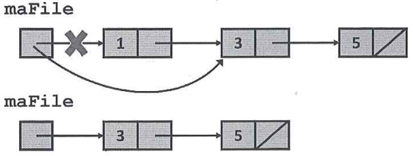

Historique :
Le langage C est apparu au début des années 1970. À l'époque, le développement sur les machines informatiques nécessitait l'emploi du langage d'assemblage spécifique à chacune d'elles. Le portage d'un programme, voire d'un système d'exploitation, depuis un modèle de machine vers un autre nécessitait alors une réécriture totale du code. En autorisant l'expression des constructions algorithmes usuelles (variables, boucles, fonctions...) dans un langage de plus haut niveau (plus facile à lire pour un être humain) qui pouvait être traduit (compilé) dans le langage spécifique à la machine sous-jacente, tout en autorisant l'accès aux ressources de bas niveau de cette machine (les périphériques et la mémoire notamment), le langage C pouvait être considéré comme un langage d'assemblage portable.
Le Langage C a été conçu en 1972 par Dennis Richie et Ken Thompson, au laboratoire Bell Labs, en vue de développer un nouveau système d'exploitation, Unix, portable sur différents hardwares. En 1978, Brian Kernigham et Dennis Richie publient une première définition du langage, The Programming Language, connue sous le nom C K&R ou C classique. u l'intérêt suscité par le langage, il est adapté par de nombreux développeurs et une standardisation s'avère nécessaire. Le "American National Standards Institute" (ANSI) débute les travaux en 1983. Ils déboucheront en 1988 sur une nouvelle norme, le standard ANSI C. En 1990, l'ISO adopte telle quelle cette norme (C90). D'autres évolutions du langage ont suivi et ont été normalisées par l'ISO : C99 en 1999 et C11 en 2011, dernière version, qui est celle que nous utiliserons pour ce cours.
Avantages :
Le langage C reste un langage des plus utilisés, vu ses très nombreux avantages dont les principaux sont :
- Langage structuré de bas niveau :
- C est un lagage structuré, déclaratif et récursif, offrant des structures classiques de contrôle et de déclaration. Considéré à l'origine comme un langage de haut-niveau (par rapport au langage d'assemblage), il est devenu un langage de bas niveau (par rapport notamment aux langages orientés objets), proche de la machine : chaque instruction du langage est conçue pour être compilée en un nombre d'instructions machine restreint et assez prévisible en termes d'occupation mémoire et de charge de calcul.
- Portabilité :
- Les compilateurs et bibliothèques logicielles existent sur la plupart des architectures. Un programme écrit en ANSI C pour un certain système peut donc facilement être déployé sur d'autres systèmes (Windows, Pc, mini, mainframe, etc).
- Code performant :
- Comme C permet d'utiliser des expressions et opérateurs qui sont très proches du langages machine, il permet le développement de programmes efficients et rapides. Il comporte également peu de code "inutile" (vérifications, etc.) car il est supposé que le programmeur sait ce qu'il écrit. De plus, les types définis par le langage sont conçus pour pouvoir correspondre directement aux types de données supportés par le processeur.
- Facilité d'apprentissage :
- C est basé sur un noyau de fonctions et d'opérateurs limité, qui permet la formulation d'expressions simples, mais efficaces. Cette simplicité facilite l'assimilation du langage.
Inconvénients :
Tous ces avantages impliquent certains inconvénients auxquels les programmeurs devront faire particulièrement attention :
- Efficience et compréhensible :
- Le C offre la possibilité d'utiliser des expressions compactes et efficientes. Cependant, leur utilisation nécessite de l'expérience et n'est pas facilement accessible à des débutants. Sans commentaires ou explications, les programmes peuvent par conséquent devenir incompréhensibles, donc inutilisables.
- Portabilité et bibliothèques de fonctions :
- La portabilité est l'un des avantages les plus importants de C : en écrivant des programmes qui respectent le standard ANSI-C, nous pouvons les utiliser sur n'importe quelle machine possédant un compilateur ANSI-C. Cependant, si un programmeur désire faire appel à une fonction spécifique de la machine (p. ex : utiliser une carte graphique spéciale), il risque de perdre la portabilité. Ainsi, les avantages d'un programme portable doivent être payés par la restriction des moyens de programmation.
- Discipline de programmation :
- C est un langage près de la machine, donc dangereux et bien que C soit un langage de programmation structuré, les compilateurs font peu de vérifications et ne nous forcent pas à adopter un certain style de programmation. Dans un certain sens, tout est permis et la tentation de programmer du "code spaghetti" est grande. (Même la commande 'goto', si redoutée par les puristes, ne manque pas en C !) Par conséquent, si le programmeur a beaucoup de libertés, il a aussi des responsabilités : il doit veiller à sécuriser son code, adopter un style de programmation strict et programmer de manière structurée et claire.
1er programme :
Voici un premier programme qui affiche un message de bienvenue sur la sortie standard stdout.
1 #include <stdio.h>
2
3 int main(){
4 print("Hello world\n");
return 0;
6 }Dans cet exemple, la ligne
- est une directive du préprocesseur (préfixée par #) qui inclut le contenu du fichier stdio.h dans notre source.
- est une ligne vide, ignorée par le compilateur.
- est le nom de la function principale, point d'entrée de l'application.
- est l'appel de la fonction printf qui affiche sur la sortie standard stdout (écran).
- indique la fin de la fonction main.
Avant d'exécuter notre application, nous devons compiler la source, c'est-à-dire la traduire en langage machine. La commande pour y arriver est la commande cc (pour C Compiler).
cc pgm1.coù pgm1.c est le nom du fichier source. Cette commande, si il n'y a aucune erreur, va générer un programme exécutable, appelé par défaut a.out. Avec l'option -o, nous pouvons spécifier un autre nom pour notre exécutable :
cc -o pgm1 pgm1.cRemarque : le compilateur cc :
Le compilateur utilisé durant ce cours est le compilateur cc (C Compiler) d'Ubuntu, qui correspond en réalité à un lien symbolique vers gcc (GNU Compiler Collection). gcc est une suite de logiciels libres de compilation qui gère à la fois le langage C et ses dérivés mais aussi le Java ou encore le Fortran. Afin de limiter cette suite logicielle, nous fixons différentes options de compilation :
- -std=c11 : ce flag définit le langage standard utilisé pour la compilation; ici ISO C11, la norme la plus récente du langage C, datant de 2011.
- -pedantic : ce flag indique au compilateur de rapporter tous les avertissements (warnings) liés au respect strict de la norme ISO C utilisée.
- -Werror=vla : ce flag transforme un avertissement spécifique en erreur de compilation; ici, le compilateur produira une erreur si un tableau de taille variable (Variable-Length Array, c'est-à-dire un tableau dont la taille est déterminée à l'exécution) est défini dans le programme. Alors que le standard ANSI-C (C90) interdisait de tels tableaux, la norme suivante (C99) les a permis et la dernière (C11) les a rendus optionnels. Ce flag permet donc d'éviter les problèmes de comptabilité induits par cette ambiguïté de la norme C11 vis-à-vis des VLA.
Pour plus d'informations sur les différentes options du compilteur, n'hésitez pas à consulter le manuel en tapant 'man gcc' dans un terminal.
Les éléments du langage :
Tout langage de programmation utilise un ensemble de caractères qui assemblés forment les différents éléments de ce langage, notamment les commentaires, les mots-réservés, les identificateurs, etc.
Les caractères permis :
- Les lettres de l'alphabet (majuscules et minuscules)
- Les chiffres
- Les caractères spéciaux (dans l'ordre Ascii) : ! " # % & ' ( ) * + , - . / : ; < = > ? [ \ ] ^ _ { | }
- Certains caractères, appelés séparateurs de mots, sont permis mais ignorés par le compilateur : le caractère d'espacement <sp>, la tabulation <tab>, la tabulation verticale, le carriage return, le return à la ligne '\n', le saut de page '\f'.
Les commentaires :
Les commentaires sont importants car ils permettent de se souvenir des intentions mises lors de l'écriture du programme, ou d'expliquer le code à d'autres lecteurs. En ANSI C, ils commencent par la balise ouvrante /* et se terminent par la balise fermante */ Ils peuvent se prolonger sur plusieurs lignes mais ne peuvent en aucun cas s'imbriquer. Par exemple :
#include <stdio.h>
/* début du programme */
int main(){ /* fonction principale */
printf("Hello world\n");
return 0;
}Depuis la norme C99, les commentaires de fin de ligne ont été repris de C++ pour être intégrés au langage C. Introduits par la balise //, ils mettent en commentaire tout ce qui suit sur la ligne.
#include <stdio.h>
// début du programme
int main(){ // fonction principale
printf("Hello world\n");
return 0;
}Les commentaires peuvent être utilisés pour introduire votre fichier, expliquer le rôle d'une variable ou d'une fonction, décrire un morceau du code, etc.
Les mots réservés :
Le langage C se réserve l'usage de 32 mots qui de ce fait ne peuvent pas être chosis par le programmeur comme identificateurs de variables ou de fonctions. Ces mots sont repris dans le tableau suivant :
| auto | double | int | struct |
| break | else | long | switch |
| case | enum | register | typpedef |
| char | extern | register | typedef |
| const | float | short | unsigned |
| continue | for | signed | void |
| default | goto | sizeof | volatile |
| do | if | static | while |
Les types de base :
Le tableau ci-dessous présente l'ensemble des types connus du compilateur C. On constate que le langage C dispose de deux sortes de types de base, les nombres entiers et les nombres flottants, et d'une famille infinie de types dérivés obtenus en appliquant quelques procédés récursifs de construction, soit à des types fondamentaux soit à des types dérivés définis de la même manière.
On remarque également que le C est assez pauvre en types de base. Il ne connait que les types numériques entier et
Les types entiers :
Ils sont codés sur un nombre déterminé de bytes. Le tableau suivant reprend les différents types entiers.
| 1 byte | char | |
| unsigned char | 0 à 255 | |
| signed char (en ANSI C) | -128 à 127 | |
| 2 bytes | short (short int) | -32768 à 32767 |
| unsigned short (unsigned short int) | 0 à 65535 | |
| 2 ou 4 bytes | int | |
| unsigned (unsigned int) | ||
| 4 bytes | long (long int) | -2147483648 à 2147483647 |
| unsigned long (unsigned long int) | 0 à 4294967295 |
En principe, le type int correspond à la taille d'entier la plus efficace, c'est-à-dire la plus adaptée à la machine utilisée. Sur certains systèmes et compilateurs int est synonyme de short (2 bytes), sur d'autres il est synonyme de long (4 bytes) (donc nous aurons toujours : sizeof(short) <= sizeof(int) <= sizeof(long)). Le type int peut par conséquent poser un problème de protabilité : le même programme, compilé sur deux machines distinctes, peut avoir des comportements différents. D'où un conseil important : n'utilisez le type int que pour des variables locales destinées à contenir des valeurs raisonnablement petites (inférieures en valeur absolue à 32767). Dans les autres cas, il vaut mieux expliciter char, short ou long selon le besoin.
Le type char est un type entier qui contient le code Ascii du caractère mais qui peut être utilisé dans les expressions arithmétiques.
Les types réels :
Leurs tailles sont laissées à la discrétion du compilateur (notamment en fonction du processeur). Le langage C connaît 3 types réels : float, double et long double.
Le pseudo-type booléen :
Le type booléen n'existant pas, il est recommandé d'utiliser un type entier, sachant que la valeur FAUX correspondra à la valeur nulle 0 tandis que VRAI sera représentée par toute autre valeur. Toutefois, le résultat d'une expression logique est toujours égal à 1.
Opérateurs :
La plupart des opérateurs définis dans le langage C ont été repris dans la définition du Java. Voic les principaux, classés, par ordre de priorité décroisssante (priorité maximale = 17). Nous en découvrirons d'autres par la suite.
| Niveau de priorité | Opérateur | Description | Associativité |
|---|---|---|---|
| 17 | [] | indice de tableau | gauche |
| (...) | appel de fonction | ||
| . | sélection de membre | ||
| -> | sélection de membre par déréférencement | ||
| 16 | ++ | post-incrémentation | gauche |
| -- | post-décrémentation | ||
| 15 | ++ | droite | |
| -- | pré-décrémentation | ||
| 15 | sizeof | calcule la taille d'une variable (d'un type) | droute |
| ~ | complément à 1 (inversion des bits) | ||
| ! | non logique | ||
| + | identité (opérateur unaire) | ||
| - | changement de signe complément à 2 | ||
| & | adrese | ||
| * | indirection, déréférenciation | ||
| 14 | (type) | cast, changement forcé de type | droite |
| 13 | * | multiplication | gauche |
| / | division | ||
| % | modulo (uniquement si opérandes entiers) | ||
| 12 | + | addition | gauche |
| - | soustraction | ||
| 11 | << | shift vers la gauche | gauche |
| >> | shift vers la droite (shift logique si premier opérande est unsigned) | ||
| 10 | < | inférieur | gauche |
| > | supérieur | ||
| <= | inférieur ou égal | ||
| >= | supérieur ou égal | ||
| 9 | == | égal | gauche |
| != | différent | ||
| 8 | & | AND bit à bit | gauche |
| 7 | ^ | XOR bit à bit | gauche |
| 6 | | | OR bit à bit | gauche |
| 5 | && | AND logique (évaluation court-circuitée) | gauche |
| 4 | || | OR logique (évaluation court-circuitée) | gauche |
| 3 | ? | opérateur ternaire conditionnel | droite |
| 2 | = *= /= %= += -= <<= >>= &= ^= |= | affectation | droite |
| 1 | , | évaluation séquentielle | gauche |
Les conversions de types :
La conversion de type est le fait de convertir une valeur d'un type (source) dans un autre (cible). On parle aussi de coercition ou de cast en anglais.
C réalise un certain nombre de conversions pour interpréter une valeur dans un autre type, soit explicite grâce au cast, soit de manière implicite.
Conversions explicites par cast :
Le cast (ou transtypage explicite) d'une expression permet de changer de la valeur renvoyée par l'évaluation de cette expression.
| type de destination (cast) | type d'origine | exemple | Remarque |
|---|---|---|---|
| un type entier | un type entier ou réel | i = (int) x | ATTENTION, si x est réelle, il y a perte de la partie décimale de la valeur. |
| un type réel | un type entier ou réel | d = (double) i |
Conversions implicites :
Par ailleurs, C convertit automatiquement certaines expressions dans un type préférentiel, lors de leur évaluation. Avant d'utiliser un opérateur binaire (sauf << et >>), une conversion binaire peut également être réalisée pour permettre aux deux opérandes d'être de même type. Enfin, une conversion peut être réalisée lors d'une affectation.
Les conversions unaires vont s'appliquer à un seul opérande, en respectant les règles énoncées dans le tableau suivant.
| type original de l'opérande | est converti en |
|---|---|
| char ou short | int |
| unsigned char ou unsigned short | int ou unsigned (le plus petit qui parvient à garder la valeur) |
Les conversions binaires vont s'appliquer sur un des opérandes, en respectant la hiérarchie des types suivantes :
int < unsigned < long < unsigned long < float < double
L'opérande d'un type inférieur est automatiquement promu dans le type de l'autre opérande (de type supérieur).
Les conversions d'affectation permettent à l'opérande de droite d'être converti pour rester compatible avec le type de l'opérande de gauche.
Dans l'exemple suivant,
long a;
int b = 4;
double x = 4.2;
double y = 2.3;
a = (int)x*y + b;en fonction de la priorité des opérateurs, nous rencontrons les conversions suivantes :
| (int)x | conversion explicite | la valeur réelle contenue dans la variable double x est convertie en int avec perte de la partie décimale |
| (int)x*y | conversion binaire | la multiplication est réalisée dans le type double, le premier opérande (int)x est converti en double (comme y) |
| (int)x*y + b | conversion binaire | la somme est réalisée dans le type double, le deuxième opérande b est converti en double |
| a = (int)x*y + b | conversion d'affectation | le résultat est converti en long int avec perte de la partie décimale |
Que vaut le résultat de cette expression ?
Les littéraux :
Il est tout à fait possible d'introduire des valeurs dans le code du programme. Ces valeurs peuvent être des valeurs entières ou réelles, des caractères et même des chaînes de caractères (strings).
représentant une valeur entière :
- en notation décimale (int par défaut) : 15, -232
- en notation décimale (pour un long) : 15L
- en notation décimale (pour un unsigned) : 15U
- en notation décimale (pour un unsigned long) : 15UL
- en noatation octale : O17
- en notation hexadécimale : 0XF, 0XABC3
représentant une valeur réelle :
- double par défaut : 1.45, -3.14, 31.4E-14
- pour des float : 1.45F, -2E3F
- pour des long double : 1.45L, -2E3L
représentant un caractère :
En général, C considère les caractères sur un byte (permettant de représenter les 128 caractères du code Ascii standard). Les caractères sont introduits entre des simples quotes. Ils peuvent être donnés :
- sous forme de caractères : 'a', 'z', '2'
- en notation octale : '\377', '\0'
-
sous forme échappée :
- '\a' : sonnerie
- '\b' : backspace
- '\f' : saut de page
- '\n' : passage à la ligne
- '\r' : carriage return
- '\t' : tabulation
- '\v' : tabulation verticale
- '\\' : le caractère \
- en notation hexadécimale : '\xab'
représentant un chaîne de caractères :
Elles sont notées entre les caractères doubles quotes ", par exemple "Voici une chaîne de caractères".
Elles sont stockées, en mémoire, dans le Data Segment, ce qui signifie qu'elles sont invariables durant la vie de l'application.
Elles sont constituées du tableau formé par les caractères de la chaîne et terminé par le caractère de code Ascii 0X00 ('0').
Il est possible d'incorporer des caractères représentés par leur valeur octale ou hexadécimale, protégés par '\'. Cela nécessite toutefois d'être prudent car si la valeur du caractère ainsi précisée dépasse la taille d'un byte ou utilise des symboles incorrects, le compilateur interprétera la valeur en fonction de ses règles de conversion. Par exemple "\191" sera constituée des caractères '\1', '9', '1', '\0', de même "\1111" sera une chaîne de 2 caractères '\111', '1' et '\0', tout comme "\xabc" est constituée de '\xab', 'c', et '\0'.
Les identificateurs :
Les identificateurs représentent le nom d'un élément utilisé dans un programme pour identifier une variable, une constante, une fonction, etc.
Ils sont composés de lettres (minuscules ou majuscules), de chiffres et du caractère '_', mais il ne peuvent pas commencer par un chiffre. Le C est "case sensitive", c'est-à-dire que les minuscules et majuscules sont considérées comme des caractères différents.
Déclaration et définition d'une variable :
C distingue déclaration et définition de variables et de fonctions. Une déclaration indique simplement l'existence d'un élément dont le nom et le type ont été spécifiés. Il n'y a pas de réservation de mémoire et l'élément ne peut pas encore être utilisé. Par contre lors d'une définition de variable ou de fonction, il y a physiquement réservation d'espace mémoire (pour y stocker une valeur ou pour donner le code de la fonction). Nous reviendrons plus tard sur cette distinction.
Une variable se déclare en spécifiant son type et l'identificateur qui la représente dans le programme, tandis que lorsqu'on définit une variable, il est possible de lui donner une valeur initiale. Par exemple :
int a; /* déclaration ou définition de la variable a de type int */
short b = 3; /* définition de la variable b de type short, initialisée à la valeur 3 */Les déclarations (définitions) multiples (plusieurs déclarations (définitions) dans la même expression) sont permises.
int a, b, c = 5, d; /* définition des variables de type int a, b, c, d où seule c est initialisée */Remarque : la valeur d'initialisation peut être le résultat d'une expression mais elle doit être connue lors de la compilation.
int taille = 3 * 4;
int tailleD = taille * 2;Les constantes :
En ANSI C, il existe deux techniques pour définir une constante : soit en utilisant une macro (via la directive de préprocesseur #define)
#define MAX 10qui sera convertie en sa valeur lors de la précompilation, soit en définissant une variable qualifiée de constante (via le mot réservé const) :
const int MAX = 10;Notez que, par convention, l'identificateur d'une constante sera toujours composé de lettres majuscules.
Les instructions :
Le langage C est un langage structuré.
Un programme écrit en C est composé d'une suite d'instructions pouvant être une instruction simple, un bloc d'instructions, une répétitive ou une alternative. Le C permet également l'écriture de fonctions.
Les instructions simples :
-
Le C accepte l'usage de l'instuction nulle (ou instruction vide), marquée par le caractère ';', le terminateur d'instructions.
; /* instruction nulle */ -
Il permet également l'utilisation de l'instruction-expression, qui évalue l'expression pour ses effets de bord.
20 + 2 * b; /* instruction sans effet de bord : évaluation puis oubli du résultat */ a = 20 + 2 * b; /* instruction avec effet de bord : évaluation puis affectation du résultat à une variable */Nous rencontrerons essentiellement trois cas d'utilisation : les affectations
a = b * c;les pré ou post incrémentations et décrémentations
a++; a--; ++a; --a;et les appels de fonctions de type void ou dont la valeur de retour n'est pas exploité
printf(...); - break : instruction qui permet de quitter une branche du switch ou de sortir d'une répétitive directement, sans réévaluer la condition.
- continue : instruction qui permet de quitter une branche du switch ou de sortir d'une répétitive directement, sans réévaluer la condition.
Le bloc d'instructions :
Lorsque plusieurs instructions doivent être traitées conjointement, elles sont regroupées en un bloc d'instructions encadrés par une paire d'accolades '{' et '}'.
{
instr1;
instr2;
...
}Du point de vue de la syntaxe, un bloc se comporte comme une instruction unique et figure en tout endroit où une instruction simple est permise. Il n'est pas suivi par le ';' car les accolades servent de délimiteurs.
Un bloc d'instructions peut débuter par la définition d'un certain nombres de variables, locales à ce bloc d'instructions (c'est-à-dire leur existence se termine à la fin du bloc).
{
définition de variables;
liste d'instructions
}Attention : La norme ANSI-C (C90) oblige les variables à être toujours déclarées avant la première instruction du bloc. Cette contrainte a été levée depuis la norme C99. Cependant le mélange de déclarations et d'instructions n'est pas recommandé afin de préserver la lisibilité du code.
Si un identificateur redéfinit une variable déjà existante, la nouvelle variable occulte l'ancienne, définie dans un bloc englobant. Dans l'exemple suivant,
{ // bloc englobant
int i = 5;
{ // sous-bloc
int i = 7;
printf("i vaut %d\n", i++);
}
printf("i vaut %d\n", i);
}l'affichage donnera :
i vaut 7
i vaut 5Notez que les instructions imbriquées (que ce soit dans un bloc ou dans une structure de contrôle de type alternative ou répétitive) sont indentées à l'aide de tabulations ou d'espaces, de façon homogène dans tous les fichiers sources d'un projet. Cette convention d'écriture facilite la maintenance et la relecture des sources.
Les répétitives :
Le langage C connaît différents types de répétitives : le while, le for et le do ... while. Toutes ces répétitives utilisent une condition de continuation, c'est-à-dire que l'itération suivante est réalisée si la condition testée vaut VRAI. En d'autres mots, la boucle se termine lorsque la condition devient FAUX.
while :
Cette répétitive est utilisée lorsque l'on désire répéter plusieurs fois une instruction (ou un bloc d'instructions). La condition est vérifiée avant d'entamer l'itération et donc si la condition est directement FAUX, l'instruction n'est pas exécutée.
while (cdt)
instruction;ou
while (cdt) {
instruction1;
instruction2;
}Pour éviter toute ambiguité, une répétitive sans instruction s'écrira comme suit (en utilisant une instruction nulle) :
while (cdt)
;Dans l'exemple suivant, nous effectuons une lecture sur l'entrée standard stdin et quittons la répétitive lorsque l'utilisateur introduit la fin des données.
char ligne[256];
while (fgets(ligne, 256, stdin) != NULL) {
printf("%s", ligne);
}do ... while :
Cet autre type de répétitive s'emploie très rarement, uniquement lorsque l'on est certain que la répétitive doit s'exécuter au moins une fois. Pour éviter toute confusion avec le while, il est recommandé de respecter les conventions suivantes :
- On mettra toujours les instructions entre accolades, même si il n'y a qu'une seule instruction dans le bloc.
- L'accolade fermante sera écrite sur la même ligne que le while.
- On placera toujours le point virgule directement après la condition, sur la même ligne, pour éviter toute confusion avec le while instruction nulle.
do {
instruction;
} while (cdt);for :
Le for est une écriture condensée du while. Il est constitué de 3 parties : l'initialisation, la condition et l'adaptation.
L'initialisation est exécutée à l'entame de la répétitive, une seule fois au début de l'exécution de la répétitive; si plusieurs expressions doivent composer cette initialisation, elles sont séparées par une virgule ','.
La condition est une condition de continuation, elle est exécutée une première fois juste après l'initialisation (et donc le corps de la répétitive peut ne pas être exécuté) et à chaque nouvelle répétition de la boucle.
L'adaptation est exécutée à la fin de chaque itération, juste avant une nouvelle évaluation de la condition.
for (int i = 0; i < 5; i++) {
printf("%d\n", i);
}Bien que l'ANSI-C l'interdise, la définition de variables locales dans l'initialisation d'un for est autorisée dans les normes suivantes. Cette fonctionnalité entraîne la possibilité de créer une variable de boucle temporaire pour l'instruction for :
{
for (int i = 0; i < 10; i++) {
// variable i utilisable uniquement dans la boucle for
}
// variable i inexistante
}restreint l'utilisation de la variable compteur au corps de la boucle for, contrairement à l'écriture :
{
int i;
for (i = 0; i < 10; i++) {
// variable i utilisable
}
// variable i utilisable
}
// variable i inexistanteRemarque : D'un point de vue algorithmique, il est interdit de modifier la variable compteur ('i' dans l'exemple précédent) dans le corps d'une boucle for car cette structure de contrôle applique automatiquement l'adaptation du compteur (ici l'incrémentation i++) à chaque tour de boucle.
Remarque : Une boucle for peut s'écrire de manière parfaitement équivalente à l'aide d'une boucle while. Ansi, si l'on reprend la boucle for du dernier exemple :
int i = 0; // initialisation
while (i < 10) { //condition de continuation
printf("%d\n", i);
i++; // adaptation
}Dans ce cas, quand doit-on utiliser un for et quand doit-on utiliser un while ? Simple : on utilise la boucle for quand on connaît à l'avance le nombre de répétitions de la boucle et on utilise le plus souvent la boucle while quand on ne sait pas combien de fois la boucle va être exécutée.
Les alternatives :
C connaît deux types de traitements conditionnels : les alternatives, qui permettent de réaliser ou pas un traitement en fonction d'une condition, et les switch, qui réalisent un traitement en fonction du contenu d'une variable dénombrable (entière).
if :
Plusieurs syntaxes sont possibles pour marquer une alternative simple
if (cdt)
instruction;soit la forme avec accolades (indispensables si le bloc est composé de plusieurs instructions; optionnelles si le bloc est composé d'une instruction simple)
if (cdt) {
instruction;
}et les if else
if (cdt) {
instruction1;
...
} else {
instruction2;
...
}Attention au problème du dangling else : le else se rapporte toujours au dernier if libre qui le précède et dans le même bloc (quelle que soit l'indentation utilisée par le programmeur).
if (a > b)
if (c > d)
if (c > 0)
c++;
else
d++
else
a++
switch :
Le switch peut être considéré comme un branchement multiple en fonction d'une valeur entière. Dès que l'on est aiguillé vers une branche, le traitement se poursuit en séquence. Cela signifie que toutes les instructions qui suivent le case sont excutées, jusqu'à la fin du bloc ou jusqu'à une instruction de rupture break qui permet de quitter la structure de contrôle.
swith (exp) {
case val1 :
case val2 :
... // instructions exécutées si exp = val1 ou val2
break;
case val3 :
... // instructions exécutées si exp = val3
case val4 :
... // instructions exécutées si exp = val4 ou val3
break;
default:
... // instructions exécutées si exp <> val1, val2, val3, val4
}Remarque : Si l'expression du switch ne vaut aucune des valeurs case ou qu'aucun break n'a été exécuté, c'est la clause default qui sera exécutée.
Remarquez qu'une instruction switch classique, telle que :
switch (exp) {
case val1 :
instructions1
break;
case val2 :
instructions2
break;
case val3 :
instructions3
break;
default :
instructions4
}peut être exprimée à l'aide d'instructions if imbriquées :
if (exp == val1) {
instructions1;
} else if (exp == val2) {
instructions2;
} else if (exp == val3) {
instructions3;
} else {
}Notez que pareille imbrication ne nécessite pas d'augmenter l'indentation de chaque nouveau if. Cette convention d'écriture exprime simplement le fait qu'un seul traitement du branchement conditionnel sera exécuté. Tous les traitements sont donc écrits sur le même niveau d'indentation. Bien que ces deux écritures peuvent être considérées comme équivalentes, l'utilisation d'un switch sera préférée car plus simple et plus lisible.
Les tableaux :
Les tableaux en langage C ressemble à ce que vous avez appris en Java. Mais vous devez être attentifs aux nombreuses différences qui risquent de vous poser problèmes.
En C, la taille des tableaux est fixée à la compilation. C'est le résultat d'une expression entière constante qui ne peut en aucun cas être modifiée en cours d'exécution. Nous verrons plus tard qu'il existe une autre forme de tableau, dynamique, qui permet de gérer la taille de la table en cours d'exécution de l'application.
Comme il a été écrit dans l'introduction, le langage C ne réalise que très peu de contrôle, notamment en ce qui concerne la gestion des tableaux. Ni à la compilation, ni durant l'exécution, il n'y a vérification que l'indice (numéro de l'élément dans le tableau) reste dans les limites de l'index (ensemble des indices possibles (de 0 à taille-1)). Il n'y aura notamment pas d'avertissement si vous utilisez un indice négatif, ni si vous dépassez la limite de la table.
Définition d'un tableau :
Pour définir un tableau dans un programme C vous devez spécifier le type des éléments, le nom du tableau et sa taille. Notez que l'index d'un tableau commence toujours à la valeur 0.
Une seule syntaxe est reconnue :
int table[4]; // définition d'une table de 4 int d'indices compris entre 0 et 3
double monTableau[N * M]; // valable si M et N sont connus à la compilationNotez que la dimension d'un tableau ne peut être qu'une constante ou une expression constante (cf. flag vla du compilateur cc), telles que :
#define N 50 // définition d'une constante N
...
int t[N];
float h[2 * N - 1];Remarquez qu'une constante symbolique, définie à l'aide du mot-clé const, ne constitue pas une expression constante. Elle ne convient donc pas pour définir la taille d'un tableau.
Une table peut être initialisée lors de sa définition. Les valeurs doivent alors être spécifiées entre accolades, comme dans l'exemple :
int table[4] = {1, 123, -15, 8};Dans ce cas, il faut rester attentif au fait que la taille de la table doit être suffisante pour éviter une erreur de compilation. Par contre, si la taille est supérieure au nombre de valeurs d'initialisation, les derniers éléments sont initialisés à la valeur 0. Par exemple : dans la définition suivante,
int table[4] = {1, 3};les 2 derniers éléments (aux indices 2 et 3) de la table sont automatiquement initialisés à 0.
Autre possibilité, utiliser une taille implicite pour la table, valant le nombre d'éléments donnés en initialisation, comme dans l'exemple suivant :
int[] = {1, 5, -67};La table aura dès lors une dimension de 3.
Utilisation :
L'accès à un élément d'un tableau se fait en spécifiant le nom de la table et la valeur de l'indice noté entre les caractères '[' et ']'.
table[2]++; // post incrémentation du 3ème élément du tableauLe langage C n'a pas prévu de conserver la taille d'un tableau dans une structure particulière. Cette spécificité du langage a comme conséquences :
- qu'il est impossible d'obtenir la taille sans programmer explicitement sa gestion;
- que le compilateur n'offre aucun contrôle quant aux valeurs utilisées comme indice, que cette valeur soit négative ou supérieure à la taille de la table. Ce dernier point peut constituer une grande faille de sécurité.
Puisque l'index commence toujours à 0, les valeurs possibles pour un indice sont comprises entre 0 et la taille - 1.
Tableaux multidimensionnels :
Un tableau à 2 dimensions est considéré en C comme un tableau de tableaux ce qui implique que les indices doivent s'indiquer chacun entre crochets '[' et ']'. L'instuction int matrice[4][3]; est la définition d'un tableau de 4 sous-tableaux (4 lignes), chacun contenant 3 int (3 colonnes). En mémoire, ces 12 éléments sont stockés consécutivement.
L'initialisation d'un tableau multidimensionnel se fait en initialisant chaque sous-tableau. Les sous-tableaux non explicitement initialisés le sont à 0.
int matrice[3][5] = {{1, 3, 5}, {2, 4}};L'accès à un des éléments de cette matrice se réalise en indiquant les 2 indices, comme dans l'exemple suivant qui initialise le dernier élément de la table déclarée précédemment à 5 :
matrice[2][4] = 5;Une erreur fréquente est l'utilisation d'une notation semblable à celle employée en mathématique, en séparant les indices par une virgule. Cette écriture matrice[2, 1]; est acceptée par le compilateur mais a toutefois une signification différente de ce que vous avez appris en mathématique. (Cette notation est en fait équivalente à matrice[1], qui référence la seconde ligne du tableau. En effet, en C, l'opérateur virgule signifie que les expressions qui l'entourent sont évaluées séquentiellement de gauche à droite, donc "2, 1" vaut1. Nous verrons plus tard que matrice[1] correspond à un pointeur vers un int.)
Les pointeurs :
La présentation du langage C nous a fait remarqué qu'un des intérêts du C est son efficacité. Une de ces bonnes performances tient à la gestion aisée de la mémoire, proche de ce que permet un langage d'assemblage. La manipulation des adresses mémoire se fait au moyen des pointeurs. Un pointeur est un type particulier, capable de conserver l'adresse d'un byte de la mémoire. Le pointeur est intimement lié au type de la donnée stockée à cette adresse, de manière à en respecter les contraintes.
Utilisation :
La définition d'une variable de type pointeur nécessite de spécifier le type de la donnée qui sera accédée par le pointeur. Le symbole utilisé pour définir un type pointeur est le caractère *. Par exemple, int *ptrI; définit ptrI comme étant un pointeur sur un int, c'est-à-dire une variable qui contient l'adresse du premier byte d'une zone mémoire pouvant contenir un int. Tel que défini, le pointeur n'a pas été initialisé et il n'y a pas de réservation de place mémoire pour la valeur pointée.

définit ptrI comme étant un pointeur sur un int, c'est-à-dire une variable qui contient l'adresse du premier byte d'une zone mémoire pouvant contenir un int. Tel que défini, le pointeur n'a pas été initialisé et il n'y a pas de réservation de place mémoire pour la valeur pointée. Un pointeur doit donc être initialisé avant d'être utilisé.
Pour être initialisé, un pointeur doit recevoir une adresse. Différentes possibilités s'offrent à nous :
-
l'adresse d'une variable déjà définie; pour l'obtenir, il faut utiliser l'opérateur &.
ptrI = &varA;ptrI reçoit l'adresse la variable varA.

-
l'adresse d'un tableau :
ptrI = tab;ptrI reçoit l'adresse du tableau tab, c'est-à-dire l'adresse du premier élément du tableau. Cette affectation est donc équivalente à : ptrI = &tab[0].
- l'adresse d'une zone mémoire dynamique (voir plus bas).
- ou encore l'adresse NULL spécifiant une adresse inaccessible. Cette valeur sera également utilisée comme valeur de retour pour indiquer qu'une fonction ne s'est pas terminée correctement.
Le contenu de la mémoire référencée par un pointeur est obtenu en appliquant l'opérateur * au pointeur (la déréférenciation), comme le montre l'exemple suivant :
printf("%d", *ptrI); // affiche la valeur entière pointée par ptrILa priorité des opérateurs :
Nous avons abordé la priorités des principaux opérateurs lors de la présentation du langage. Nous pouvons ajouter à la liste les opérateurs liés à la manipulation des pointeurs :
| Niveau de priorité | Opérateur | Description | Associativité |
|---|---|---|---|
| 17 | [] | indice de tableau | gauche |
| (...) | appel de fonction | ||
| 16 | ++ | post-incrémentation | gauche |
| -- | post-décrémentation | ||
| 15 | ++ | pré-incrémentation | droite |
| -- | pré-décrémentation | ||
| 15 | sizeof | calcule la taille d'une variable (d'un type) | droite |
| ~ | complément à 1 (inversion des bits) | ||
| ! | non logique | ||
| + | identité (opérateur unaire) | ||
| - | changement de signe complément à 2 | ||
| & | adresse | ||
| * | indirection, déréférenciation | ||
| 14 | (type) | cast, changement forcé de type | droite |
| 13 | * | multiplication | gauche |
| / | division | ||
| % | modulo (uniquement si opérandes entiers) | ||
| 12 | + | addition | gauche |
| - | soustraction |
Les conversions de pointeurs :
Les compilateurs C remplacent automatiquement les tables par des pointeurs. Ils appliquent l'arithmétique des pointeurs pour convertir les indices. En C, un tableau est donc considéré comme un pointeur constant, sa valeur (l'adresse en mémoire des données) est invariante. D'autres conversions sont permises, telles que les conversions explicites (par cast)
| type de destination (cast) | type d'origine |
|---|---|
| type entier | pointeur |
| T* ou void* |
un type entier void* Q* |
ou automatiques (lors d'affectations) sont appliquées :
| type à gauche | type permis à droite (sans cast) |
|---|---|
| void* | 0 ou T* ou void* |
| T* ou void* | 0 ou T* ou void* |
Mémoire dynamique :
Vous avez vu dans le cours de langage d'assemblage qu'il existe plusieurs segments pour constituer un programme.

Le code segment contient toutes les lignes de code; le data segment contient les données initialisées, le bss regroupe les variables globales non initialisées à la compilation (elles seront dans ce cas mise à zéro); la pile mémorise les informations utiles des sous-programmes et le heap correspond à la partie de la mémoire que le programme va utiliser pour alimenter les demandes de mémoire dynamique.
Dans un programme C, la mémoire dynamique est allouée en réponse à l'appel de la fonction malloc, ou d'une fonction dérivée calloc ou realloc.
La fonction malloc alloue le nombre de bytes demandé dans l'argument, cette mémoire est accédée grâce au pointeur retourné par la fonction. En cas de problème, la fonction renvoie un pointeur nul NULL. Il est donc impératif de toujours tester le code retour de la fonction. Voici un exemple de création d'une zone mémoire pouvant contenir une valeur double :
double *ptrD;
if ((ptrD = (double *)malloc(sizeof(double))) == NULL) {
perror("Allocation dynamique de ptrD impossible");
return 1;
}De même, la fonction malloc permet de créer des tableaux dynamiques, comme dans l'exemple suivant qui crée un tableau de 10 int :
int *tabDyn;
if ((tabDyn = (int*)malloc(10 * sizeof(int))) == NULL) {
perror("Allocation dynamique de ptrD impossible");
return 1;
}La particularité de la fonction calloc est d'allouer une zone mémoire initialisée à zéro tandis que la fonction realloc permet de réallouer une zone mémoire en en modifiant la taille tout en conservant le contenu stocké dans la mémoire.
if ((tabDyn = (int*)realloc(tabDyn, 20 * sizeof(int))) == NULL) {
perror("Allocation dynamique de tabDyn impossible");
return 1;
}Dans cet exemple, la table tabDyn est réallouée, éventuellement à un autre endroit de la mémoire, sa taille est doublée mais le contenu est conservé.
Pour une gestion saine de l'espace mémoire, il faut éviter de provoquer des fuites de mémoire (memory leaks), c'est-à-dire des zones mémoires qui ne sont plus accessibles, donc perdues pour l'application. La conséquence d'une telle fuite peut être la saturation de la mémoire de la machine, ce qui provoque l'interruption du processus. Il est par conséquent recommandé de libérer toute mémoire dynamique devenue inutile dans l'application. Cette libération de mémoire se fait grâce à la fonction free.
free(tabDyn);Une règle simple à appliquer pour éviter les fuites de mémoire est de faire systématiquement correspondre un appel à free pour chaque appel à malloc ou calloc.
arithmétique des pointeurs :
Le langage C permet de modifier la valeur d'un pointeur en y appliquant des expressions mettant en jeu une arithmétique particulière, l'arithmétique des pointeurs. Dans cette technique, le compilateur prend en compte la taille de l'élément pointé lors de l'ajout (ou la suppression) d'une ou de plusieurs unités, comme dans l'exemple suivant :
int *ptr, tab[5] = {3, 8, 11, 2, -4};
ptr = tab;ptr++;où l'incrémentation permet d'ajouter au pointeur ptr un nombre de bytes égal à la taille de l'élément et donc d'accéder à l'élément suivant de la table. Comme toujours en C, il n'y a pas de vérification et la prudence reste de vigueur.
La soustraction de 2 pointeurs de même type donne le nombre d'éléments qui séparent les 2 adresses (et pas le nombre de bytes !).
indice = ptr - tab;Remarquez que l'addition de 2 pointeurs est permise par le compilateur mais le résultat sera non significatif, sans doute hors de l'espace d'adressage du programme. Les autres opérations sont sans objet.
Parcours d'une table par pointeurs :
Il est plus efficace de parcourir une table en utilisant un pointeur, car de cette façon, on évite le calcul de l'indice à chaque itération. Par exemple, le code
int taille = 10, table[10];
for (int i = 0; i < taille; i++)
printf("%d\n", table[i]);sera remplacé avec bonheur par la version utilisant un pointeur :
int taille = 10, table[10];
for (int *q = table; q - table < taille; q++)
printf("%d\n", *q);Dans la seconde boucle, l'accès à un élément du tableau ne nécessite que des incrémentations de pointeurs (q++), alors que dans la première boucle un tel accès implique des additions et des multiplications. En effet, table[i] est en réalité évalué comme suit : table + i*sizeof(int) (c'est-à-dire l'adresse du tableau, plus i fois le nombre de bytes occupés par un int).
Tableaux multidimensionnels statiques vs dynamiques :
Supposons que l'on implémente un algorithme qui requiert une matrice à nl lignes et nc colonnes.
Version statique :
#define NL 20 /* constantes connues à la compilation */
#define NC 30
int main() {
int i, j;
/* définition d'une matrice statique */
double m[NL][NC];
/* initialisation de nl et nc en supposant que nl <= NL et nc <= NC */
int nl = ... ;
int nc = ... ;
/* initialisation de la matrice m. Par exemple : */
for (i = 0; i < nl; i++)
for (j = 0; j < nc; j++)
m[i][j] = i;
}En définissant une matrice statique, l'ensemble de l'espace mémoire nécessaire est alloué dès la compilation. La matrice est réalisée par un bloc en mémoire, comme le montre la figure 1.

La variable m contient une valeur constante égale à l'adresse du tableau, c'est-à-dire l'adresse du premier élément du tableau : m ↔ &m[0][0].
De même, m[i], pour i entre 0 et NL-1, est un pointeur constant vers un objet de type double, qui est le premier élément de la ligne d'indice i : m[i] ↔ &m[i][0].
Un élément particulier de cette matrice est une L-value (c'est-à-dire une variable), qui sera notée m[i][j]. On peut l'interpréter de la manière suivante :
m[i][j]
= *(m[i] + j)
= *(m + i * NC + j)
= *(double) ((unsigned)m + (i * NC + j) * sizeof(double))
Nosu retrouvons l'expression classique i * NC + j caractérisant l'accès à un élément m[i][j] d'une matrice NL*NC. Elle traduit la disposition "par lignes" des tableaux rectangulaires.
Ce mécanisme de double indexation implique que NC doit être connu à la compilation pour que l'expression i * NC + j ait un sens.
Voici différentes manières de parcourir un tableau statique :
// parcours par indices pour une taille logique nl*nc
for (i = 0; i < nl; i++) {
for (j = 0; j < nc; j++)
printf("%f ", m[i][j]);
printf("\n");
}
// parcours par indice pour une taille logique nl*nc
double *mptr = (double *)m; // ou mptr = &m[0][0]
for (i = 0; i < nl; i++) {
for (j = 0; j < nc; j++)
printf("%f ", mptr[i * NC + j]);
printf("\n");
}
// parcours par indice et pointeur pour une taille logique nl*nc
for (i = 0; i < nl; i++) {
double *lptr = (double *)m[i]; // ou lptr = &m[i][0]
for (double *p = lptr; p - lptr < nc; p++)
printf("%f ", *p);
printf("\n");
}
// parcours par pointeur valable uniquement si l'entièreté des NL*NC éléments (taille physique) sont parcourus!
double *mptr = (double *)m; // ou mptr = &m[0][0]
for (double *p = mptr; p - mptr < NL * NC; p++) {
printf("%f ", *p);
if ((p - mptr + 1) % NC == 0)
printf("\n");
}La manipulation de tableaux, et non de pointeurs, possède certains inconvénients dûs au fait qu'un tableau est un pointeur constant. Ainsi :
- on ne peut pas créer de tableaux dont la talle est une variable du programme,
- on ne peut pas créer de tableaux bidimensionnels dont les lignes n'ont pas toutes le même nombre d'éléments.
Ces opérations deviennent possibles dès que l'on manipule des pointeurs alloués dynamiquement.
Version dynamique (par souci de clarté nous y avons omis la détection des échecs de malloc) :
int main() {
int i, j;
/* définition d'une matrice en tant que pointeur vers un pointeur */
/* (ici, pas besoin de constante connue à la compilation) */
double **m;
/* initialisation de nl et nc */
int nl = ... ;
int nc = ... ;
/* initialisation des pointeurs */
m = malloc(nl * sizeof(double *));
for (i = 0; i < nl; i++)
m[i] = malloc(nc * sizeof(double));
/* initialisation de la matrice m. Par exemple : */
for (i = 0; i < nl; i++)
for (j = 0; j < nc; j++)
m[i][j] = i;
/* libération de la mémoire dynamique */
for (i = 0; i < nl; i++)
free(m[i]);
free(m);
}
La première allocation dynamique réserve pour l'objet pointé par m l'espace-mémoire correspondant à nl pointeurs sur des doubles. Ces nl pointeurs correspondent aux lignes de la matrice. Les allocations dynamiques suivantes réservent pour chaque pointeur m[i] l'espace-mémoire nécessaire pour stocker nc doubles.
Dans cette manière de procéder, les lignes de la matrice sont allouées à l'occasion de nl appels distincts de malloc. La matrice est dès lors réalisée par des morceaux de mémoire éparpillée, comme le montre la figure 2.

Il est remarquable qu'un élément de la nouvelle matrice ainsi déclarée se note encore m[i][j]. Mais maintenant, cette expression se traduira par :
m[i][j]
= *(m[i] + j)
= *(*(m + i) + j)
= *(double *) (*((unsigned)m + i * sizeof(double *)) + j * sizeof(double))Voici différentes manières de parcourir un tableau dynamique :
// parcours par indices
for (i = 0; i < nl; i++) {
for (j = 0; j < nc; j++)
printf("%f ", m[i][j]);
printf("\n");
}
// parcours par indice et pointeur
for (i = 0; i < nl; i++) {
for (double *p = m[i]; p - m[i] < nc; p++) // ou p = &m[i][0]
printf("%f ", *p);
printf("\n");
}
// parcours par pointeurs
for (double **p = m; p - m < nl; p++) { // ou p = &m[0]
for (double *q = *p; q - *p < nc; q++)
printf("%f ", *q);
printf("\n");
}
Les chaînes de caractères :
Contrairement à d'autres langages, le type string n'existe pas en C. Or cette notion est nécessaire pour permettre une interaction avec l'utilisateur qui s'exprime avec des mots. Il est donc important de pouvoir représenter et manipuler aisément des chaînes de caractères.
Le langage C va utiliser des tableaux de caractères pour stocker les chaînes de caractères. Dans le but de simplifier leurs traitements, il va introduire une particularité à ces tableaux : le tableau des caractères qui représente la chaîne sera toujours terminé par un caractère spécial : '\0' (0x00).
Nous pouvons donc représenter la chaîne "Hello World\n" par le tableau suivant :

Nous remarquons que, à cause du caractère fin de chaîne '\0', le nombre de bytes utilisés dans ce tableau est 13, même si la chaîne ne compte que 12 caractères.
Ce schéma illustre parfaitement l'intérêt du caractère de fin de chaîne. En effet, nous constatons que la variable str nous fournit uniquement l'adresse du premier caractère de la chaîne, seule information disponible sur cette chaîne. Le caractère '\0' permet dès lors au langage C de déterminer où se termine la chaîne.
Définition de chaînes de caractères :
L'utilisation de chaînes de caractères nécessite la définition de variables, soit sous forme d'un tableau de caractères (peut-être char mot[25]), soit sous la forme d'un pointeur sur un caractère (peut-être char *mot). La diféfrence se situe au niveau de la gestion de la mémoire.
La définition d'un tableau de caractères réserve un certain nombre de bytes en mémoire (indiqué par la taille du tableau); cela impose de copier les caractères dans le tableau.
Par contre, la définition d'un pointeur sur un caractère ne réserve aucun espace mémoire pour stocker la chaîne, mais uniquement un pointeur, c'est-à-dire une adresse où retrouver la chaîne de caractères. Pour utiliser ce pointeur, il est nécessaire de l'affecter, soit avec l'adresse d'une zone mémoire allouée (malloc), soit avec un tableau, soit avec un autre pointeur ou encore avec un littéral déclaré entre guillemets " (défini dans le data segment RO).
Traitement des chaînes de caractères :
Le premier point sur lequel il est nécessaire d'insister est qu'une chaîne de caractères est un tableau de caractères et que toutes les remarques énoncées à propos des tabelaux restent d'application, comme le fait de s'assurer que la zone mémoire est suffisante pour stocker tous les caractères dans le tableau, en n'oubliant pas de compter le caractère fin de chaîne '\0'. Dans cette optique, il n'est pas inutile de rappeler que l'espace mémoire peut être réservé soit à la compilation (peut-être char ligne[257]) lorsque l'on connaît la taille du tableau et qu'elle restera fixe durant la vie du processus, soit par une allocation dynamique (lorsque la taille est inconnue à la compilation ou que cette taille peut varier en cours d'exécution).
Dans l'exemple suivant, nous définissons un tableau de 257 caractères permettant de stocker en mémoire une ligne lue sur l'entrée standard stdin (clavier). Comme nous ne connaissons pas à l'avance la taille de la ligne à lire, nous choisissons une taille que nous espérons suffisante et en lien avec les caractéristiques du système (la taille du buffer de lecture, multiple de 2^8 = 256).
char ligne[257];
while (fgets(ligne, 257, stdin) != NULL) {
printf("La chaîne lue est : '%s'", ligne);
}La fonction fgets lit sur stdin une ligne (jusque et y compris le caractère '\n') et stocke les caractères lus dans le tableau ligne, avec un maximum de 255 caractères (pour laisser une place au caractère '\0', ajouté par la fonction elle-même); si l'utilisteur a introduit une ligne plus longue, la suite de la ligne sera lue lors de l'appel suivant de la fonction fgets.
Plusieurs fonctions permettent l'affichage d'une chaîne de caractères. Dans un premier temps; nous utiliserons la fonction printf. Le format à utiliser pour afficher une chaîne est le format %s.
Un autre aspect à prendre en compte lors de l'utilisation des chaînes de caractères est que le langage C ne prévoit aucunement le stockage de la taille de la chaîne, cette information doit être gérée par l'application elle-même.
Les littéraux représentant une chaîne de caractères sont encadrés du caractère " (peut-être "Hello World\n").
Les fonctions standards :
Comme il n'existe pas de type string en C, les opérations que l'on désire accomplir sur les chaînes de caractères ne peuvent pas être réalisées au moyen d'opérateurs : pas d'opérateur de concaténation, pas d'opérateur de comparaison, etc.
Pourtant ces traitements sont nécessaires. La solution mise en place par les concepteurs du langage est de proposer des fonctions standards, adaptées au système sur lequel tourne l'application. La déclaration de ces fonctions est reprise dans le fichier d'entête string.h, qu'il est donc impératif d'inclure dans chaque programme qui manipule des chaînes de caractères.
- size_t strlen (const char *s) :
- fonction qui calcule la longueur (le nombre de caractères) de la chaîne passée en paramètre; size_t est un type entier non signé.
- char* strcpy (char *dest, const char *src) :
- fonction qui copie la chaîne contenue à l'adresse src dans la zone mémoire dont l'adresse est dest; le programme doit s'assurer que dest est suffisamment grand pour contenir le nombre de caractères de la source plus 1 (pour le caractère fin de chaîne '\0').
- char* strcat (char *dest, const char *src) :
- fonction qui concatène la chaîne pointée par src à la chaîne dont l'adresse est dest; le programme doit s'assurer que la longueur de la zone mémoire dest est au moins égale à la somme des longueurs des deux chaînes plus 1 (pour le caractère fin de chaîne '\0').
- int strcmp (const char *dest, const char *src) :
-
fonction qui concatène la chaîne pointée par src à la chaîne dont l'adresse est dest; le programme doit s'assurer que la longueur de la zone mémoire dest est au moins égale à la somme des longueurs des deux chaînes plus 1 (pour le caractère fin de chaîne '\0').
Attention, il ne faut pas confondre avec la comparaison :
if (p == q) { printf(" ????????????? \n"); }qui compare 2 pointeurs, c'est-à-dire 2 adresses mémoires !
Les fonctions de base avec une taille maximale :
Les fonctions de base ne permettent pas de limiter le traitement des chaînes à un certain nombre de caractères, ce qui peut être gênant. La librairie standard string comprend d'autres fonctions qui reçoivent un paramètre supplémentaire : une taille maximale.
- char strncpy (char *dest, const char *src, size_t n) :
- fonction qui copie la chaîne contenue à l'adresse src dans la zone mémoire dont l'adresse est dest; la copie se termine au \0 ou après n caractères, mais dans ce dernier cas, le caractère \0 n'est pas recopié dans le tableau dest.
- char* strncat (char *dest, const char *src, size_t n) :
- fonction qui concatène la chaîne pointée par src à la chaîne dont l'adresse est dest; la concaténation se termine au \0 ou après n caractères, mais dans ce dernier cas, le caractère \0 n'est pas recopié dans le tableau dest.
- int strncmp (const char *dest, const char *src, size_t n) :
- fonction qui compare deux chaînes de caractères; la valeur renvoyée sera nulle si les chaînes sont égales, inférieures à 0 si la première est plus petite suivant l'ordre alphabétique, plus grand que 0 si la première est supérieure.
Les fonctions de recherches :
- char* strchr (const *chaine, int car) :
- fonction qui cherche le caractère car dans la chaîne chaine; la fonction retourne l'adresse de la première occurrence du caractère ou NULL si le caractère n'est pas trouvé.
- char* strrchr (const char *chaine, int car) :
- fonction qui cherche le caractère car dans la chaîne chaine; la fonction retourne l'adresse de la dernière occurrence du caractère ou NULL si le caractère n'est pas trouvé.
- char* strstr (const char *chaine, const char *sub) :
- fonction qui cherche la sous-chaîne sub dans la chaîne chaine; la fonction retourne l'adresse de la première occurrence de la sous-chaîne ou NULL si la sous-chaîne n'est pas trouvée.
- size_t strspn (const char *chaine, const char *ensemble) :
- fonction qui cherche le premier caractère de la chaîne chaine qui n'appartient pas à l'ensemble; la fonction retourne l'indice de ce caractère ou la longueur de la chaîne si tous les caractères sont présents.
- size_t strcspn (const char *chaine, const char *ensemble) :
- fonction qui cherche le premier caractère de la chaîne chaine qui appartient à l'ensemble; la fonction retourne l'indice de ce caractère ou la longueur de la chaîne si aucun caractère n'est présent.
- char* strpbrk (const char *chaine, const char *ensemble) :
- fonction qui réalise le même traitement que strcspn mais renvoie un pointeur sur le premier caractère de la chaîne chaine qui appartient à l'ensemble, ou un pointeur nul si aucun caractère n'est présent.
La fonction strtok :
Cette fonction permet de découper une chaîne de caractères en tokens (mais son utilisation est très différente du tokenizer de Java). Sa déclaration char* strtok (char *str, const char *delim) nous apprend que la fonction reçoit 2 arguments, le premier est la chaîne à analyser :
et le second est une chaîne de caractères reprenant la liste des séparateurs pris en compte pour déterminer le token. La fonction renvoie l'adresse du token trouvé.
char src[] = "IPL 02/764 46 46";
char *nom;
if ((nom = strtok(src, "\t \r")) == NULL) {
fprintf(stderr, "???\n");
return 1;
}Attention, la fonction va modifier la chaîne source en remplaçant le délimiteur par le caractère \0, qui déterminera la fin du token.
Pour obtenir le token suivant, il faut ré-appeler la fonction, mais cette fois le premier argument n'est plus l'adresse d'une chaîne mais le pointeur nul NULL pour spécifier à la fonction que l'on continue de travailler sur la chaîne traitée lors de l'appel précédent. La liste des délimiteurs peut être modifiée lors de chaque appel de la fonction.
char *prefixe;
if ((prefixe = strtok(NULL, "/")) == NULL) {
fprintf(stderr, "???\n");
return 1;
}Si la fonction ne trouve pas le séparateur, elle considère la fin de la chaîne source comme le token à renvoyer.
char *numero;
if ((numero = strtok(NULL, ":")) == NULL) {
fprintf(stderr, "???\n");
return 1;
}
Lorsque la chaîne est vide, la fonction renvoie un pointeur nul.
char *adresse;
if ((adresse = strtok(NULL, ":;")) == NULL) {
fprintf(stderr, "C'est fini...\n");
return 1;
}Les fonctions de conversions numériques :
La conversion d'une chaîne de caractères en la valeur numérique qu'elle représente peut se faire en utilisant des fonctions de conversion simple - double atof (const char *str), int atoi (const char *str), long atol (const char *str) - qui ne donnent aucune information sur le résultat, ou grâce à des fonctions qui fourniront des informations exploitables pour s'assurer que la conversion est correcte - double strtol (const char *str, char **pptr), long strtol (const char *str, char **pptr, int base), unsigned long strtoul (const char *str, char **pptr, int base). Ces fonctions nécessitent l'inclusion du fichier stdlib.h.
Voici les fonctions de conversions simples :
- double atof (const char *str) :
- cette fonction convertit la valeur comprise dans la chaîne str en un nombre double; la conversion se termine au premier caractère qui n'est pas interprétable.
- int atoi (const char *str) :
- cette fonction convertit la valeur comprise dans la chaîne str en un nombre int; la conversion se termine au premier caractère qui n'est pas interprétable.
- long atol (const char *str) :
- cette fonction convertit la valeur comprise dans la chaîne str en un nombre long; la conversion se termine au premier caractère qui n'est pas interprétable.
Et celles qui convertissent la chaîne avec une référence sur le caractère qui cause l'arrêt de la conversion. Dans ces fonctions, le paramètre char **pptr permet à la fonction de renvoyer l'adresse du caractère qui a causé l'arrêt de la conversion. De plus la fonction positionne la variable système errno à un code d'erreur qui indique la raison de l'arrêt de la conversion.
- double strtod (const char *str, char **pptr) :
- cette fonction convertit la valeur comprise dans la chaîne str en un nombre double; la conversion se termine au premier caractère qui n'est pas interprétable, dont l'adresse est renvoyée dans le paramètre pptr.
- long strtol (char char *str, char *pptr, int base) :
- cette fonction convertit la valeur comprise dans la chaîne str en un nombre long int; elle convertit un nombre encodé dans une base comprise entre 2 et 36; la conversion se termine au premier caractère qui n'est pas interprétable.
- int strtoul (const char *str, char **pptr, int base) :
- cette fonction convertit la valeur comprise dans la chaîne str en un nombre unsigned long int; elle convertit un nombre encodé dans une base comprise entre 2 et 36; la conversion se termine au premier caractère qui n'est pas interprétable.
Les fonctions de traitements sur la mémoire :
Semblables aux fonctions de traitement des chaînes de caractères, elles utilisent des zones mémoires non spécifiques aux chaînes de caractères et donc se basent sur une dimension pour limiter leur action.
- void* memchr (const void *ptr, int car, size_t n) :
- fonction qui cherche le caractère car dans la zone mémoire d'adresse ptr sur n bytes; la fonction retourne l'adresse de la première occurrence du caractère ou NULL si le caractère n'est pas trouvé.
- int memcmp (const void *ptr1, const void *ptr2, size_t n) :
- fonction qui compare deux zones de mémoire.
- char* memcpy (void *dest, const void *src, size_t n) :
- fonction qui copie une zone mémoire dans une autre.
- char* memmove (void * dest, const void *src, size_t n) :
- fonction qui copie une zone mémoire dans une autre, les zones mémoires pouvant se superposer; la fonction retourne l'adresse de la première occurrence du caractère ou NULL si le caractère n'est pas trouvé.
- void *memset (void *ptr, int car, size_t n) :
- fonction qui place n caracères car dans la zone mémoire ptr.
Tableaux dechaînes de caractères :
En accord avec la définition d'une chaîne de caractères, nous comprenons aisément qu'un tableau de chaîne de caractères est en fait un tableau de tableaux de caractères, peut-être un peu particulier.
Tables définies à la compilation :
Une table de chaînes de caractères peut être définie de deux manières différentes : soit comme une table de tables de caractères
char tabTab[4][4] = {"ABC", "DE", "F"};soit comme une table de pointeurs sur un caractère
char *tabPtr[4] = {"ABC", "DE", "F"};Dans le second cas, la table tabPtr contient des adresses de chaînes stockées dans le Data Segment, tandis que dans le premier cas la table tabTab, contient des tableaux de caractères.
Tables dynamiques :
Pour allouer une table de chaînes de caractères char **table dynamiquement, il faut d'abord allouer la table des pointeurs table=(char**)malloc((n+1)*sizeof(char*)), où n+1 permet de tenir compte du pointeur nul qui marquera la fin de la table, et ensuite pour chaque pointeur, allouer la mémoire suffisante et recopier la chaîne.
char tabTab[4][4] = {"ABC", "DE", "F"};
char **tabDyn;
// allocation de 4 pointeurs sur un caractère
if ((tabDyn = (char**)malloc(4*sizeof(char*))) == NULL) {
perror("Malloc KO\n");
return 1;
}
// copie de la 1ère chaîne de tabTab dans tabDyn :
// allocation de la mémoire pointée par tabDyn
if ((*tabDyn = (char*)malloc((strlen(tabTab[0]+1)*sizeof(char))) == NULL) {
perror("Malloc KO\n");
return 1;
}
// copie de la chaîne tabTab[0] dans la 1ère chaîne de tabDyn
strcpy(*tabDyn, *tabTab);
....Un cas particulier : le tableau des arguments du programme :
Lorsque l'utilisateur veut passer des arguments au programme, il doit utiliser une structure particulière : un tableau des arguments déclaré comme paramètre de la fonction principale main. Chaque argument de l'application est une chaîne de caractères qui est reprise dans un tableau. Le premier élément de cette table, l'élément 0 du tableau, est le nom du processus. L'autre paramètre de cette fonction main, de type int, donne le nombre de chaînes dans la table, à savoir le nombre des arguments + 1. Le dernier élément de la table est un pointeur nul pour marquer la fin de la table :
Si l'utilisateur appelle le programme suivant :
int main(int argc, char *argv[]) {
printf("Le nom du processus est '%s'\n", *argv);
if (argc == 3) {
printf("Le nom du premier argument est '%s'\n", *(argv+1));
printf("Le nom du second argument est '%s'\n", argv[2]);
}
}en introduisant dans le shell la commande suivante :
./affiche arg1 arg2voici le résultt qui s'affichera
Le nom du processus est './affiche'
Le nom du premier argument est 'arg1'
Le nom du second argument est 'arg2'Taitement des caractères :
Avant de terminer ce chapitre, passons rapidement en revue quelques macros de traitements d'un caractère.
Les traitements essentiels des caractères ont été codés dans des macros, définies dans le fichier d'entête <ctype.h> de la librairie standard C. Ces macros permettent de caractériser un caractère (stocké dans un char ou stocké dans un int) :
- isalpha(c) :
- teste si c est une lettre.
- islower(c) :
- test si c est une lettre minuscule.
- isupper(c) :
- teste si c est une lettre majuscule.
- isdigit(c) :
- test si c est un chiffre.
- isalnum(c) :
- teste si c est une lettre ou un chiffre.
- isxdigit(c) :
- teste si c est un chiffre hexadécimal.
- ispunct(c) :
- teste si c est un caractère de ponctuation.
- isprint(c) :
- teste si c est un caractère imprimable (32 à 126).
- isgraph(c) :
- teste si c est un caractère imprimable visible (32 à 126).
- iscntrl(c) :
- teste si c est un caractère de contrôle (0 à 31 ou 127).
- isspace(c) :
- teste si c est un espacement (' ', '\t', '\n', '\r', '\f', '\v').
- isascii(c) :
- teste si c est compris entre 0 et 127.
ou de modifier un caractère :
- tolower(c) :
- renvoie le caractère en minuscule.
- toupper(c) :
renvoie le caractère en majuscule.
Les fonctions :
Introduction :
Une fonction est une sous-routine, un morceau de programme qui s'exécute indépendemment du déroulement de l'application principale. L'intérêt d'utiliser des fonctions dans les programmes réside dans la simplification du code de l'application liée à l'isolement en parties distinctes, fonctionnelles de certains traitements. Un autre avantage induit par l'utilisation de fonctions est la réutilisation du code à plusieurs endroits de l'application et même dans différents programmes. De plus, les fonctions peuvent cacher des détails d'implémentation et de cette façon clarifier le déroulement principal de l'application.
Pour créer des fonctions dans un programme C, il est nécessaire d'une part d'en déclarer le prototype en début de fichier et d'autre part des définir en fin de fichier, après la fonction main.
Attention, en C, il n'est pas possible d'imbriquer une fonction dans une autre pour en restreindre l'usage.
La déclaration des fonctions :
Le prototype d'une fonction se déclare toujours en début de fichier, soit dans un fichier d'include, soit directement dans le fichier source. Cette déclaration permet de renseigner le compilateur sur les caractéristiques de la fonction : la liste des paramètres, en donnant leur type, et le type de la fonction, c'est-à-dire le type de la valeur de retour. Par exemple, la déclaration suivante
int fct(int, char);annonce au compilateur que fct est une fonction de type int, c'est-à-dire qu'elle retourne une valeur int et qu'elle utilise 2 paramètres, le premier de type int et le deuxième de type char.
Une fonction qui n'utilise aucun paramètre sera éventuellement déclarée avec une liste de paramètres valant void. Tandis qu'une fonction qui accepte un nombre variable de paramètres pourra spécifier une liste indéterminée de paramètres.
int fct (param1, param2, ...);Par défaut, si une fonction n'est pas déclarée, cette fonction sera considérée par le compilateur de type int, ce qui pourra conduire à des incompatibilités.
La définition des fonctions :
Outre la liste des paramètres, ainsi que son type, a définition d'une fonction reprend le code de la fonction. Le code est en fait un bloc d'instructions, placé entre les caractères { et }.
Les fonctions sont définies de manière indépendante, c'est-à-dire qu'il n'est pas permis d'imbriquer une fonction à l'intérieur d'une autre fonction. Elles sont toujours définies après la fonction main.
Les paramètres des fonctions :
Les paramètres de la fonction sont des variables locales à la fonction qui reçoivent une valeur d'initialisation provenant du programme appelant.
Comme vous l'avez vu au cours de langage d'assemblage, lors de l'appel de la fonction, les paramètres sont copiés sur la pile du processeur; à la fin de la fonction, les données de la fonction sont effacées de la pile avec comme conséquence que les paramètres sont perdus.
On dit que le passage des paramètres en C se fait par valeur, le paramètre reçoit une valeur mais ne retourne aucun résultat au sortir de la fonction.
L'exemple suivant illustre ce mécanisme. La fonction swap doit permutter le contenu de 2 variables. La première version de cette fonction :
void swap (int a, int b) { /* fonction qui échange le contenu de 2 varibles */
int temp = a;
a = b;
b = temp;
}ne fonctionne pas. L'appel de cette fonction
swap(varA, varB);ne produit aucun résultat car les valeurs permutées sont dans les paramètres a et b et pas dans les variables varA et varB, le changement intervenu durant le déroulement de la fonction reste local. À la fin de la fonction, les données locales sont perdues.
Or, il est fréquent qu'une fonction doive retourner plus d'une valeur et donc il est nécessaire qu'elle puisse utiliser des paramètres in-out.
En C, puisque les paramètres sont passés par valeur, il faut utiliser comme paramètres les adresses des variables qui doivent être modifiées dans la fonction. Les paramètres doivent dès lors être des pointeurs.
Nous pouvons donc réécrire la fonction swap de la sorte, en utilisant des pointeurs.
void swap (int *a, int *b) { /* fonction qui échange valablement le contenu de 2 variables */
int temp = *a;
*a = *b;
*b = temp:
}L'appel de cette fonction
swap(&varA, &varB);va produire le résultat attendu. En effet, si les adresses des variables varA et varB ne changent pas, le contenu lui a bien été modifié grâce à l'utilisation des pointeurs.
Les tableaux sont convertis en pointeurs par le compilateur. Donc le contenu des tableaux utilisés en argument est modifié par la fonction. Toutefois, il est possible de s'en prémunir en les qualifiant de const.
int initialiserTable (int *t, int taille) {
int i;
for (i = 0; i < taille; i++) {
t[i] = i;
}
return taille;
}Le type de la fonction :
Une fonction peut soit retourner une valeur à la fonction appelante, attention pas de tableau, soit ne rien retourner; dans ce cas, certains langages les appellent procédures, elle sera dite de type void.
void itoa (int a) {
printf("%d");
return;
}La valeur est renvoyée par la fonction grâce à l'instruction return expr où expr est une expression qu'il est préférable de placer entre ( et ). Par exemple,
double sum (double a, double b) {
return (a+b);
}Si nécesaire, une conversion d'affectation sera effectuée pour adapter le type de l'expression au type de la fonction.
int cube (int a) {
double res = pow(a, 3);
return res;
}Dans cet exemple, la fonction cube convertit le résultat de type double en une valeur de type int.
De même une conversion d'affectation peut être réalisée lors de la récupération du résultat de la fonction.
double racine3 (int a) {
double res = pow(a, 1.0/3);
return res;
}
...
int i = 27, j;
printf("la racine cubique de %d est %d \n", i, j=racine3(i));Attention, C n'exige pas d'instruction return mais le résultat peut être inapproprié si elle est omise, comme dans l'exemple suivant :
int div (int a, int b) {
if (b != 0) {
return (a/b);
}
}Ni à la compilation, ni lors de l'exécution, n'apparaîtra un message indiquant un problème lorsque le second paramètre est nul.
Les variables de fonctions :
Les fonctions utilisent différentes sortes de variables pour conserver des données durant la vie de la fonction : les variables locales, les variables statiques, les paramètres. Elles peuvent, si nécessaire, accéder aux variables externes.
Les variables locales :
Une variable locale automatique (la classification par défaut des variables locales) est une variable dont le rayon d'action est limité à la fonction où elle est déclarée. Elle est créée sur la pile du processeur à chaque appel de la fonction et détruite lorsque la fonction se termine. Elle permet de stocker des données qui ne doivent vivre que durant l'exécution de la fonction.
Les variables statiques :
Par contre, une variable locale statique est une variable locale à la fonction, elle ne peut pas être utilisée en dehors de la fonction, mais sa durée de vie est liée à la durée de vie de l'application, elle n'est pas stockée sur la pile du processeur mais dans un segment de mémoire spécifique : elle ne disparaît que lorsque l'application se termine. Elle permet donc de garder l'information qu'elle mémorise d'un appel de fonction à l'autre. Un exemple de ce genre de variable est le pointeur utilisé dans la fonction strtok; à chaque appel de la fonction, il continue le traitement de la chaîne initiale à partir de l'endroit mémorisé lors de l'appel précédent.
Voici un autre exemple dans lequel on accumule, dans une variable statique, les valeurs reçues en argument.
#include
int ajouter (int i);
int main (int argc, char **argv) {
char ligne[80];
while (fgets(ligne, 80, stdin)) {
int n = atoi(ligne);
printf("%d\n", ajouter(n));
}
}
int ajouter (int i) {
static int somme = 0;
return (somme+=i);
}Les variables externes :
Une variable externe est une variable déclarée en dehors d'une fonction, accessible à partir de n'importe quelle fonction.
Spécification des fonctions :
La programmation par contrat est une méthode de programmation semi-formelle dont le but principal est de réduire le nombre de bugs dans les programmes.
La PpC définit trois constrats : les préconditions, les postconditions et les invariants.
Les spécifications de fonctions (pré- et post-conditions) sont des règles de programmation, appelées assertions, qui régissent le déroulement des traitements.
Ces règles forment un contrat qui précise les responsabilités entre le client (le programme appelant) et le fournisseur d'un morceau de code logiciel (la fonction).
/* Résumé du traitement effectué par la fonction.
* PRE : param1 : précondition sur le paramètre param1
* param3 : précondition sur le paramètre param3
* etc.
* POST : description détaillée des résultats ou de l'effet
* de la fonction; la postcondition est exprimée
* en fonction des paramètres fournis au sous-programme
* tous les cas d'exécution respectant la précondition
* doivent être décrits !
*/PREcondition : condition qui doit être vérifiée par le programme appelant avant le lancement de la fonction. Cette condition doit garantir que l'exécution du traitement possible sans erreur : appeler une fonction dont la précondition n'est pas satisfaite résulte en un comportement non défini (undefined behavior).
POSTcondition : condition qui doit être garantie après le déroulement de la fonction, au retour au programme appelant. Cette condition doit garantir que le traitement a bien réalisé son travail.
Les structures et autres types utilisateurs :
Structures :
Jusqu'à présent, nous utilisons des types de données simples : entiers, réels ou encore les tableaux et les pointeurs. Dans ce chapitre, nous abordons les types personnalisés, construits dans le cadre d'une application spécifique. Ces nouveaux types composés, appelés structures, permettent de regrouper des données pouvant être de types différents en une même entité.
Ce premier exemple
struct Point {
int abscisse;
int ordonnee;
}déclare un nouveau type, struct Point composé de deux composantes de type int appelés abscisse et ordonnee. Le mot-clé struct est oligatoire, il introduit la description de la structure. Il peut être suivi d'un tag (ou étiquette) identifiant la structure. La liste des champs est placée entre les caractères accolades '{' et '}'.
Une variable origine de ce type struct Point sera définie en précisant son type et recevra éventuellement une valeur initiale.
Notez que, par convention d'écriture, les noms de types commencent toujours par une majuscule. S'ils sont composés de plusieurs mots, chaque mot commence par une majuscule et il n'y a pas de séparateurs. Exemples : MonType, PileDEntiers, GrapheNonCyclique.
Notez également que les définitions de types se font généralement en début de programme, c'est-à-dire après les directives du préprocesseur (#include et #define) et avant le programme principal et les fonctions. De cette manière, les types utilisateurs pourront être utilisés à tout endroit du code qui suit leur définition. Par la suite, nous verrons que les définitions de types, tout comme les prototypes de fonctions, sont de préférence placées dans des fichiers d'entête (extension .h) qui seront inclus dans des fichiers sources (extension .c).
Utilisation :
L'accès à un des champs d'une structure se fait en spécifiant le nom de la variable et le nom du champ introduit par l'opérateur '.' comme dans l'exemple suivant
origine.abscisse = 2;où origine est le nom de la variable et abscisse est le nom du composant.
Une structure peut également être accédée par pointeur, struct Point *ptr. Dans ce cas, on utilisera plus volontiers l'opérateur -> pour accéder à un composant, comme dans l'exemple suivant :
struct Point *ptr = &origine;
(*ptr).abscisse = 2;
ptr->abscisse = 2;L'écriture ptr->abscisse = 2; équivaut à l'expression (*ptr).abscisse = 2; (attention, les parenthèses sont obligatoires vu les règles de priorité des opérateurs).
Opérations sur les structures :
Les seules opérations permises sur les structures sont :
- l'accès à un composant :
-
origine.abscisse; ptr->abscisse; - prendre l'adresse d'une structure :
-
ptr = &origine; - ou d'un champ :
-
ptr = &origine.abscisse; - affectation de structure à structure (copie bit à bit d'une structure dans une autre structure de même type) :
-
monPoint = origine; - passage d'une structure comme paramètre de fonction :
-
void afficherPoint (struct Point p) { ... } - structure comme valeur de retour d'une fonction :
-
struct Point fct (int a, int o) { ... return p;}
Taille d'une structure :
La taille d'une structure sera toujours supérieure ou égale à la somme des tailles de tous ses composants.
sizeof(struct point) ≥ ∑ sizeof(composants)
Ceci est lié à la nécessité d'aligner les champs sur des adresses mémoires compatibles avec le type des composants (cf. phénomène du structure padding que l'on pourrait traduire par "espacement" ou "remplissage" de structure).
Structures récursives :
Une structure récursive est une structure dont au moins un des champs est lui-même une structure de ce même type. En C, il n'est pas possible de créer une structure réellement récursive car le compilateur doit connaître la taille de la structure et donc la taille de chaque champ avant de l'utiliser. L'écriture suivante est donc interdite :
struct Noeud {
int valeur;
struct Noeud suivant; // erreur : récursivité interdite
}Pour contourner cette limitation et vu l'importance des structures récursives dans les langages de programmation, le C va utiliser les pointeurs sur structures (la taille d'un pointeur est une valeur connue) pour référencer une structure à l'intérieur d'elle-même. Comme dans l'exemple suivant :
struct Noeud {
int valeur;
struct Noeud * suivant; // OK : récursivité par pointeur
}Champs de bits (bit fields) :
Il existe une utilisation particulière des structures, les champs de bits qui vont limiter les composants à un certain nombre de bits. En effet, il est parfois nécessaire pour un programmeur de décrire en termes de bits la structure d'une ressource matérielle de la machine. Un exemple typique est la programmation système qui nécessite de manipuler des registres particuliers de la machine. Dans une déclaration de structure, il est possible de faire suivre la définition d'un membre par indication du nombre de bits que doit avoir ce membre. Le langage C appelle cela un champ de bits :
struct Champ {
unsigned a:4;
unsigned :2; // composante inutilisée, sert de padding
unsigned b:5;
unsigned c:5;
}L'accès à un champ se fait comme pour les structures classiques x.c mais il n'est pas permis de prendre l'adresse d'un tel champ (ex: &x.c).
Structures anonymes :
Pour les structures utilisées ponctuellement, la spécification d'un tag est inutile. On peut écrire :
struct { int x, y; double d;} a, b, *p;Mais ces déclarations sont uniques, la même déclaration ailleurs dans le code créera un autre type et des variables incompatibles.
Unions :
Une union est une structure où les champs se superposent en mémoire; ces unions sont utilisées pour stocker dans une même zone mémoire, des valeurs de types différents, mais à des moments différents. Par exemple :
union Exemple {
int a;
double b;
char *s;
}Une variable de ce type pourra contenir soit un int, soit un double, soit une chaîne (c'est-à-dire adresse sur un caractère).
Par conséquent, la taille d'une union est au moins égale à la taille du plus grand champ :
sizeof(union) ≥ max ( sizeof(composants) )
Le bon usage des unions :
L'union sera fréquemment utilisée en gérant un code identifiant le champ utilisé dans la variable. Et donc on pourra avoir une structure reprenant l'union et le code indiquant le champ à considérer dans cette union. Par exemple :
struct MonUnion {
int type; // 0 → double, 1 → int, 2 → char
union {
double x;
int y;
char c;
} u;
}s;L'utilisation de la variable s impliquera de spécifier le type :
#define DOUBLE 0
#define INT 1
#define CHAR 2
if (s.type == DOUBLE) {
traiter(s.u.x);
}Énumérations :
Un type énuméré est un type construit à partir d'un ensemble de valeurs spécifiées dans la définition de ce type.
enum couleur {ROUGE, VERT, BLEU, BLANC, NOIR};définit un type enum couleur.
Les identifiants des valeurs énumérées respectent les règles du C pour les identificateurs. Par convention d'écriture et étant donné qu'il s'agit de valeurs constantes, les identifiants d'énumérations s'écrivent de préférence en majuscules. Ils s'utilisent seuls, sans spécifier le nom du type :
maCouleur = ROUGE;Ce sont en fait des types entiers, et chaque valeur déclarée dans le type correspond à une valeur entière. ROUGE vaut 0, VERT 1, etc. Et donc l'arithmétique sur les entiers peut s'appliquer à ce type :
maCouleur++;va recevoir la couleur VERT ou :
maFavorite = maCouleur + BLEU;code tout à fait illisible et à déconseiller.
Notez que le type énuméré est fréquemment utilisé pour définir les constantes booléennes en C :
enum boolean {FALSE, TRUE};Étant donné qu'une énumération est de type entier, cette déclaration définit bien FALSE à 0 et TRUE à 1.
typedef :
Le mot-clé typedef permet de définir un synonyme d'un type existant. Par exemple :
typedef unsigned int size_t;définit un synonyme size_t à un entier non signé unsigned int.
L'utilisation de typedef ne crée pas un nouveau type avec tous les contrôles et tests effectués par le compilateur, mais il aide à la lecture et à la compréhension du code.
L'usage de typedef est recommandé pour simplifier l'écriture de types complexes, comme les structures. Nous trouverons donc fréquemment le renommage de structures grâce à typedef.
struct Point {
int abscisse;
int ordonnee;
}
typedef struct Point Point;Il n'y a pas de confusion entre les 2 noms Point car ils sont utilisés dans 2 classes de nommage différentes (Point et struct Point).
Voici une version plus condensée :
typedef struct Point {
int abscisse;
int ordonnee;
} Point;ou de façon encore plus condensée (notez qu'une telle structure anonyme ne conviendra pas dans le cas de structures récursives) :
tydef struct {
int abscisse;
int ordonnee;
} Point;Pour terminer, remarquez que grâce à typedef, il nous est possible de définir simplement un type booléen, qui n'existe pas en C :
typedef enum {FALSE, TRUE} Boolean;
...
Boolean valid = TRUE; // définition d'une variable booléenneLa modularisation :
Introduction :
Nous avons vu dans le chapitre précédent qu'un gros programme peut être découpé en plusieurs fonctions de manière à en simplifier la programmation et la lecture. Nous allons aborder dans ce chapitre la manière d'organiser ces fonctions en différents fichiers. Cette manière de travailler évitera au programmeur la manipulation de gros fichiers lourds à maintenir et à compiler. Cela permet aussi la réutilisation des fonctions dans plusieurs applications.
La découpe en modules :
La création d'un module doit répondre à une nécessité fonctionnelle, par exemple rassembler toutes les fonctions qui manipulent une liste, ou organisationnelle, par exemple réunir dans un fichier toutes les fonctions utilitaires, liées à une application.
Cette découpe en plusieurs fichiers, offre la possibilité de réutiliser dans d'autres applications les fonctions définies pour une application, simplement en faisant référence à ce module.
Un module est un fichier source C, reprenant la définition d'une ou plusieurs fonctions.
Mais pour appeler une fonction à l'intérieur d'un module, il faut en connaître le nom et la manière de l'utiliser (le type de la fonction et la liste de ses paramètres), il est donc nécessaire de rappeler le prototype des fonctions dans tous les fichiers où elles sont référencées.
Les fichiers d'entête (header files) :
Réécrire le prototype dans tous les fichiers où cela est nécessaire et un travail ardu qui peut facilement générer des erreurs. Il est préférable d'écrire ces prototypes une fois pour toutes dans un seul fichier par module, que l'on va inclure dans tous les fichiers où se trouvent des appels aux fonctions. Le C a prévu ce mécanisme d'inclusion de fichiers en introduisant la notion de fichier d'entête. C'est le travail du préprocesseur (étape précédant la compilation, consistant à adapter la source C), de veiller à inclure ces fichiers dans les sources C.
Il existe 2 syntaxes pour donner au préprocesseur le nom d'un fichier à inclure : la première que vous avez rencontrée depuis votre premier programme, permet d'inclure un fichier d'entête lié ux fonctions standards; elle spécifie le nom du fichier entre les caractères < et >, omme dans l'instruction #include <stdio.h> qui permet d'inclure le prototype de toutes les fonctions standards d'entrée/sortie telles que printf, fgets, getchar, etc.
La seconde utilise le caractère ". Elle indique au préprocesseur d'inclure le fichier d'entête se trouvant dans le répertoire courant. En voici un exemple : #include "list.h".
Nous avons repris dans ce fichier liste.h le prototype des fonctions de gestion d'une liste, dont le code se trouve dans un module liste.c.
Outre la déclaration des prototypes des fonctions, un fichier d'entête peut contenir des définitions de constantes (sous formes de macros), comme par exemple #define TAILLE 100, des définitions de types introduites par typedef, la déclaration de variables externes, mais aucune ligne de code.
Voici un exemple du fichier d'entête pile.h.
1 /***********************************************************************
2 * pile.h
3 * gestion d'une pile d'entiers par une table
4 * bdh
6 ***********************************************************************/
7 #include <stdio.h>
8 # ifndef _PILE_H_ #if ! defined _PILE_H_
9 #define _PILE_H_
10
11 #define TRUE 1
12 #define FALSE 0
13
14 #define OK 0
15 #define KO 1
16
17 /* définition de types */
18 typedef ...... Pile;
19
20 /* déclaration de fonctions et spécifications */
21 /* empile un entier sur la pile */
22 void push(int);
23 /* depile et retourne un entier de la pile */
24 int pop();
25 /* vérifie si la pile est vide */
26 int isEmpty();
27 /* vérifie si la pile est pleine */
28 int isFull();
29 /* affiche la pile */
30 void print();
31 /* initialise la pile */
32 void init();
33 #endif // _PILE_H_La ligne 9 est une directive conditionnelle du préprocesseur qui permet d'éviter la double inclusion. Si la macro _PILE_H_ est déjà définie, c'est que le fichier a déjà été inclus dans la source et il est donc inutile de réaliser le traitement qui suit, c'est-à-dire d'ajouter les différentes déclarations.
Les fichiers "source" des fonctions :
C'est dans ces fichiers que l'on retrouve les fonctions qui complètent l'application.
Le fichier source comprend toujours l'inclusion du fichier d'entête pour bénéficier des différentes définitions de macros et déclarations de variables.
Voici une partie du fichier source pile.c correspondant au fichier d'entête pile.h. L'implémentation du code est laissé à votre discrétion.
1 /***********************************************************************
2 * pile.c
3 * gestion d'une pile par une table
4 ***********************************************************************/
5
6 #include "pile.h"
7
8 /* définitions de variables globales
9 * (reprenant par exemple les types d'erreurs) */
10
11
12 /* implémentation des fonctions */
13 /* variable globale reprenant le type d'erreur */
14
15
16 /* empiler un entier sur la pile */
17 void push (int val) {
24 .....
25 }
26
27 /* depile et retourne un entier de la pile */
28 int pop() {
34 .....
35 }
36
37 /* vérifie si la pile est vide */
38 int isEmpty() {
39 .....
40 }
41
42 /* vérifie si la pile est pleine */
43 int isFull() {
44 .....
45 }
46
47 /* initialise la pile */
48 void init() {
49 .....
51 }
52
53 /* affiche la pile */
54 void print() {
63 .....
64 }Le makefile :
La génération d'une application passe par plusieurs étapes, notamment :
- La compilation des différentes sources grâce au compilateur; par exemple pour compiler le fichier module.c il faut appeler le compilateur au moyen de la commande cc -c module.c qui va fournir un module objet, ici le fichier module.o.
- L'édition des liens réalisée par l'éditeur de lien (appeler par la commande cc) cc -o executable *.o qui va générer l'exécutable en assemblant les différents modules objets *.o et librairies standards en un fichier exécutable ici executable.
L'utilitaire make peut automatiser cette séquence de traitements, en se limitant à l'exécution de ceux qui sont nécessaires pour mettre à jour l'application.
Pour réaliser ce travail, la commande make utilise un fichier, appelé par défaut, Makefile, qui comprend une série de règles, traitées récursivement.
Chaque règle comprend une condition de dépendance basée sur le mtime des fichiers cible : dependance1, dependance2, dependance3, l'action sera réalisée si la cible est plus ancienne qu'une des dépendances, c'est-à-dire si le mtime de la cible est plus petit que le mtime d'une des dépendances; et une action : <\t>action commande précédée d'un caractère de tabulation. make va exécuter l'action si la condition le réclame.
Pour évaluer le mtime des dépendances, make recherche plus loin dans la liste des règles celles qui vont mettre à jour ces dépendances, et ainsi de suite, de manière récursive.
Voici le fichier Makefile associé à une application qui utilise notre module pile :
1 #################################################################
2 # Makefile
3 # calculatrice en notation polonaise inversée
4 #################################################################
5
6 CFLAGS = -std=c11 -Werror=vla -pendantic -g
7
8 npi : npi.o pile.o
9 cc $(CFLAGS) -o npi npi.o pile.o # édition de liens
10
11 npi.o : npi.c pile.h
12 cc $(CFLAGS) -c npi.c #compilation du module npi
13
14 pile.o : pile.c pile.h
15 cc $(CFLAGS) -c pile.c # compilation du module pile
16 # Nettoyage
17 clean :
18 rm *.o
19 rm npiDans ce fichier, la règle (6-7) construit l'exécutable npi grâce à l'édition des liens (7) qui "fusionne" les différents modules de l'application ainsi que certaines librairies standard, la règle (8-9) vérifie le module objet pile.o et éventuellement compile (9) la source pile.c piur le mettre à jour si ce module objet est plus ancien que les fichiers dont il dépend, à savoir la source pile.c et le fichier d'include pile.h, fichier inclus dans le fichier pile.c, etc.
En résumé :
make exécute l'édition des liens si un des modules objets a été mis à jour, et recompile un module si un des fichiers a été modifié.
Notez pour finir que, si la commande make s'utilise la plupart du temps sans paramètre, il est possible de nommer une cible particulière. Dans ce cas, l'action correspondant à la cible exécutée (si la condition l'exige).
Par exemple :
make provoquera l'exécution des commandes nécessaires pour mettre à jour l'exécution npi; make pile.o provoquera uniquement la compilation du module pile.o (si pile.h ou pile.c ont été modifiés) et make clean provoquera l'effacement des modules objets et de l'exécutable.
Les classes d'allocation :
En C, chaque variable (et chaque fonction) est caractérisée par son nom, son type mais aussi sa classe d'allocation. La classe d'allocation indique au compilateur le type de mémoire nécessaire pour stocker la variable, ce qui détermine sa durée de vie et sa visibilité.
Quelques notions préliminaires :
- Portée (scope) d'un identificateur :
-
Région du texte du prorgamme où sa déclaration est active; ceci implique que le compilateur refusera un identificateur dont il n'a pas encore rencontré la déclaration. Pour un :
- Identificateur top-level :
- Identificateur déclaré en dehors de toute fonction, sa portée va du point de déclaration à la fin du fichier.
- Identificateur local, déclarédans un bloc (ou fonction) :
- Sa portée va du point de déclaration jusqu'à la définition de la fonction jusqu'à la fin de la fonction.
- Paramètre formel dans la définition d'une fonction :
- Sa portée va du point de déclaration dans la définition de la fonction jusqu'à la fin de la fonction.
- Macro :
- Sa portée débute par la déclaration de la macro #define nom et se termine à la fin du fichier ou à la suppression de la macro #undef nom.
- Visibilité :
- Priopriété d'un identificateur indiquant si l'identificateur correspond à la déclaration de l'élément. Elle correspond à la portée, sauf si un identificateur de même nom est déclaré à un niveau plus interne. Une variable ne peut pas être utilisée tant qu'elle n'est plus visible, même si elle existe toujours (elle garde sa valeur). Par exemple, une variable top-level sera occultée par une variable locale de même nom.
- Classes de noms :
-
Ensemble des identificateurs de même qualité. Un identificateur doit être unique à l'intérieur d'une classe de noms, mais peu se retrouver dans différentes classes, même si pareille pratique nuit à la lisibilité du code. C reconnaît plusieurs classes de noms :
- les noms de macros
- les noms de labels
- les tags de struct, union, enum
- les noms de composants (champs des struct ou union)
- les autres noms (variables, fonctions, ...)
- Existence :
-
Période de temps durant laquelle de la mémoire est allouée à l'élément (variable ou fonction). C propose trois types d'existence.
- Existence statique :
- Période de temps durant laquelle de la mémoire est allouée à l'élément (variable ou fonction). C propose trois types d'existence.
- Existence locale :
- La mémoire est allouée à l'entrée du bloc (ou fonction) et libérée à la sortie, la mémoire est réservée sur la pile du processeur.
- Existence dynamique :
- La mémoire est allouée à la demande, durant l'exécution de l'application, au moyen de la fonction malloc(), calloc(), ou realloc. Elle est libérée grâce à la fonction free() ou à la fin de l'application.
Les classes d'allocations :
C reconnaît 4 classes d'allocation : externe, automatique, statique et register.
Ces classes s'appliquent aussi bien aux variables, et qu'aux fonctions.
Allocation externe :
La classe d'allocation externe qualifie un élément (variable ou fonction) dont le nom est connu en dehors du fichier de définition, c'est l'éditeur de lien qui s'occupe de partager le nom dans tous les fichiers de l'application.
- Variables :
- C'est la valeur par défaut des variables top-level, mais elle peut aussi s'appliquer à des variables déclarées à l'entrée d'un bloc. Ces variables ont une existence statique.
- Fonctions :
- C'est également la valeur par défaut des fonctions, car par défaut les fonctions sont reconnues dans toute l'application.
Allocation automatique :
La mémoire est allouée automatiquement à l'entrée du bloc et libérée à la sortie. Son existence est locale au bloc. Si la variable est initialisée lors de la définition, elle le sera à chaque utilisation du bloc, sinon elle n'est pas initialisée, et sa valeur est indéterminée.
- Variables :
- Valable uniquement pour des variables locales à un bloc ou à une fonction, définies à l'entrée du bloc.
- Fonctions :
- Sans objet, non applicable aux fonctions.
Allocation statique :
La classe statique signifie que l'élément a une durée de vie équivalente à celle de l'application, mais l'élément n'est pas transmis à l'éditeur de liens, il n'est pas reconnu en dehors du fichier où il est défini.
- Variables :
- Si la variable est top-level, elle peut être utilisée dans toutes les fonctions du fichier, tandis que si la variable est locale à une fonction, elle est rémanente, elle revient lors de chaque appel de la fonction et garde sa valeur d'un appel à l'autre.
- Fonctions :
- Cette classe signale que le nom de cette fonction n'est pas transmis à l'éditeur de lien, la fonction est inconnue en dehors du fichier de définition.
Allocation register :
Signale au compilateur que la variable ou le paramètre peut être stocké dans un registre, avec pour conséquence qu'il n'est pas possible d'utiliser son adresse.
- Variables :
- peut être stockée dans un registre.
- Fonctions :
- sans objet.
Distinction entre déclaration et définition :
La distinction entre déclaration et définition se marque au niveau de l'utilisation de la mémoire, on parle de définition (de variable ou de fonction) lorsque la mémoire est réservée pour cet élément et de déclaration pour annoncer l'existence de l'identifiant (qui doit être défini ailleurs dans le code).
Pour les fonctions, la distinction est aisée : la définition est liée à l'écriture du code de la fonction, la déclaration indiquant au compilateur les conditions d'utilisation de la fonction. Pour les fonctions extern, la déclaration peut se mettre soit dans un fichier d'entête (.h) ou au top-level, au début du fichier. Pour les fonctions statiques, la déclaration n'est jamais placée dans un fichier d'entête. Attention, rappelons que les fonctions non déclarées sont considérées par le compilateur comme des fonctions de type int, sans paramètre int fct().
Pour les variables, la distinction est plus complexe, essentiellement pour les variables top-level.
Pour les variables auto et register, pas de problème, sur la pile au en registre, donc pas de déclaration possible uniquement une définition; pour les variables statiques, c'est simple, elles sont limitées à un seul fichier et la définition constituera déclaration.
Pour les variables extern, cela dépend du type de compilateur, car la norme n'impose pas de règle précise. Pour éviter d'entrer dans les détails, nous appliquerons la règle suivante : Les variables sont déclarées extern dans les fichiers d'entête (.h) en indiquant le mot extern et dans un seul fichier code (.c) on définira la variable en omettant le mot extern et en spécifiant un initiateur.
Les fichiers :
Pour les systèmes d'exploitation des familles Unix-Linux, un fichier est généralement considéré comme un ensemble de bytes accédés séquentiellement. Dans la documentation, il est fréquemment question de stream lorsque l'on parle de ces fichiers.
Descripteur de fichier :
Les applications C gèrent ces fichiers en stockant les informations utiles (nom, count pointer, attributs, etc) dans une structure FILE. Pour chaque application, ces structures sont stockées dans une table, une structure de la table est accédée soit par indice appelé file descriptor, soit par un pointeur.
Les 3 premiers éléments de la table sont réservés aux fichiers standards, à l'indice 0 se trouve la structure reprenant les informations du fichier stdin, à l'indice 1 du fichier stdout et à l'indice 2 stderr.
Lorsqu'il est nécessaire d'utiliser un autre fichier, la première étape est d'ouvrir le fichier pour créer et remplir une structure FILE et pour la stocker dans la table.
Lorsqu'on accède à la structure au moyen du File Descriptor, les opérations de lecture, écriture, etc, sont réalisées au travers des appels système, fonction de l'OS.
Il est également possible de manipuler les fichiers grâce aux fonctions standards, dont les prototypes se retrouvent dans le fichier stdio.h. Ces fonctions référencent un fichier grâce à un pointeur sur la structure FILE.
Ce texte traite de la manipulation des fichiers par des pointeurs sur les structures FILE et des fonctions standards qui y sont associées. L'utilisation des appels systèmes et des File Descriptors sera abordée dans les cours de Unix.
Nous découvrirons dans ce chapitre que le mode Unix-Linux reconnaît 2 types de fichiers : les fichiers constitués uniquement de caractères imprimables (les fichiers textes) et les autres fichiers (fichiers binaires).
Ouverture - Fermeture :
La première étape lorsqu'on désire utiliser des fichiers dans une application est l'ouverture du fichier. En C, la fonction qui réalise cette action est la fonction fopen().
Cette fonction nécessite 2 paramètres, le premier, un char* est le nom du fichier dans le "file system" et le second, également un char* permet de spécifier le mode d'ouverture, la façon d'exploiter le fichier. Les principaux modes sont :
- "r"
- ouverture en lecture (read), si le fichier n'existe pas, il y a erreur.
- "w"
- ouverture en écriture (write), si le fichier existe, il est écrasé.
- "a"
- ouverture en ajout (append), si le fichier n'existe pas, il est créé, si le fichier existe, il est continué.
S'agissant des fichiers binaires, les principaux modes d'ouverture sont :
- "rb"
- ouverture en lecture binaire (read binary); si le fichier n'existe pas, il y a erreur.
- "wb"
- ouverture en écriture binaire (write binary); si le fichier existe, il est écrasé.
- "ab"
- ouverture en ajout binaire (append binary); si le fichier n'existe pas, il est créé, si le fichier existe, il est continué.
En cas de réussite, la fonction retourne un pointeur sur une structure FILE. C'est ce pointeur qu'il faut utiliser dans les fonctions de traitements du fichier. Si un problème empêche l'ouverture du fichier, la fonction renverra un pointeur NULL et positionnera errno à une valeur non nulle, dépendant du type d'erreur détectée. La consultation de la page du man permet de déterminer le type d'erreur.
FILE *fin = NULL;
if ((fin = fopen(nom, "r")) == NULL) {
perror("Problème avec le fichier fin");
return 1;
}Lorsque le fichier n'est plus utilisé dans l'application, il est préférable de le fermer au moyen de la fonction fclose() pour libérer les ressources.
fclose(fin);La fonction fopen() permet d'utiliser un FILE* déjà ouvert en le redirigeant vers un nouveau fichier, l'ancien fichier est fermé.
Les fichiers textes :
Un fichier texte est un fichier constitué uniquement de caractères imprimables. Il est composé de lignes terminées par le caractère '\n'. Il est possible de le traiter caractère par caractère grâce aux macros ou fonctions getchar(), fgetc() ou getc(), putchar(), fputc() ou putc(), ou par ligne en lecture grâce à la fonction fgets(), ou en écriture grâce à la fonction fputs().
Lecture :
La lecture est bufférisée par le système, c'est-à-dire que le système lit un bloc de butes en une seule opération, le système fournit les bytes demandés par la fonction de lecture en les extrayant du buffer. Il peut soit fournir un caractère ou une ligne (ou une partie de ligne).
- int fgetc (FILE *stream) :
- fonction qui lit un caractère du fichier stream et le retourne, il renvoie la valeur EOF (-1) si la fin de fichier est rencontrée. Le type int est nécessaire à cause de cette valeur négative.
- int getc (FILE *stream) :
- macro qui lit un caractère du fichier stream et le retourne, il renvoie la valeur EOF (-1) si la fin de fichier est rencontrée. Le type int est nécessaire à cause de cette valeur négative.
- int getchar() :
- macro (ou fonction) qui lit un caractère du fichier stdin et le retourne, il renvoie la valeur EOF (-1) si la fin de fichier est rencontrée. Le type int est nécessaire à cause de cette valeur négative.
- int ungetc (int c, FILE *stream) :
- replace le caractère dans le buffer du fichier stream.
- int fgets (char *s, int n, FILE *stream) :
-
lit une (partie de) ligne du fichier stream et renvoie le pointeur NULL si la fin de fichier est rencontrée. Le 1er paramètre est l'adresse d'une zone mémoire (par exemple un tableau de caractères) dont la longueur est suffisante pour stocker n caractères (et ce compris le caractère '\0' marquant la fin de la chaîne). Par exemple,
char ligne[256]; while (fgets(ligne, 256, fin)) { ..... }Si la taille de la ligne est supérieure à n, la fonction ne lira pas l'entièreté de la ligne mais se limitera à n-1 caractères.
Écriture :
En général, les écritures sont bufferisées pour réduire le nombre d'accès disques et donc augmenter les performances du système. Il est possible de forcer la vidange du buffer grâce à la fonction fflush().
- int fputc (FILE *stream) :
- fonction qui écrit un caractère dans le fichier stream.
- int putc (FILE *stream) :
- macro qui écrit un caractère dans le fichier stream.
- int putchar(int char) :
- macro (ou fonction) qui écrit un caractère dans le fichier stdout.
- int fputs (char *s, FILE *stream) int puts (char *s) :
- fonctions qui écrivent la chaîne de caractères dans le fichier stream (fputs()) ou stdout(put()).
- int fprintf (FILE *stream, const char *format, ...) :
- écriture formatée.
printf :
L'écriture formatée permet de convertir des valeurs en une chaîne de caractères avec beaucoup de souplesse, 3 fonctions utilisent l'écriture formatée :
- int fprintf (FILE *stream, const char *format, ...) :
- l'output de la fonction est écrit sur le fichier stream.
- int printf (const char *format, ...) :
- l'output de la fonction est écrit sur le fichier stdout.
- int sprintf (char *str, const char *format, ...) :
- l'output de la fonction est écrit dans la zone mémoire pointée par str.
Le format permet de préciser comment l'output doit être formaté. Tout caractère est repris tel que dans l'output sauf en présence du caractère '%' qui précise comme doit être interprété le contenu du paramètre correspondant dans la liste spécifiée après le format. Le format général d'un paramètre est de la forme %cn.ptl où :
- c
- le flag est un des caractères 0 (padding à gauche par des '0'), - (justification à gauche), + (impose toujours le signe), ' ' (mettre un '-' ou ' ' avant la valeur numérique), # (employer une variable de formatage).
- n
- taille minimale de la zone écrite ('*' si la taille est spécifiée dns un paramètre).
- .p
- indique la précision (signification du type de conversion) ('*' si la taille est spécifiée dans un paramètre).
- t
- modificateur de taille ('h' short, 'l' long ou 'L' long double).
- l
- indique la conversion ('c', 'd', 'e', 'e', 'f', 'g', 'G', 'i', 'n', 'o', 'p', 's', 'u', 's', 'x' ou 'X'.
Voici les interprétations des conversions :
| Type de conversion | Signification | Flags permis | Modificateurs de tailles possibles | Type des arguments | Précision par défaut |
|---|---|---|---|---|---|
| d i | décimal | '0' '-' '+' ' ' | rien | int | 1 |
| h | short | ||||
| l | long | ||||
| u | non signé | '0' '-' '+' ' ' | rien | unsigned | 1 |
| h | unsigned short | ||||
| l | unsigned long | ||||
| o | octal | '0' '-' '+' ' ' | rien | unsigned | 1 |
| h | unsigned short | ||||
| l | unsigned long | ||||
| x X | hexa | '0' '-' '+' ' ' | rien | unsigned | 1 |
| h | unsigned short | ||||
| l | unsigned long | ||||
| f | réel normal | '0' '-' '+' ' ' | rien 'l' | double | 6 |
| h | unsigned short | ||||
| e E | scientifique | '0' '-' '+' ' ' | rien 'l' | double | 6 |
| h | unsigned short | ||||
| g G | le plus court | '0' '-' '+' ' ' | rien 'l' | double | 6 |
| h | unsigned short | ||||
| c | caractère | '-' | rien | int | 1 |
| s | chaîne | '-' | rien | char * | ? |
| p | pointeur | rien | void * | 1 | |
| n | pointeur | rien | int * | n/a | |
| h | short * | ||||
| l | long * | ||||
| % | % | rien | rien | % |
Quelques remarques concernant ce tableau :
- la taille minimale ne peut pas commencer par '0' pour ne pas confondre avec le flag '0'.
-
la taille minimale indique le nombre minimal de caractères écrits.,
si la taille est trop grande par rapport à la valeur, il y a remplissage (padding) avec ' ' ou '0'
si la taille est trop petite, la zone est étendue
-
la précision a une signification adaptée à la conversion :
- Pour les conversions entières (d i ou x X) :
- le nombre minimum de chiffres.
- Pour les conversions de nombres réels (e E f) :
- le nombre de chiffres (à droite du .).
- Pour les conversions de nombres réels (g G) :
- le nombre de chiffres significatifs.
- Pour les conversions de chaînes :
- le nombre maximum de caractères à écrire (donc troncage éventuel).
- Si le '.' est indiqué sans précision, elle est considérée comme 0.
Les fichiers binaires :
Les autres fichiers sont considérés comme des fichiers binaires. Ils sont lus ou écrits par des fonctions qui traitent un nombre précis de bytes.
Lecture :
La fonction de lecture size_t fread (void *base, size_t size, size_t nmemb, FILE *stream) lit size * nmemb bytes dans le fichier stream et les place en mémoire à l'adresse base. La zone pointée par base doit être suffisamment grande. Si nmemb est différent de 1, base sera l'adresse d'un tableau.
La fonction renvoie le nombre d'enregistrements lus, si ce nombre est inférieur à nmemb, cela signifie que la fin du fichier est atteinte.
Si la fonction renvoie la valeur 0, cela indique un problème de lecture à tester grâce à la fonction ferror ou la fin du fihcier à vérifier grâce à la fonction feof.
Écriture :
La fonction d'écrire size_t fwrite (void *base, size_t size, size_t nmemb, FILE *stream) écrit size * nmemb bytes dans le fichier stream à partir de la zone mémoire située à l'adresse base. Si nmemb est différent de 1, base sera l'adresse d'un tableau.
La fonction renvoie le nombre d'enregistrements écrits.
Si la fonction renvoie la valeur 0, cela indique un problème d'écriture à tester grâce à la fonction ferror.
D'autres fonctions liées aux fichiers :
La librairie comprend quelques autres fonctions utilisées dans le traitement des erreurs, le positionnement dans le fichier, certains traitements système, la fonction fflush() pour sa part permet de vider le buffer d'écriture.
La fonction fflush :
La fonction int fflush (FILE *stream) permet de vider le buffer d'écriture, même si celui-ci n'est pas complètement rempli. En effet les écritures sont bufferisées par le système, c'est-à-dire que l'écriture physique sur le disque n'est réalisée que lorsque le buffer est plein (ou que le caractère '\n' est rencontré pour les fonctions d'écriture dans des fichiers de type text. La fonction fflush permet de forcer la vidange du buffer avant la réalisation d'une de ces conditions.
Traitemnt des erreurs :
Les fonctions suivantes peuvent être utilisées pour vérifier le bon résultat des fonctions "système".
Rappelons qu'en cas d'erreur "système", la variable "système" errno est positionnée et que les codes d'erreurs sont expliqués dans les pages du man. Ne pas oublier d'inclure le fichier errno.h.
- int feof (FILE *stream) :
- renvoie une valeur VRAI si la fin du fichier est atteinte (on essaie de lire au-delà du dernier byte).
- int ferror (FILE *stream) :
- renvoie une valeur VRAI si une erreur "système" s'est produite.
- void clearerr(FILE *stream) :
- réinitialise la variable errno (les fonctions qui se terminent normalement ne modifient pas errno).
- void perror (const char *mess) :
- Cette fonction affiche sur stderr un message d'erreur système en plus du message passé en paramètre.
- char * strerror (int ernum) :
- Cette fonction convertit le code d'erreur de errno en une chaîne de caractères.
Positionnement dans le fichier :
La lecture/écriture d'un fichier utilise un pointeur de fichier positionné à l'endroit où l'action (lecture/écriture) va s'effectuer. Normalement, cette position est gérée par le traitement de lecture/écriture et ne doit pas être géré par l'application. Si un traitement non séquentiel est requis sur le fichier, il est possible de modifier ce pointeur grâce aux fonctions suivantes :
- int fseek (FILE *stream, long deplacement, int origine) :
-
fonction qui recalcule la valeur du pointeur, ou orgine spécifie la position :
- SEEK_SET :
- (0) depuis le début du fichier.
- SEEK_CUR :
- (1) depuis la position courante du fichier.
- SEEK_END :
- (2) depuis la fin du fichier.
à partir de laquelle l'amplitude du déplacement est calculée.
- long ftell (FILE *stream) :
- renvoie la valeur de la position courante.
- void rewind (FILE *stream) :
- replace le pointeur au début du fichier.
Traitement "système" :
C permet de manipuler le nom des fichiers grâce aux fonctions suivantes :
- int rename (const char *ancien, const char *nouveau) :
- change le nom d'un fichier et retourne 0 en cas de réussite.
- int remove (const char *nom) :
- supprime le fichier dont le nom est passé en paramètre.
Le préprocesseur :
Les librairies :
GDB - petit tutoriel :
-
Petite démo :
Compiler un programme pour le debugging. Pour pouvoir lancer l'exécution d'un programme sous gdb, il faut "préparer" celui-ci, en utilisant l'option spéciale -g lors de la compilation.
Dans cet exemple; on va débugger le programme suivant, qui est stocké dans le fichier prog.c :
#include <stdio.h> int max (int a, int b) { int c = a; if (a < b) { c = b; } return c; } int f (int x) { return 2 * x + max(x + 4, 2 * x); } int main() { printf("%d et %d\n", f(3), f(5)); return 0; }On compile donc le programme à l'aide de la commande :
gcc -Wall -g prog.c -o proget on lance sur ce programme ainsi :
gdb prog << message d'accueil... >> (gdb)Exécuter le programme sur gdb. On peut exécuter le programme à l'aide de la commande run de gdb :
(gdb) run Starting program: /var/home/hirschko/Here/Teaching/Stage_C/Code/prog 13 et 20 Program exited normally.L'exécution se déroule comme si le programme tournait "normalement". Lorsque l'utilisateur de gdb à la main, il peut choisir de terminer la session en tapant quit.
On peut exploiter gdb pour examiner le programme à différentes étapes de son exécution : pour cela, il faut introduire des points d'arrêt où l'exécution s'interrompra.
Déterminer des points d'arrêt : C'est la commande breakpoint qui permet d'indiquer des points d'arrêt. On peut fournir un numéro de ligne dans le code source, ou bien le nom d'une fonction (l'exécution s'interrompra alors à chaque appel à cet fonction).
Dès lors, si on lance l'exécution, gdb interrompt l'exécution du programme et redonne la main à l'utilisateur lorsqu'il rencontre un point d'arrêt :
(gdb) break f Breakpoint 1 at 0x804840b: file code_gdb.c line 15. (gdb) run Starting program: /plume/filhot/home/hirschko/Here/Teaching/Stage_C/Mine/Doc/prog Breakpoint 1, f (x=5) at code_gdb.c:15 15 return 2*x+max(x+4,2*x);NB : on peut également introduire des "watchpoints", à l'aider de la commande watch, qui ont pour effet d'interrompre l'exécution lorsque la valeur d'une variable est modifiée: on "surveille" en quelque sorte cette variable.
Examiner la situation lors d'un point d'arrêt : Lorsque l'exécution du programme est interrompue, on peut examiner l'état de la mémoire à ce moment là, par exemple en affichant la valeur d'une variable à l'aide d la commande print :
(gdb) print x $1 = 5On peut également utiliser la commande list pour se remémorer l'endroit dans le code où l'exécution a été interrompue :
(gdb) list 10 return c; 11 } 12 13 int f (int x) { 14 return 2 * x + max(x + 4, 2 * x); 15 } 16 17 int main() {Faire évoluer le programme : La commande step permet d'avancer pas à pas dans l'exécution, afin de bien contrôler l'évolution du programme. Elle permet de passer à la ligne successive dans la source :
(gdb) step max (a=9, b=10) at code_gdb.c:5 5 int c=a; (gdb) step 7 if (a < b) { 8 c=b; (gdb) print c $2 = 9 (gdb) step 10 return c; (gdb) print c $3 = 10À noter qu'il existe aussi la commande next, qui elle ne "descend" pas dans les appels de fonctions; ainsi, si l'on a interrompu l'exécution juste avat un appel de la forme f(a,b), next relance le programme et l'interrompt après l'appel à f (dans le code de la fonction appelante), alors que step s'arrête à la première ligne du code définissant la fonction f.
L'instruction contine, elle, relance l'exécution jusqu'au prochain point d'arrêt.
Examiner la pile d'exécution : la commande backtrace permet d'afficher la pile d'exécution, indiquant à quel endroit l'on se trouve au sein des différents appels de fonctions. Ici, on est dans la fonction max, qui a été appelée par f, elle-même invoquée par la fonction main :
(gdb) backtrace #0 max (a=9, b=10) at code_gdb.c:10 #1 0x8048423 in f (x=5) at code_gdb.c:15 #2 0x804844f in main () at code_gdb.c:20Effacer un point d'arrêt : clear en indiquant un numéro de ligne ou un nom de fonction, delete en indiquant le numéro du breakpoint (delete tout court efface - après confirmation - tous les points d'arrêt).
Remarque : pourquoi faut-il utiliser une option spéciale de gcc afin de pouvoir utiliser gdb ? Parce que de nombreuses informations inutiles lors de l'exécution du programme ne sont pas mises, par défaut : ainsi il est a priori inutile de savoir, au cours de l'exécution du programme, à quel endroit on se trouve dans le code source, ou bien quel est le nom de la variable qu'on est en train de modifier. Par contre ce genre de renseignement est utile à gdb afin que l'utilisateur "s'y retrouve".
-
Résumé : quelques commandes importantes sous gdb :
Entre parenthèses, les abréviations que l'on peut utiliser à la place des commandes en toutes lettres.
quit (q) quitter gdb
run (r) lancer l'exécution
break,watch,clear,delete (b,w,cl,d) : introduire un point d'arrêt des commandes en toutes lettres.
step,next,continue (s,n,c) : avancer d'un pas (en entrant ou pas dans les sous-fonctions), mais jusqu'au prochain point d'arrêt.
print,backtrace,list (p,bt,l) : afficher la valeur d'une valeur, la pile d'exécution, afficher l'endroit où l'on se trouve dans le code.
Lexique :
Outre ce syllabus, il vous est proposé de consulter d'autres livres et sites proposant une présentation du langage :
- C Programming Language, le livre de référence.
- A book on C, un autre livre de référence.
- Anne Canteaut : Programmer en C
- Pour terminer, un compilateur en ligne
Exercices :
Exercice n°1 :
Connaissances de base :
En mathématiques, la fonction factorielle est définie comme suit :
0! = 1
n! = n * (n-1) * (n-2) * ... * 1 (pour n > 0)Écrivez un programme qui affiche la factorielle d'un nombre. Il est demandé d'utiliser une boucle for pour effectuer le calcul et de ne pas définir, ni utiliser de fonctions. L'affichage du contenu d'une variable entière se fait grâce à la fonction printf avec le format %d comme dans l'exemple printf("Le contenu de la variable i est %d\n", i);.
Différentes variantes vous sont demandées :
-
la valeur du nombre n est une constante dans le programme et il est demandé d'utiliser des nombres entiers (int) pour faire les calculs. Testez le programme avec les valeurs suivantes pour la constante :
0 =>
1 =>
5 =>
12 =>
13 =>
Quels résultats sont non plausibles ?
- ajoutez dans votre programme l'affichage de la valeur de INT_MAX et expliquez à partir de quelle valeur le calcul de la factorielle ne donne plus un résultat correct.
- modifiez le programme en utilisant une variable de type double pour les calculs intermédiaires et le résultat final. Testez votre programme avec les mêmes valeurs qu'au point 1 et discutez les résultats. L'affichage du contenu de la partie entière d'une variable réelle se fait grâce à la fonction printf avec le format %.0f comme dans l'exemple printf("Le contenu de la partie entière de la variable double x est %.0f\n", x);.
- modifez votre programme du point 1 afin que la boucle for s'interrompt en affichant un message d'erreur lorsque le calcul de factorielle dépasse les capacités du type int.
- modifiez le programme en utilisant une boucle while (les trois parties constituant la boucle for - initialisation, condition, adaptation - doivent y être présentes).
- modifiez le programme afin que le test de dépassement de capacité soit intégré à la condition de la boucle span.em{while}.
- modifiez votre programme afin de calculer la factorielle de plusieurs nombres successivement. Les nombres sont formés d'un seul chiffre et sont introduits au clavier. Ils sont lus grâce à la macro getchar (attention, getchar lit des caractères, donc le code ascii du chiffre). Le programme s'arrête quand il rencontre la marque de fin de fichier <ctrl d>. La vérification de dépassement de capacité lié au type int ne doit pas être vérifié dans le cas d'un seul chiffre.
#include <stdio.h>
#include <limits.h>
int main() {
int facto, res, i;
while ((facto = getchar()) != EOF) {
if (facto == '\n') {
printf("%s\n", "Error : empty line");
continue;
}
if (getchar() != '\n') {
while (getchar() != '\n') {
printf("%s\n", "Error : too many characters");
continue;
}
if (!(facto >= '0' && facto <= '9')) {
printf("%s\n", "Error : invalid character");
while(getchar() != '\n');
continue;
}
facto -= '0';
res = 1;
for (i = facto; i > 1; i--) {
if (res > INT_MAX / i) {
printf("%d! = %s\n", facto, "Error : Overflow int");
break;
}
res *= i;
}
printf("%d! = %\n", facto, res);
}
}
return 0;
}Exercice n°2 :
Lecture d'un nombre d'un seul chiffre :
Reprenez le programme qui calcule la factorielle de nombres d'un chiffre lus grâce à la macro getchar.
Ajoutez-y tous les tests nécessaires afin que seule l'introduction de nombres d'un seul chiffre soit acceptée. Pensez à :
- vérifier que la ligne lue n'est pas vide.
- vérifier que le caractère lu est compris entre 0 et 9.
- vérifier que la ligne lue ne comprend que 2 caractères : le chiffre décimal directement suivi du return.
- vider le buffer de lecture au cas où l'utilisateur aurait introduit plus de deux caractères.
Testez votre programme avec le fichier 'entiers1.dta'.
./factoriel < entiers1.dtaVérifiez que votre programme traite correctement les données (comparez vos résultats avec le fichier 'entiers1.data.out').
Lecture, avec la macro getchar, de nombre de 1 ou 2 chiffres :
Écrivez une autre version de ce programme qui calcule la factorielle de nombres de un ou deux chiffres lus grâce à la macro getchar.
Ajoutez tous les tests nécessaires afin que seule l'introduction de nombres de maximum deux chiffres soit acceptée.
Ajoutez tous les tests nécessaires afin que seule l'introduction de nombres de maximum deux chiffres soit acceptée.
Testez votre programme avec le fichier 'entiers2.dta' et vérrifiez les résultats avec le fichier 'entiers2.dta.out'.
#include <stdio.h>
#include <limits.h>
int main() {
int facto1, facto2, facto, res, i, ok;
while ((facto1 = getchar()) != EOF) {
ok = 1;
if (facto1 == '\n') {
printf("%s\n", "Error : empty line");
continue;
}
if (!(facto1 >= '0' && facto <= '9')) {
printf("%s\n", "Error : invalid character");
while (getchar() != '\n');
continue;
}
facto2 = getchar();
if (facto2 != '\n') {
if (getchar() != '\n') {
while (getchar() != '\n');
printf("%s\n", "Error : too many characters");
continue;
}
if (!(facto2 >= '0' && facto2 <= '9')) {
printf("%s\n", "Error : invalid character");
while (getchar() != '\n');
continue;
}
}
facto1 -= '0';
if (facto2 != '\n') {
facto2 -= '0';
facto = facto1 * 10 + facto2;
} else {
facto = facto1;
}
res = 1;
for (i = facto; i > 1; i--) {
if (res > INT_MAX / i) {
printf("%s\n", "Error : Overflow int");
ok = 0;
break;
}
res *= i;
}
if (ok == 1) {
printf("%d! = %d\n", facto, res);
}
}
return 0;
}Exercice n°3 :
Tableau à 1 dimension :
Un nombre premier est un nombre entier qui n'est divisible que par 1 et par lui-même.
La recherche des nombres premiers a titillé la sagicité des mathématiciens depuis la nuit des temps. Au IIIème siècle avant J-C, en Gèce, le philosophe et mathématicien Eratosthène a imaginé une technique pour retrouver la liste des nombres premiers.
Son procédé, le crible d'Eratosthène, consiste, pour K allant de 2 à N, à parcourir la liste des nombres de K à N en supprimant tous les multiples de K. Les nombres qui n'auront pas été supprimés constituent la liste des nombres premiers inférieurs à N.
Il n'est bien entendu pas utile de (re)supprimer les multiples déjà supprimés. De même, les parcours peuvent s'interrompre dès que K atteint la valeur de la racine carrée de N.
Par exemple, si le programme doit rechercher les nombres premiers compris entre 2 et 10, les étapes seront les suivantes :
La recherche peut s'arrêter là étant donné que 4*4=16 est supérieur à 10. Les nombres premiers inférieurs à 10 sont donc : 2, 3, 5, 7.
Pour avoir une démonstration visuelle, rendez-vous sur le site : https://fr.wikipedia.org/wiki/Crible_d'%C3%89ratosth%C3%A8ne.
Il vous est demandé d'écrire un programme qui affiche les nombres premiers compris entre 2 et N grâce à la méthode décrite ci-dessus. La valeur de N doit être strictement inférieure à 100 et être lue grâce à la macro getchar.
#include <stdio.h>
#include <math.h>
#define NBCHIFFRES 2
#define CHIFFRE 100
int verifierChiffre();
int lireNombre();
int main() {
int N = lireNombre(), taille = N - 1, cpt, calcul;
if (N < 2 || N >= pow(10, NBCHIFFRES)) {
printf("%s\n", "nombre entré invalide");
return 1;
}
int table[CHIFFRE];
for (int i = 0; i < taille; i++) {
table[i] = i + 2;
}
for (int i = 0; i < floor(sqrt(N)); i++) {
cpt = 2;
if (table[i] != 0) {
while ((calcul = cpt * table[i]) <= N) {
table[calcul - 2] = 0;
cpt++;
}
}
}
printf("Les nomnbres premiers de 2 à %d sont : ", N);
for (int i = 0; i < taille; i++) {
if (table[i] != 0) {
printf("%d, ", table[i]);
}
}
printf("\n");
return 0;
}
int verifierChiffre() {
int car = getchar();
if (car == '\n') {
return -2;
}
if (!(car >= '0' && car <= '9')) {
return -1;
}
return car - '0';
}
int lireNombre() {
int chiffre, resultat, cpt = 1;
while ((chiffre = verifierChiffre()) >= 0 && cpt <= NBCHIFFRES) {
if (cpt == 1) {
resultat = chiffre;
} else {
resultat = resultat * 10 + chiffre;
}
cpt++;
}
return resultat;
}Écrire un programme qui permet à l'utilisateur de calculer certaines statistiques sur les notes d'une classe. Le programme lit les notes au clavier, à raison d'un chiffre par ligne (0 <= note <= 9). Il calcule la moyenne de la classe M[Xi], les écarts à la moyenne (Xi-M[Xi]), ainsi que sa variance, c'est-à-dire la moyenne des écarts au carré M[(Xi-M[Xi])2]. On supposera qu'il y a au maximum 50 étudiants dans une classe.
On supposera qu'il y a au maximum 50 étudiants dans une classe.
#include <stdio.h>
#include <math.h>
#define NB 50
int main() {
int table[NB], cpt;
float moyenneEcart, moyenne, ecart[NB];
while ((c = getchar()) != EOF) {
if (c >= '0' && c <= '9') {
table[cpt] = c - '0';
moyenne += table[cpt];
cpt++;
}
}
moyenne /= cpt;
printf("moyenne = %d\n", moyenne);
for (int i = 0; i < cpt; i++) {
ecart[i] = table[i] - moyenne;
moyenneEcart += pow(ecart[i], 2);
}
moyenneEcart /= cpt;
printf("variance = %f\n", moyenneEcart);
}Exercice n°4 :
Les matrices :
-
Écrire un programme qui réserve une table de m lignes et n colonnes dont les éléments sont des caractères (m et n sont des chiffres lus sur stdin). On remplit la table ligne par ligne avec des lettre majuscules en commençant à la lettre 'A' et en continuant jusqu'à la lettre 'Z', puis en recommençant à 'A' et ainsi de suite jusqu'à ce que la table soit remplie.
Exemple pour m = 5 et n = 7 :
Si on remplit ensuite la table de la même manière mais colonne par colonne, on vous demande d'afficher les caractères, numéros de lignes et numéros de colonnes des cases ayant reçu la même valeur dans les deux remplissages.
Avec l'exemple précédent, on obtient en sortie :
A en ligne 0 et colonne 0 R en ligne 2 et colonne 3 I en ligne 4 et colonne 6 - Compléter le programme précédent pour remplir la table (ligne par ligne) avec des lettres choisies au hasard. Pour obtenir un nombre aléatoire compris entre 0 et 14, vous devez utiliser la formule : (int) (rand()/(RAND_MAX+1.0)*26) où rand() et RAND_MAX sont déclarés dans le fichier stdlib.h.
-
Pour terminer votre programme doit afficher pour chaque ligne, la fréquence de chaque lettre. Par exemple, avec la table remplie au hasard.
Le programme affichera :
#include <stdio.h>
#include <stdlib.h>
#define CHIFFRE 9
#define LETTRE 26
int main() {
char c = 'A', tableH[CHIFFRE][CHIFFRE], table[CHIFFRE][CHIFFRE];
int nbLignes, nbColonnes, i, j, alea, frequence[CHIFFRE][LETTRE] = {0};
nbLignes = getchar() - '0'; getchar();
nbColonnes = getchar() - '0';
getchar();
printf("%s\n", "Première matrice :");
for (i = 0; i < nbLignes; i++) {
printf(" | ");
for (j = 0; j < nbColonnes; j++) {
tableH[i][j] = c;
printf("%c | ", tableH[i][j]);
if (c < 'Z') {
c++;
} else {
c = 'A';
}
}
printf("\n");
}
for (i = 0; i < nbColonnes; i++) {
for (j = 0; j < nbLignes; j++) {
alea = (int) (rand() / (RAND_MAX + 1.0) * 26);
frequence[j][alea]++;
tableV[j][i] = alea + 'A';
}
}
printf("%s\n", "Deuxième matrice :");
for (i = 0; i < nbLignes; i++) {
printf(" | ");
for (j = 0; j < nbColonnes; j++) {
printf("%c | ", tableV[i][j]);
}
}
printf("Sortie :\n");
for (i = 0; i < nbLignes; i++) {
for (j = 0; j < nbColonnes; j++) {
if (tableH[i][j] == tableV[i][j]) {
printf("%c en ligne %d et colonne %d", tableH[i][j], i, j);
}
}
printf("\n");
}
for (i = -1; i < nbLignes; i++)
if (i != -1) {
printf("Ligne n°%d : ", i);
} else {
printf("\t ");
}
for (j = 0; j < LETTRE; j++) {
if (i == -1) {
printf("%c ", j + 'A');
} else {
printf("%d ", frequence[i][j]);
}
}
printf("\n");
}
return 0;
}Exercice n°5 :
Pointeurs et gestion dynamique de la mémoire :
-
Exercice et compréhension :
Ci-dessous quelques déclarations et instructions, après chaque instruction, complétez le dessin pour montrer le contenu des variables.
#include <stdio.h> int main() { int x = 6; int y = 20; int *ptr1, *ptr2; ptr1=&x; ptr2=&z; }PTR1 PTR2 X Y Z y=(*ptr1)++;PTR1 PTR2 X Y Z *ptr2-='0';PTR1 PTR2 X Y Z y=--(*ptr2);PTR1 PTR2 X Y Z *ptr1*=*ptr2;PTR1 PTR2 X Y Z *ptr=++*ptr2;PTR1 PTR2 X Y Z *ptr1+=*ptr2;PTR1 PTR2 X Y Z x=++*ptr2**ptr1;PTR1 PTR2 X Y Z ptr1=&y;PTR1 PTR2 X Y Z *ptr2=*ptr1-*ptr2;PTR1 PTR2 X Y Z ptr2 = &x; *ptr1=*ptr2+1;PTR1 PTR2 X Y Z ptr2 = ptr1;PTR1 PTR2 X Y Z return 0; } -
Exercice de programmation des pointeurs :
Reprenez le premier exercice de l'exercice n°4 (remplir une matrice ligne par ligne avec des lettres majuscules) et modifiez-le afin de créer une seconde matrice.
- en allouant dynamiquement les zones mémoires associées à la table : deux versions vous sont demandées : via un unique appel à malloc et via plusieurs appels à malloc.
- en accédant aux éléments des tables par des pointeurs.
Affichez et comparez les adresses des éléments des différentes matrices créées.
#include <stdio.h> #include <stdlib.h> char** pointeur (int, int); void afficher(int, int, char**); void egalite(int, int, char**, char**); int main() { char **tableH, **tableV, **p, *q, c = 'A'; int nbLignes, nbColonnes, i; nbLignes = getchar() - '0'; getchar(); nbColonnes = getchar() - '0'; getchar(); tableV = pointeur(nbLignes, nbColonnes); tableH = pointeur(nbLignes, nbColonnes); for (p = tableH; p - tableH < nbLignes; p++) { for (q = *p; q - *p < nbColonnes; q++) { *q = c++; if (c > 'Z') { c = 'A'; } } } printf("\n%s\n", "Première matrice :"); afficher(nbLignes, nbColonnes, tableH); c = 'A' for (i = 0; i < nbColonnes; i++) { for (p = tableV; p - tableV < nbLignes; p++) { *(*p + i) = c++; if (c > 'Z') { c = 'A'; } } } printf("\n%s\n", "Deuxième matrice :"); afficher(nbLignes, nbColonnes, tableV); printf("\n%s\n", "Sortie :"); egalite(nbLignes, nbColonnes, tableH, tableV); for (i = 0; i < nbLignes; i++) { free(tableH[i]); free(tableV[i]); } free(tableH); free(tableV); return 0; } char** pointeur(int nbLignes, int nbColonnes) { char **m = NULL; if ((m = (char **)malloc(nbLignes * sizeof(char *))) == NULL) { perror("allocation de ptr impossible"); exit(1); } char **ptr = NULL; for (ptr = m; ptr < m + nbLignes; ptr++) { if ((*ptr = (char *)malloc(nbColonnes * sizeof(char))) == NULL) { perror("Erreur d'allocation ptr impossible"); exit(1); }; } return m; } void afficher (int nbLignes, int nbColonnes, char** ptr) { for (char** p = ptr; p - ptr < nbLignes; p++) { printf(" | "); for (char* q = *p; q - *p < nbColonnes; q++) { printf("%c | ", *q); } printf("\n"); } } void egalite (int nbLignes, int nbColonnes, char** ptr1, char** ptr2) { char **p1, **p2, *q1, *q2; for (p1 = ptr1, p2 = ptr2; p2 - ptr2 < nbLignes; p1++, p2++) { for (q1 = *p1, q2 = *p2; q1 - *p1 < nbColonnes; q2++, q1++) { if (*q1 == *q2) { printf("%c en ligne %ld et colonne %ld\n", *q1, p1 - ptr1, q1 - *p1); } } printf("\n"); } }
Exercice n°6 :
Parcours de tables avec pointeurs :
Écrire un programme qui :
-
remplit un tableau statique de m lignes et n colonnes (n et m sont compris entre 2 et 9) avec des nombres aléatoires compris entre -100 et 100, obtenus grâce à la fonction rand().
Pour éviter d'obtenir toujours la même suite pseudo-aléatoire de nombres, le générateur doit être initialisé grâce à la fonction srand qui reçoit en paramètre une valeur variable, dépendant de l'heure du système par exemple : srand(time(NULL));
Une limitation de cette solution est que time renvoie un temps en secondes. Le programme fournira par conséquent la même suite de nombres aléatoires s'il est exécuté deux fois durant la même seconde. Pour éviter cela, nous pouvons faire appel à la fontion gettimeofday qui permet d'obtenir un temps exprimé en microsecondes.
Sachez qu'une autre solution est proposée par les systèmes d'exploitation Unix. Ceux-ci ont en effet défini des fichiers spéciaux, nommés /dev/random et /dev/urandom, qui sont utilisés pour la génération de nombres (pseudo-)aléatoires. Dans ce cas, les valeurs lues dans ces fichiers peuvent être utilisées pour être initialiser la suite de nombres aléatoires à l'aide de srand.
- pour chaque ligne du tableau recherche le plus grand et le plus petit nombre et calcule la moyenne et l'écart type des nombres de la ligne.
- fait le même travail sur les colonnes.
- affiche le tableau en ajoutant en fin de ligne, le plus grand nombre de la ligne, puis le plus petit et enfin la moyenne et l'écart type des nombres de la ligne.
- affiche aussi au bas de chaque colonne, le plus grand nombre de la colonne, puis le plus petit et enfin la moyenne et l'écart type des nombres de la colonne.
Si une ligne (ou une colonne) contient plusieurs fois le plus petit ou le plus grand nombre, l'indice à imprimer est celui du premier rencontré.
Attention, la moyenne (µ) d'une suite de (n) nombres entiers (xi) peut ne pas être un nombre entier.
L'écart type demandé ici se calcule : √((1/n) * ∑i(xi - µ)2).
La table doit être parcourue grâce à des pointeurs.
Bonus : Modifiez votre programme afin qu'il affiche en fin de ligne l'indice de la colonne qui contient le plus grand nombre de la ligne, puis celui du plus petit, ainsi qu'en bas de chaque colonne, l'indice de la ligne qui conient le plus grand nombre de la colonne, puis celui du plus petit.
#include <stdio.h>
#include <stdlib.h>
#include <time.h>
#include <math.h>
#define CHIFFRE 9
#define MAX 100
#define MIN -100
int main() {
srand(time(NULL)); // change la speed de départ du random selon le moment de l'exécution
int matriceRand[CHIFFRE][CHIFFRE], nbrLignes, nbrColonnes, i, indiceMaxL, indiceMaxC, indiceMinL, indixeMinC, numLigne, compteur;
int *p, *matPtr = (int *) matriceRand;
double ecartMoyenneL, ecartMoyenneC, maxL, minL, moyenneL, maxC, minC, moyenneC;
double stats_lignes[CHIFFRE][6] = {0}, stats_colonnes[CHIFFRE][6] = {0}; // 0 → max, 1 → min, 2 → moyenne, 3 → ecart, 4 → indiceMax, 5 → indiceMin
nbrLignes = getchar() - '0'; getchar();
nbrColonnes = getchar() - '0'; getchar();
for (p = matPtr; p - matPtr < nbrLignes * nbrColonnes; p++) {
*p = (rand() % 200) - 100;
}
// traiter stats lignes
maxL = MIN, minL = MAX, moyenneL = 0, compteur = 0, numLigne = 0;
indiceMaxL = 0, indiceMinL = 0;
for (p = matPtr; p - matPtr < nbrLignes * nbrColonnes; p++) {
if (*p > maxL) {
maxL = *p;
indiceMaxL = compteur;
}
if (*p < minL) {
minL = *p;
indiceMinL = compteur;
}
moyenneL += *p;
compteur++;
if ((p - matPtr++) % nbrColonnes == 0) {
stats_lignes[numLigne][0] = maxL;
stats_lignes[numLigne][1] = minL;
stats_lignes[numLigne][2] = moyenneL / nbrColonnes;
stats_lignes[numLigne][4] = indiceMaxL;
stats_lignes[numLigne][5] = indiceMinL;
numLigne++;
maxL = MIN, minL = MAX, moyenneL = 0;
compteur = 0, indiceMaxL = 0, indiceMinL = 0;
}
}
numLigne = 0;
ecartMoyenneL = 0;
for (p = matPtr; p - matPtr < nbrLignes * nbrColonnes; p++) {
ecartMoyenneL += pow(*p - stats_lignes[numLigne][2], 2);
if ((p - matPtr + 1) % nbrColonnes == 0) {
stats_lignes[numLigne][3] = sqrt(ecartMoyenneL / nbrColonnes);
numLigne++;
ecartMoyenneL = 0;
}
}
// traiter stats colonnes
for (i = 0; i < nbrColonnes; i++) {
maxC = MIN, minC = MAX, moyenneC = 0;
indiceMaxC = 0, indiceMinC = 0;
for (p = matPtr + i; p - matPtr < nbrLignes * nbrColonnes; p += nbrColonnes) {
moyenneC += *p;
if (*p > maxC) {
maxC = *p;
indiceMaxC = p - matPtr;
}
if (*p < minC) {
minC = *p;
indiceMinC = p - matPtr;
}
}
stats_colonnes[i][1] = maxC;
stats_colonnes[i][2] = minC;
stats_colonnes[i][4] = indiceMaxC;
stats_colonnes[i][5] = indiceMinC;
}
for (i = 0; i < nbrColonnes; i++) {
ecartMoyenneC = 0;
for (p = matPtr + i; p - matPtr < nbrLignes * nbrColonnes; p += nbrColonnes) {
ecartMoyenneC += pow(*p - stats_colonnes[i][2], 2);
}
stats_colonnes[i][3] = sqrt(ecartMoyenneC / nbrLignes);
}
numLigne = 0;
for (p = matPtr; p - matPtr < nbrLignes * nbrColonnes; p++) {
printf("%10d", *p);
if ((p - matPtr + 1) % nbrColonnes == 0) {
printf(" max = %.1f, min = %.1f, moyenne = %.1f, ecart_type = %.1f, indiceMax = %.0f, indiceMin = %.0f\n", stats_lignes[numLigne][0], stats_lignes[numLigne][1], stats_lignes[numLigne][2], stats_lignes[numLigne][3], stats_lignes[numLigne][4], stats_lignes[numLigne][5]);
printf("%13s", "");
numLigne++;
}
}
printf("\n");
for (int i = 0, i < 6; i++) {
if (i == 0) {
printf("%13s", "max =");
} else if (i == 1) {
printf("%13s", "min =");
} else if (i == 2) {
printf("%13s", "moyenne =");
} else if (i == 3) {
printf("%13s", "ecart_type =");
} else if (i == 4) {
printd'"%13s", "indice_max =");
} else if (i == 5) {
printf("%13s", "indice_min = ");
}
printf("%13s", "");
for (double *q = (double *)stats_colonnes + i; (q - (double *)stats_colonnes) / 6 < nbrColonnes; q += 6) {
printf("%10.1f", *q);
}
printf("\n");
}
return 0;
}Exercice n°7 :
Parcours de tables avec pointeurs vs indices :
Pour cet exercice, il vous est demandé que chaque étape soit implémentée dans un bloc distinct de votre programme (c'est-à-dire pas d'affichage de la matrice dans la boucle qui l'initialise par exemple). Deux versions vous seront demandées : l'une où toutes les tables seront parcourues avec des pointeurs, l'autre avec des indices.
-
Écrire un programme qui manipule une matrice avec des pointeurs. Ce programme :
- alloue dynamiquement une matrice de dimensions quelconques (pour simplifier le code, hardcodez ces deux valeurs).
- remplit la matrice en ligne avec des caractères aléatoires compris entre '!' et '~', obtenus grâce à la fonction rand().
- affiche la matrice.
- remplace les caractères qui ne sont ni des chiffres, ni des lettres par un espace et compte le nombre de lettres et de chiffres par ligne.
- affiche la matrice modifiée et le nombre de lettres et chiffres à la fin de chaque ligne (pour rappel, ce traitement doit se faire dans un bloc séparé du précédent).
#include <stdio.h> #include <stdlib.h> #include <math.h> #define MAX '~' #define MIN '!' #define NL 5 #define NC 7 int main() { int nl = NL, nc = NC; // Matrice allouée dynamiquement char **m = NULL; if ((m = (char **)malloc(nl * sizeof(char *))) == NULL) { perror("Error: allocation of m"); exit(1); } char **ptr1 = NULL; for (ptr1 = m; ptr1 < m + nl; ptr1++) { if ((*ptr1 = (char *)malloc(nc * sizeof(char))) == NULL) { perror("Error: allocation of *ptr1"); exit(1); } } // Initialisation de la matrice for (ptr1 = m; ptr1 < m + nl; ptr1++) { for (char *ptr2 = *ptr1; ptr2 < *ptr1 + nc; ptr2++) { *ptr2 = MIN + (int) (rand() / RAND_MAX + 1.0) * (MAX - MIN + 1)); } } // Traitement de la matrice int *nbAlpha = NULL; if ((nbAlpha = (int *) calloc(nl, sizeof(int))) == NULL) { perror("Error: allocation of nbAlpha"); exit(1); } int *nb = nbAlpha; for (ptr1 = m; ptr1 < m + nl; ptr1++, nb++) { for (char *ptr2 = *ptr1; ptr2 < *ptr1 + nc; ptr2++) { if (!((*ptr2 >= 'A' && *ptr2 <= 'Z') || (*ptr2 >= 'a' && *ptr2 <= 'z') || (*ptr2 >= '0' && *ptr2 <= '9'))) { *ptr2 = ' '; } else { (*nb)++; // chiffre ou lettre } } } // Affichage des résultats nb = nbAlpha; for (ptr1 = m; ptr1 < m + nl; ptr1++, nb++) { for (char *ptr2 = *ptr1; ptr2 < *ptr1 + nc; ptr2++) { printf("%c ", *ptr2); } printf(" --> %4d\n", *nb); } // libération de la mémoire for (ptr1 = m; ptr1 < m + nl; ptr1++) { free(*ptr1); } free(m); free(nbAlpha); return 0; } -
Écrivez une seconde version de ce programme qui manipule cette fois la matrice dynamique via le mécanisme de double indexation.
#include <stdio.h> #include <stdlib.h> #include <math.h> #define MAX '~' #define MIN '!' #define NL 5 #define NC 7 int main() { int nl = NL, nc = NC; // Matrice allouée dynamiquement char **m = NULL; if ((m = (char **)malloc(nl * sizeof(char *))) == NULL) { perror("Error: allocation of m"); exit(1); } int i, j; for (i = 0; i < m; i++) { if ((m[i] = (char*)malloc(nc * sizeof(char))) == NULL) { perror("Error: allocation of m[i]"); exit(1); } } // Initialisation de la matrice for (i = 0; i < nl; i++) { for (j = 0; j < nc; j++) { m[i][j] = MIN + (int) (rand() / RAND_MAX + 1.0) * (MAX - MIN + 1)); } } // Traitement de la matrice int *nbAlpha = NULL; if ((nbAlpha = (int *) calloc(nl, sizeof(int))) == NULL) { perror("Error: allocation of nbAlpha"); exit(1); } for (i = 0; i < nl; i++) { for (j = 0; j < nc; j++) { if (!((m[i][j] >= 'A' && m[i][j] <= 'Z') || (m[i][j] >= 'a' && m[i][j] <= 'z') || (m[i][j] >= '0' && m[i][j] <= '9'))) { m[i][j] = ' '; } else { nbAlpha[i]++; // chiffre ou lettre } } } // Affichage des résultats for (i = 0; i < nl; i++) { for (j = 0; j < nc; j++) { printf("%c ", m[i][j]); } printf(" --> %4d\n", nbAlpha[i]); } // libération de la mémoire for (i = 0; i < nl; i++) { free(m[i]); } free(m); free(nbAlpha); return 0; } -
Comparez l'efficacité de ces deux versions. Pour ce faire, mettez les affichages de matrice en commentaire et englobez votre code dans une boucle qui sera répétée 100000 fois. Exécutez chacun des programmes en précédant le nom du programme par 'time' et comparez les temps d'exécution. Attention, pour s'assurer de comparer exactement les mêmes exécutions, les traitements doivent se faire sur la même suite aléatoire dans chaque programme (soit vous ne faites pas appel à srand, ce qui équivaut à srand(0), soit vous appelez srand avec la même valeur par ex. srand(3)).
Pour 10000 répétitions avec une matrice 20 x 25, résultats d'une exécution avec time :
- Version avec pointeurs :
-
real 0m1.681s user 0m1.680s sys 0m0.000s - Version avec indices :
-
real 0m2.116s user 0m2.112s sys 0m0.000s
où :
- real = temps réel de la tâche.
- user = temps utilisé par le programme utilisateur.
- sys = temps utilisé par le système pour gérer l'exécution de la tâche.
→ temps CPU = temps user + temps sys
-
Vérifiez que la désallocation de la mémoire dynamique est réalisée correctement via la méthode mtrace. Pour ce faire, modifier le code source pour inclure <mcheck.h> et invoquer mtrace() dès le début du main. Ensuite, exécuter les commandes suivantes :
> cc - o mdyn_pointeurs mdyn_pointeurs.c > export MALLOC_TRACE=memory.log > mdyn_pointeurs > mtrace mdyn_pointeurs $MALLOC_TACE
Exercice n°8 :
Chaînes de caractères et fonction "fgets" :
Écrire un programme qui :
- lit 10 mots d'au plus 15 caractères.
- affiche la chaîne et sa longueur à chaque lecture.
- met chaque mot dans une table.
-
tant que la fin du fichier n'est pas rencontrée :
- lit un mot d'au plus 15 caractères.
- affiche le mot lu et sa longueur.
- regarde si le mot est contenu dans la table.
- affiche le mot lu suivi de "présent" ou "absent" suivant le cas.
- affiche le nombre de fois qu'un mot lu n'a pas été trouvé dans la table.
Pour cet exercice, utilisez la fonction fgets pour lire un mot.
#include <stdio.h>
#include <stdlib.h>
#include <malloc.h>
#include <string.h>
#define MAX_MOTS 10
#define MAX_CHARS 5
int main() {
char *tabMot[MAX_MOTS], ligne[MAX_CHARS + 2];
int i, present, nbrAsent = 0
for (i = 0; i < MAX_MOTS; i++) {
printf("introduire un mot d'au plus %i lettres : ", MAX_CHARS);
if (fgets(ligne, MAX_CHARS + 2, stdin) != NULL) {
printf("'%s' %d\n", strtok(ligne, "\n"), (int)strlen(ligne));
if ((tabMot[i] = (char *)malloc((strlen(ligne) + 1) * sizeof(char))) == NULL) {
perror("Erreur : Malloc tabMot[i]\n");
return 1;
}
strcpy(tabMot[i], ligne);
}
}
while (fgets(ligne, MAX_CHARS + 2, stdin) != NULL) {
printf("'%s' %d\n", strtok(ligne, "\n"), (int)strlen(ligne));
present = 0;
for (i = 0; i < MAX_MOTS; i++) {
if (!strcmp(ligne, tabMot[i])) {
present = !present;
break;
}
}
if (present) {
printf("'%s' est présent dans la table \n", ligne);
} else {
printf("'%s' est absent de la table\n", ligne);
nbrAsent++;
}
}
printf("%d mots ont été lus et n'étaient pas dans la table\n", nbrAbsent);
return 0;
}Exercice n°9 :
Tableaux de chaînes de caractères et allocation dynamique :
- Remarque préliminaire
-
Quand la taille d'une zone mémoire est connue lors de l'écriture du programme, il est inutile de l'allouer dynamiquement.
L'allocation dynamique ne se justifie que si la taille dépend d'une valeur qui ne sera connue qu'à l'exécution.
- Tableaux de chaînes de caractères :
-
Ci-dessous, le dessin d'un tableau de pointeurs vers des chaînes de caractères :
-
Écrivez les définitions nécessaires pour réserver et initialiser ces zones mémoires (sans allocation dynamique).
char *tabPtr[7] = {"Exercices", "de", "langage", "C", "2eme", "bloc"}; -
Écrivez les définitions et les instructions à écrire pour réserver et initialiser ces zones mémoires dynamiquement.
char tabTab[NBMOTS][NBCHARS] = {"Exercices", "de", "langage", "C", "2eme", "bloc"}; char **tabDyn; if ((tabDyn = (char **)malloc(NBMOTS * sizeof(char *))) == NULL) { perror("Malloc KO\n"); return 1; } for (int i = 0; i < NBMOTS; i++) { if ((tabDyn[i] = (char *)malloc((strlen(tabTab[i]) + 1) * sizeof(char))) == NULL) { perror("Malloc KO\n"); return 1; } strcpy(tabDyn[i], tabTab[i]); } -
Dressez un tableau qui donne le type et le contenu des variables suivantes :
type contenu tabptr[1] char * "de" tabptr[1][2] char 'e' tabptr[2][4] char 'a' tabptr[6] char * NULL *tabptr[4] char '2' *(tabptr[4]+1) char 'e' *(tabptr[4])+1 char '3' (*tabptr[4])+1 char '3' *tabptr[4]+1 char '3' -
Si la déclaration et les instructions suivantes sont ajoutées :
char ** adr_tab ; adr_tab = tabptr ;Complétez le tableau suivant :
type contenu *adr_tab char * "Exercices" **adr_tab char 'E' *(adr_tab+3) char * "C" *(*(adr_tab+5)) char 'b' *adr_tab+4 char * 'cices' **adr_tab+2 char 'G' *(*adr_tab+3) char 'r' -
Comme expliquer dans le syllabus en ligne, les arguments d'un programme sont connus par l'intermédiaire d'un tableau tel que celui dont il est question ci-dessus.
Si, dans le shell, l'utilisateur introduit la commande suivante :
bonjour quel temps fait-il aujourd'hui ?et que la fonction main du programme bonjour est déclarée comme suit :
int main (int argc, char **argv) ;dessine les contenus des variables argc et argv.
argc = 6 argv[0] = "bonjour" argv[1] = "quel" argv[2] = "temps" argv[3] = "fait-il" argv[4] = "aujourd'hui" argv[5] = "?" -
Après chaque instruction, précisez le contenu de la variable modifiée et écrivez ce que le programme doit afficher :
char** adr_tab ; int i; adr_tab = tabptr ; printf("adr_tab : %p\t%s\n",adr_tab,*adr_tab);00B0h Exercices
for (i = 0; i < 6; i++) { printf("i = %d,", i); printf("++adr_tab : %p", ++adr_tab); printf("\t%s\n", *adr_tab); }i = 0, 00B4h, de
i = 1, 00B8h, langage
i = 2, 00C2h, C
i = 3, 00C8h, 2eme
i = 4, 00D8h, bloc
i = 5, 00E2h, NULL
adr_tab = tabptr ; printf("*adr_tab : %p\t%s\n", *adr_tab, *adr_tab);00B0h Exercices
for (i = 0;i < 4; i++) { printf("++*adr_tab : %p", ++*adr_tab); printf("\t%s\n", *adr_tab); } -
Reprenez le programme écrit à l'exercice n°8 et modifiez-le afin qu'il
- reçoive deux arguments sur la ligne de commande, deux nombres entiers M et N.
- lise N mots d'au plus M caractères.
- les mettre en table.
-
tant que la fin de fichier n'est pas rencontrée :
- lise un mot d'au plus M caractères.
- regarde si le mot est contenu dans la table.
- affiche le mot suivi de "présent" ou "absent" suivant le cas.
- affiche le nombre de fois qu'un mot lu n'a pas été trouvé dans la table.
Pour cet exercice, il vous est demandé d'utiliser la fonction fgets pour lire un mot et de refuser les lignes vides et les lignes trop longues.
#include <stdio.h> #include <stdlib.h> #include <string.h> #include <ctype.h> #define TRUE 1 #define FALSE 0 int stringToInt (char *); int main (int argc, char** argv) { int i, present, nbrAsent = 0, maxMots, maxChars; char *ligne = NULL, **tabMot = NULL; if (argc != 3) { perror("Il faut 3 arguments !!!"); return 1; } if ((maxMots = stringToInt(argv[1])) == -1) { perror("Erreur : maxMots"); return 1; } if ((maxChars = stringToInt(argv[2])) == -1) { perror("Erreur : maxChars"); return 1; } if ((ligne = (char *)malloc(maxChars + 2) * sizeof(char))) == NULL) { perror("Erreur : malloc ligne"); return 1; } if ((tabMot = (char **)malloc(maxMots * sizeof(char *))) == NULL) { perror("Erreur : malloc tabMot"); return 1; } for (i = 0; i < maxMots; i++) { printf("introduire un mot d'au plus %i caractères : ", maxChars); if (fgets(ligne, maxChars + 2, stdin) != NULL) { printf("'%s' %d\n", strtok(ligne, "\n"), (int)strlen(ligne)); if ((tabMot[i] = (char *)malloc((strlen(ligne) + 1) * sizeof(char))) == NULL) { perror("Erreur : malloc tabMot[%i]", i); return 1; } strcpy(tabMot[i], ligne); } } while(fgets(ligne, maxChars + 2, stdin) != NULL) { printf("'%s' %d\n", strtok(ligne, "\n"), (int)strlen(ligne)); present = FALSE; for (i = 0; i < maxMots; i++) { if (strcmp(ligne, tabMot[i]) == 0) { present = TRUE; break; } } if (present) { printf("'%s' est présent dans la table\n", strtok(ligne, "\n")); } else { printf("'%s' est absent de la table\n", strtok(ligne, "\n")); nbrAbsent++; } } printf("%d mots ont été lus et n'étaient pas dans la table\n", nbrAbsent); for (i = 0; i < maxMots; i++) { free(tabMot[i]); } free(tabMot); free(ligne); return 0; } int stringToInt (char *s) { char c; int n = 0; while((c = *s++) != '\0') { if (!isdigit(c)) { return -1; } c -= '0'; n = n * 10 + c; } return n; }
-
Exercice n°10 :
Écriture de fonctions :
En langage C, le passage des paramètres à une fonction se fait par valeur !
-
Fonction qui reçoit des paramètres et ne renvoie aucune valeur :
Reprenez le programme écrit à l'exercice n°8
-
ajoutez une fonction
void impTable (char **, int)qui reçoit 2 paramètres, le premier est l'adresse de la table qui contient les chaînes de caractères, le second est le nombre de chaînes de caractères contenues dans la table et qui affiche le contenu ligne par ligne.
-
modifiez ce programme qui :
- reçoit deux arguments sur la ligne de commande, deux nombres entiers M et N.
- lit N mots d'au plus M caractères.
- les met en table.
- affiche la table des chaînes de caractères grâce à la fonction impTable
-
tant que la fin du fichier n'est pas rencontrée :
- lit un mot d'au plus M caractères.
- regarde si le mot est contenu dans la table.
- affiche le mot suivi de "présent" ou "absent" suivant le cas.
- affiche le nombre de fois qu'un mot lu n'a pas été trouvé dans la table.
-
-
Fonction qui reçoit des paramètres et renvoie une valeur :
Écrivez une fonction
int litEtValideChaine (char *, char *, int);qui reçoit 3 paramètres : le premier est l'adresse de la chaîne de caractère (l'invitation), le deuxième est l'adresse de la chaîne de caractères dans laquelle la fonction copiera la chaîne lue, et le troisième est le nombre maximum de caractères de la chaîne lue. Utilisez éventuellement la fonction sprintf pour créer votre message d'invitation. La fonction affiche un le message d'invitation, lit à l'entrée standard une chaîne de caractères, vérifie qu'elle n'est ni vide ni trop longue, répète l'opération tant qu'une chaîne vide n'est pas introduite, puis remplace le '\n' par '\0' et renvoie le nombre de caractères de la chaîne lue.
Dans le programme du point 1, chaque lecture doit être faite grâce à la fonction litEtValideChaine.
#include <stdio.h> #include <stdlib.h> #include <string.h> #define TRUE 1 #define FALSE 0 void impTable (char **, int); int litEtValideChaine (char *, char *, int); void viderBuffer(); int main (int argc, char** argv) { if (argc != 3) { perror("Il faut 3 arguments !!!"); return 1; } int i, present, nbrAsent = 0, maxMots = atoi(argv[1]), maxChars = atoi(argv[2]); char *ligne = NULL, **tabMot = NULL; if ((ligne = (char *)malloc(maxChars + 2) * sizeof(char))) == NULL) { perror("Erreur : malloc ligne"); return 1; } if ((tabMot = (char **)malloc(maxMots * sizeof(char *))) == NULL) { perror("Erreur : malloc tabMot"); return 1; } for (i = 0; i < maxMots; i++) { int length = litEtValideChaine("Introduire un mot d'au plus", ligne, maxChars); if (length == -1) { perror("Erreur Invalide"); return 1; } printf("La longueur de la chaîne est : %d\n", length); if ((tabMot[i] = (char *)malloc((length + 1) * sizeof(char))) == NULL) { perror("Erreur : malloc tabMot[i]"); return 1; } strcpy(tabMot[i], ligne); } } void impTable (char **table, int nbMots) { printf("\n"); for (char **ptr = table; ptr < table + nbMots; ptr++) { printf("'%s'\n", *ptr); } printf("\n"); } void viderBuffer() { while (getchar() != '\n'); } int litEtValideChaine(char *invitation, char *copie, int maxChars) { char message[256]; sprintf(message, "%s %d caractères :\n", invitation, maxChars); puts(message); int taille = 0, valide = FALSE; while (!valide && fgets(copie, maxChars + 2, stdin) != NULL) { taille = (int)strlen(copie); if (copie[taille - 1] != '\n') { perror("Erreur : ligne trop longue"); viderBuffer(); continue; } if (copie[1] == '\0') { perror("Erreur : ligne vide"); continue; } copie = strtok(copie, "\n"); valide = TRUE; } return taille - 1; }ATTENTION !!!Pour vider le buffer plus vite, il faut faire :
while (fgets(buf, taille + 2, stdin) && (buf[strlen(buf) - 1] != '\n'));
Exercice n°11 :
Fonctions : tables dynamiques et variables statiques :
Écrire une application qui manipule une table de int. Le programme reçoit des nombres en arguments qu'il charge dans une table. Ensuite il complète la table avec des nombres entiers introduits sur stdin. Pour terminer, il trie la table grâce à la fonction standard qsort. À chaque étape, il affiche le contenu de la table précédée d'une légende.
Ce programme utilisera les fonctions imprimerTable, chargerTable et ajouterTable :
-
imprimerTable, de type void reçoit 3 paramètres :
- la légende (PRE),
- la table (PRE),
- et sa taille logique (PRE)
Elle affiche un message particulier si la table est vide.
-
L'ajout dans une table nécessite deux tailles : la taille physique (nombre d'éléments de la table en mémoire) et la taille logique (nombre d'éléments réellement dans la table). La taille physique est mise à jour par la fonction d'ajout. Par conséquent, elle sera définie comme un paramètre modifiable par cette fonction. La taille logique est quant à elle nécessaire pour exploiter le contenu de la table; elle doit donc toujours accompagner la table (en paramètre ou en valeur de retour).
ajouterTable, de type int reçoit en paramètre :
- la table (PRE/POST),
- la taille logique (PRE/POST),
- la taille physique (PRE/POST),
- et la valeur à ajouter (PRE).
Elle retourne un code FAUX en cas de souci, VRAI sinon; elle doit gérer l'allocation dynamique de la table d'entiers : au premier appel, elle crée une table de trois int et et quans la table est saturée, elle doit réallouer la table en doublant sa capacité.
-
chargerTable de type int reçoit en paramètre :
- une table de string (PRE),
- la table à remplir (PRE/POST),
- et la taille physique (PRE/POST)
Elle retourne la taille logique de la table; -1 sinon en cas de souci. Elle doit utiliser la fonction ajouterTable et la manipulation de la table des strings se fait par pointeurs.
Ce programme devra également fournir la fonction comparerInt à utiliser avec la fonction qsort.
Ce programme ne peut utiliser aucune variable globale !
#include <stdio.h>
#include <stdlib.h>
#include <string.h>
#include <ctype.h>
#define BUF_LEN 80
#define TRUE 1
#define FALSE 0
/* Affiche le contenu d'une table d'entiers
* PRE : legende : chaîne de caractères représentant la légende
* tableInt : la table de tailleLogique nombres entiers
* tailleLogique : nombre d'éléments dans table
* POST : affiche la légende legende ainsi que la tailleLogique et le contenu
* de tableInt; affiche un message particulier si la table est
* vide
*/
void imprimerTable (char *legende, int *tableInt, int tailleLogique);
/* Ajoute une valeur entière à une table.
* PRE : (tableInt : pointeur non nul)
* tailleLogique : nombre d'éléments dans le tableau tableIn
* taillePhysique : taille physique du tableau tableInt
* (exprimée en nombre d'éléments en mémoire)
* valeurAAjouter : entier à ajouter au tableau tableInt
* POST : retourne VRAI si valeurAAjouter a été ajouté à la table, tailleLogique
* incrémentée et taillePhysique mise à jour, FAUX en cas de souci;
* ajouterTable gère l'allocation dynamique de la table d'entiers :
* elle lui alloue de l'espace mémoire lorsque la taille physique
* est nulle et lui réalloue de la mémoire lorsque tableInt est pleine
*/
int ajouterTable (int **tableInt, int *tailleLogique, int *taillePhysique, int valeurAAjouter);
/* Remplit une table d'entiers à partir de chaînes
* PRE : tableString : table de chaînes de caractères repésentant des entiers
* terminée par NULL
* (tableARemplir : pointeur non nul)
* (taillePhysique : pointeur non nul)
* POST : remplit tableARemplir avec les caînes de tableString converties
* et met à jour la taille physique taillePhysique de la table;
* retourne la taille logique de la table; -1 en cas d'erreur
*/
int chargerTable (char **tableString, int **tableARemplir, int *taillePhysique);
/* comparer 2 int dans l'ordre croissant
* PRE : p1 : le premier int à comparer
* p2 : le deuxième int à comparer
*/
int comparerInt (const void *p1, const void *p2);
/* comparer 2 int dans l'ordre décroissant
* PRE : p1 : le premier int à comparer
* p2 : le deuxième int à comparer
*/
int comparerIntInverse (const void *p1, const void *p2);
/* changer un string en int
* PRE : s : la chaîne à transformer
* n : nombre à convertir
*/
int stringToInt(char *s, int *n);
int main (int argc, char **argv) {
if (argc == 1) {
fprintf(stderr, "Erreur : Pas d'arguments !!!");
exit(EXIT_FAILURE);
}
int tailleLogique, n, taillePhysique = 0, *tableInt;
char ligne[BUF_LEN + 1], *s;
imprimerTable("Avant taitement :", tableInt, tailleLogique);
if ((tailleLogique = chargerTable(argv + 1, &tableInt; &taillePhysique)) == -1) {
fprintf(stderr, "Erreur : chargement table\n");
exit(1);
}
printf("Entrez un entier à ajouter à la table [Ctrl-D pour terminer] :\n");
while ((s = fgets(ligne, BUF_LEN, stdin)) != NULL) {
if (stringToInt(s, &n) == -1) {
fprintf(stderr, "string to int\n");
}
if (!ajouterTable(&tableInt, &tailleLogique, &taillePhysique, n)) {
fprintf(stderr, "Erreur : ajout table\n");
}
printf("Entrez un entier à ajouter à la table [Ctrl-D pour terminer] :\n");
}
printf("La taille de la table est %i\n", tailleLogique);
imprimerTable("Tableau de int non trié :", tableInt, tailleLogique);
qsort(tableInt, tailleLogique, sizeof(int), comparerInt);
imprimerTable("Tableau de int trié par ordre croissant :", tableInt, tailleLogique);
qsort(tableInt, tailleLogique, sizeof(int), comparerIntInverse);
imprimerTable("Tableau de int trié par ordre décroissant :", tableInt, tailleLogique);
free(tableInt);
}
void imprimerTable (char *legende, int *tableInt, int tailleLogique) {
printf("\n%s : table de %d éléments\n", legende, tailleLogique);
if (tailleLogique >= 0) {
for (int *ptr = tableInt; ptr < tableInt + tailleLogique; ptr++) {
printf("| %i |", *ptr);
}
printf("\n");
} else {
printf("Table vide\n");
}
return;
}
int ajouterTable (int **tableInt, int *tailleLogique, int *taillePhysique, int valeurAAjouter) {
if (*taillePhysique == 0) {
*taillePhysique = 3;
if ((*tableInt = (int *)malloc(*taillePhysique * sizeof(int))) == NULL) {
perror("Erreur : Malloc KO");
return FALSE;
}
} else if (*tailleLogique == *taillePhysique) {
*taillePhysique *= 2;
if ((*tableInt = (int *)realloc(*tableInt, *taillePhysique * sizeof(int))) == NULL) {
perror("Erreur : Ralloc KO");
return FALSE;
}
}
(*tableInt)[*tailleLogique] = valeurAAjouter;
(*tailleLogique)++;
return TRUE;
}
int chargerTable (char **tableString, int **tableARemplir, int *taillePhysique) {
int n, tailleLogique = 0;
for (char **ptr = tableString; *ptr != NULL; ptr++) {
if (stringToInt(*ptr, &n) == -1) {
perror("string to int");
return -1;
}
if (!ajouterTable(tableARemplir, &tailleLogique, taillePhysique, n)) {
perror("ajout KO");
return -1;
}
}
return tailleLogique;
}
int comparerInt (const void *p1, const void *p2) {
return (*(int *) p1 - *(int *) p2);
}
int comparerIntInverse (const void *p1, const void *p2) {
return (*(int *) p2 - *(int *) p1);
}
int stringToInt (char *s, int *n) {
char c;
*n = 0;
int positif = TRUE;
while ((c = *s++) != '\0') {
if (*n == 0 && c == '-') {
positif = FALSE;
} else if (!isdigit(c)) {
return -1;
} else {
c -= '0';
*n = *n * 10 + c;
}
}
if (!positif) {
*n *= -1;
}
return *n;
}Exercice n°12 :
qsort et strtol :
-
Reprenez l'exercice précédent, qui a créé une table de int et ajoutez-y le tri de la table en utilisant la fonction standard qsort.
En vous basant sur la page du man, expliquez les différents paramètres de cette fonction et les valeurs que vous leur donnez dans votre application.
- void* → pointeur de int
- size → taille logique
- size → taille d'un int → sizeof(int)
- fct cmp ͖ appel à la fonction comparateur
-
Modifiez ce programme en remplaçant l'appel à la fonction atoi par l'utilisation de la fonction stringToInt à écrire. Cette fonction de type int reçoit 2 paramètres : la chaîne à convertir et le nombre converti à retourner. La fonction retourne un code d'erreur valant 0 si la conversion est réussie, 1 si overflow ou underflow, 2 si nombre incorrect (caractère invalide), 3 si chaîne vide. Le second paramètre contiendra une valeur indéterminée en cas de souci.
Cette nouvelle fonction doit utiliser la fonction standard strtol. En vous basant sur la page du man, expliquez les différents paramètres de cette fonction et les valeurs que vous leur donnez dans votre application.
- char* → valeur du int
- char** → adresse du char* ou l'adresse du caractère invalide
- int → base entre 2 et 36
Pour chaque type d'erreur, expliquez le test à réaliser.
- 1 si strtol != LONG_MIN et strtol != LONG_MAX
- 2 si *endptr != '\0'
- 3 si *endptr == *nptr
#include <stdio.h>
#include <stdlib.h>
#include <string.h>
#include <errno.h>
#include <limits.h>
#define BUF_LEN 80
#define TRUE 1
#define FALSE 0
/* Affiche le contenu d'une table d'entiers
* PRE : legende : chaîne de caractères représentant la légende
* tableInt : la table de tailleLogique nombres entiers
* tailleLogique : nombre d'éléments dans table
* POST : affiche la légende legende ainsi que la tailleLogique et le contenu
* de tableInt; affiche un message particulier si la table est
* vide
*/
void imprimerTable (char *legende, int *tableInt, int tailleLogique);
/* Ajoute une valeur entière à une table.
* PRE : (tableInt : pointeur non nul)
* tailleLogique : nombre d'éléments dans le tableau tableInt
* taillePhysique : taille physique du tableau tableInt
* (exprimée en nombre d'éléments en mémoire)
* valeurAAjouter : entier à ajouter au tableau tableInt
* POST : retourne VRAI si valeurAAjouter a été ajouté à la table, tailleLogique
* incrémentée et taillePhysique mise à jour, FAUX en cas de souci;
* ajouterTable gère l'allocation dynamique de la table d'entiers :
* elle lui alloue de l'espace mémoire lorsque la taille physique
* est nulle et lui réalloue de la mémoire lorsque tableInt est pleine
*/
int ajouterTable (int **tableInt, int *tailleLogique, int *taillePhysique, int valeurAAjouter);
/* Remplit une table d'entiers à partir de chaînes
* PRE : tableString : table de chaînes de caractères repésentant des entiers
* terminée par NULL
* (tableARemplir : pointeur non nul)
* (taillePhysique : pointeur non nul)
* POST : remplit tableARemplir avec les chaînes de tableString converties
* et met à jour la taille physique taillePhysique de la table;
* retourne la taille logique de la table; -1 en cas d'erreur
*/
int chargerTable (char **tableString, int **tableARemplir, int *taillePhysique);
/* comparer 2 int dans l'ordre croissant
* PRE : p1 : le premier int à comparer
* p2 : le deuxième int à comparer
*/
int comparerInt (const void *p1, const void *p2);
/* comparer 2 int dans l'ordre décroissant
* PRE : p1 : le premier int à comparer
* p2 : le deuxième int à comparer
*/
int comparerIntInverse (const void *p1, const void *p2);
/* changer un string en int
* PRE : s : la chaîne à transformer
* n : nombre à convertir
*/
int stringToInt(char *s, int *n);
int main (int argc, char **argv) {
if (argc == 1) {
fprintf(stderr, "Erreur : Pas d'arguments !!!");
exit(EXIT_FAILURE);
}
int tailleLogique, n, taillePhysique = 0, *tableInt;
char ligne[BUF_LEN + 1], *s;
imprimerTable("Avant taitement :", tableInt, tailleLogique);
if ((tailleLogique = chargerTable(argv + 1, &tableInt; &taillePhysique)) == -1) {
fprintf(stderr, "Erreur : chargement table\n");
exit(1);
}
printf("Entrez un entier à ajouter à la table [Ctrl-D pour terminer] :\n");
while ((s = fgets(ligne, BUF_LEN, stdin)) != NULL) {
if (stringToInt(s, &n) == -1) {
fprintf(stderr, "string to int\n");
}
if (!ajouterTable(&tableInt, &tailleLogique, &taillePhysique, n)) {
fprintf(stderr, "Erreur : ajout table\n");
}
printf("Entrez un entier à ajouter à la table [Ctrl-D pour terminer] :\n");
}
printf("La taille de la table est %i\n", tailleLogique);
imprimerTable("Tableau de int non trié :", tableInt, tailleLogique);
qsort(tableInt, tailleLogique, sizeof(int), comparerInt);
imprimerTable("Tableau de int trié par ordre croissant :", tableInt, tailleLogique);
qsort(tableInt, tailleLogique, sizeof(int), comparerIntInverse);
imprimerTable("Tableau de int trié par ordre décroissant :", tableInt, tailleLogique);
free(tableInt);
}
void imprimerTable (char *legende, int *tableInt, int tailleLogique) {
printf("\n%s : table de %d éléments\n", legende, tailleLogique);
if (tailleLogique >= 0) {
for (int *ptr = tableInt; ptr < tableInt + tailleLogique; ptr++) {
printf("| %i |", *ptr);
}
printf("\n");
} else {
printf("Table vide\n");
}
return;
}
int ajouterTable (int **tableInt, int *tailleLogique, int *taillePhysique, int valeurAAjouter) {
if (*taillePhysique == 0) {
*taillePhysique = 3;
if ((*tableInt = (int *)malloc(*taillePhysique * sizeof(int))) == NULL) {
perror("Erreur : Malloc KO");
return FALSE;
}
} else if (*tailleLogique == *taillePhysique) {
*taillePhysique *= 2;
if ((*tableInt = (int *)realloc(*tableInt, *taillePhysique * sizeof(int))) == NULL) {
perror("Erreur : Ralloc KO");
return FALSE;
}
}
(*tableInt)[*tailleLogique] = valeurAAjouter;
(*tailleLogique)++;
return TRUE;
}
int chargerTable (char **tableString, int **tableARemplir, int *taillePhysique) {
int n, tailleLogique = 0;
for (char **ptr = tableString; *ptr != NULL; ptr++) {
if (stringToInt(*ptr, &n) == -1) {
perror("string to int");
return -1;
}
if (!ajouterTable(tableARemplir, &tailleLogique, taillePhysique, n)) {
perror("ajout KO");
return -1;
}
}
return tailleLogique;
}
int comparerInt (const void *p1, *p2) {
return (*(int *) p1 - *(int *) p2);
}
int comparerIntInverse (const void *p1, *p2) {
return (*(int *) p2 - *(int *) p1);
}
int stringToInt (char *s, int *n) {
char *endptr;
errno = 0;
if (*s == '\0') {
return 3;
}
*n = strtol(s, &endptr, 10);
if ((errno == ERANGE && (*n == LONG_MIN || *n == LONG_MAX)) || (errno != 0 && *n == 0)) {
return 1;
}
if (*endptr != '\0' && *endptr != '\n') {
return 2;
}
return 0;
}Exercice n°13 :
Comparer les performances de plusieurs versions d'un programme :
Écrire un programme qui lit des mots à l'entrée standard, à raison d'un mot par ligne, place les mots d'au moins 2 caractères dans une table, affiche la table et la trie avant de la réafficher.
Le programme reçoit éventuellement un argument sur la ligne de commande. S'il est présent, c'est le nombre maximum de mots que peut contenir la table; s'il n'est pas présent, la taille de la table doit être de 50 mots.
Le programme s'arrête soit quand la table est complètement remplie, soit lorsque la fin de fichier est atteinte.
Les mots sont stockés dans la table dans l'ordre de leur apparition et les doublons sont acceptés.
Si le programme n'est pas appelé comme prévu, c'est-à-dire s'il y a plus d'un argument, l'usage doit être rappelé :
./triIndice [n] où n représente le nombre maximum de motsÀ la fin de la lecture des lignes, la table est affichée. Ensuite, elle est triée en se basant sur l'algorithme du tri par insertion. La table est à nouveau affichée après le tri. Pour une explication du tri par insertion, consultez la page de Wikipédia sur le sujet : https://fr.wikipedia.org/wiki/Tri_par_insertion.
Votre programme doit implémenter trois fonctions : imprimerTable qui affiche les chaînes d'une table, ajouterMot qui ajoute un mot à la fin d'une table de chaînes et tri qui trie alphabétiquement une table de chaînes. Voici les spécifications de deux de ces fonctions, à vous de rédiger celles de la troisième :
/* Affiche un tableau de chaînes
* PRE : legende : chaîne de caractères
* t : table de chaînes
* tailleLogique : nombre de chaînes dans t
* POST : affiche la légende et les tailleLogique chaînes de t;
* affiche un message spécifique si t est NULL ou vide
*/
void imprimerTable (const char *legende, char **t, int tailleLogique);
/* Ajoute un mot à un tableau
* PRE : table : tableau de chaînes, de taille physique > tailleLogique
* tailleLogique : nombre de chaînes dans table
* mot : mot à ajouter à table
* POST : renvoie vrai si mot a été ajouté à la fin de table
* et tailleLogique incrémenté; faux sinon
*/
int ajouterMot (char **table, int *tailleLogique, char *mot);Rédigez 2 versions de ce programme, qui répondent au spécifications données ci-dessous :
-
La première triIndice utilise des indices pour accéder aux éléments du tableau et le tri par insertion pour trier la table.
#include <stdio.h> #include <stdlib.h> #include <string.h> #define TRUE 1 #define FALSE 0 #define MAX_CHARS 50 /* Affiche un tableau de chaînes * PRE : legende : chaîne de caractères * t : table de chaînes * tailleLogique : nombre de chaînes dans t * POST : affiche la légende et les tailleLogique chaînes de t; * affiche un message spécifique si t est NULL ou vide */ void imprimerTable (const char *legende, char **t, int tailleLogique); /* Ajoute un mot à un tableau * PRE : table : tableau de chaînes, de taille physique > tailleLogique * tailleLogique : nombre de chaînes dans table * mot : mot à ajouter à table * POST : renvoie vrai si mot a été ajouté à la fin de table * et tailleLogique incrémenté; faux sinon */ int ajouterMot (char **table, int *tailleLogique, char *mot); /* Trie une table de tailleLogique mots via l'algorithme du tri par insertion * PRE : table : table de string non nulle * tailleLogique : taille logique de la table * POST : Trie la table de string, ne trie rien si table vide */ void tri (char **table, int tailleLogique); int main (int argc, char **argv) { if (argc > 2) { fprintf(stderr, "%s [n] où n représente le nombre maximum de mots", argv[0]); exit(EXIT_FAILURE); } int taillePhysique = MAX_CHARS, tailleLogique; char **table, *s, ligne[MAX_CHARS + 1]; if (argc == 2) { taillePhysique = atoi(argv[1]); } if ((table = (char **)malloc(taillePhysique * sizeof(char *))) == NULL) { fprintf(stderr, "Erreur : Malloc table KO"); exit(EXIT_FAILURE); } while ((s = fgets(ligne, taillePhysique, stdin)) != NULL && tailleLogique != taillePhysique) { if (strlen(s) < 3) { fprintf(stderr, "%s => %s\n", s, "Erreur : taille invalide"); continue; } if (!ajouterMot(table, &taillePhysique, s)) { fprintf(stderr, "%s %s\n", "Ajout mot KO", s); continue; } } imprimerTable("Table non trié", table, tailleLogique); tri(&table, tailleLogique); imprimerTable("Table trié", table, tailleLogique); } void imprimerTable (const char *legende, char **t, int tailleLogique) { printf("\n%s : table de %d éléments\n", legende, tailleLogique); if (tailleLogique == 0 || t == NULL) { fprintf(stderr, "Table vide ou null\n"); return; } for (int i = 0; i < tailleLogique; i++) { printf("%s\n", t[i]); } printf("\n"); } int ajouterMot (char **table, int *tailleLogique, char *mot) { int len = strlen(mot); if ((table[*tailleLogique] = (char *)malloc(len * sizeof(char))) == NULL) { fprintf(stderr, "Erreur : Malloc KO\n"); return FALSE; } mot[len - 1] = '\0'; strcpy(table[*tailleLogique], mot); (*tailleLogique)++; return TRUE; } void tri (char **table, int tailleLogique) { for (int i = 0; i < tailleLogique; i++) { char *temp = table[i]; int j = i; for (; j > 0 && strcmp(table[j - 1], temp) > 0; j--) { table[j] = table[j - 1]; } table[j] = temp; } } -
La deuxième triIndiceQ utilise des indices pour accéder aux éléments du tableau et le qsort pour trier la table.
#include <stdio.h> #include <stdlib.h> #include <string.h> #define TRUE 1 #define FALSE 0 #define MAX_CHARS 50 /* Affiche un tableau de chaînes * PRE : legende : chaîne de caractères * t : table de chaînes * tailleLogique : nombre de chaînes dans t * POST : affiche la légende et les tailleLogique chaînes de t; * affiche un message spécifique si t est NULL ou vide */ void imprimerTable (const char *legende, char **t, int tailleLogique); /* Ajoute un mot à un tableau * PRE : table : tableau de chaînes, de taille physique > tailleLogique * tailleLogique : nombre de chaînes dans table * mot : mot à ajouter à table * POST : renvoie vrai si mot a été ajouté à la fin de table * et tailleLogique incrémenté; faux sinon */ int ajouterMot (char **table, int *tailleLogique, char *mot); /* Compare deux string * PRE : p1 : premier élément à comparer * p2 : deuxième élément à comparer */ int comparerString (const void *p1, const void *p2); int main (int argc, char **argv) { if (argc > 2) { fprintf(stderr, "%s [n] où n représente le nombre maximum de mots", argv[0]); exit(EXIT_FAILURE); } int taillePhysique = MAX_CHARS, tailleLogique; char **table, *s, ligne[MAX_CHARS + 1]; if (argc == 2) { taillePhysique = atoi(argv[1]); } if ((table = (char **)malloc(taillePhysique * sizeof(char *))) == NULL) { fprintf(stderr, "Erreur : Malloc table KO"); exit(EXIT_FAILURE); } while ((s = fgets(ligne, taillePhysique, stdin)) != NULL && tailleLogique != taillePhysique) { if (strlen(s) < 3) { fprintf(stderr, "%s => %s\n", s, "Erreur : taille invalide"); continue; } if (!ajouterMot(table, &taillePhysique, s)) { fprintf(stderr, "%s %s\n", "Ajout mot KO", s); continue; } } imprimerTable("Table non trié", table, tailleLogique); qsort(table, tailleLogique, sizeof(char *), comparerString); imprimerTable("Table trié", table, tailleLogique); } void imprimerTable (const char *legende, char **t, int tailleLogique) { printf("\n%s : table de %d éléments\n", legende, tailleLogique); if (tailleLogique == 0 || t == NULL) { fprintf(stderr, "Table vide ou null\n"); return; } for (int i = 0; i < tailleLogique; i++) { printf("%s\n", t[i]); } printf("\n"); } int ajouterMot (char **table, int *tailleLogique, char *mot) { int len = strlen(mot); if ((table[*tailleLogique] = (char *)malloc(len * sizeof(char))) == NULL) { fprintf(stderr, "Erreur : Malloc KO\n"); return FALSE; } mot[len - 1] = '\0'; } strcpy(table[*tailleLogique], mot); (*tailleLogique)++; return TRUE; } int comparerString (const void *p1, const void *p2) { return strcmp(*(char **) p1, *(char **) p2); }Pour comparer significativement les temps d'exécution de ces différentes versions, il faut les tester avec un grand volume de données, par exemple le fichier genese_mots.txt qui vous est proposé.
La commande qui permet de relever les temps d'exécution est time.
Exemple d'exécution :
time ./triIndice 30000 < genese_mots.txt real 0m4.375s user 0m4.368s sys 0m0.004sEnsuite, rédigez 2 autres versions de ce programme, utilisant cette fois des pointeurs :
-
triPorteur utilise des pointeurs pour accéder aux éléments du tableau et le tri par insertion pour trier la table.
-
triPointeurQ utilise des pointeurs pour accéder aux éléments du tableau et le qsort pour trier la table.
Comparer les temps d'exécution de ces programmes avec les versions utisant des indices.
Exercice n°14 :
Les structures et autres types utilisateurs :
Écrivez le programme biblio pour générer une bibliothèque :
Pour ce faire, définissez une structure Livre qui contient :
- une chaîne de 128 caractères pour le titre
- une chaîne de 80 caractères pour le(s) auteur(s)
- un entier long pour l'ISBN (International Standard Book Number)
- une chaîne de 50 caractères pour l'éditeur
- un entier pour l'année d'édition
- un type énuméré pour le genre, sachant que les genres à prendre en considération pour cette aplication sont : "Bande dessinée", "Poésie", "Théâtre", "Roman", "Roman historique", "Littérature française", "Littérature étrangère", "Sciences", "Informatique", "Science-fiction", "Santé", "Histoire".
Le programme doit :
- lire à l'entrée standard les informations de plusieurs livres, à raison d'une information par ligne; une ligne vide sépare deux livres
- placer les informations dans une table de structures Livre (pour ce faire, définissez une fonction ajouterLivre)
- afficher le contenu de la bibliothèque
- trier la bibliothèque par année d'édition (utilisez la fonction qsort)
- afficher la bibliothèque triée
La taille de la table de Livre doit être adaptée dynamiquement en fonction du nombre de lignes lues.
Il ne vous est pas demandé d'écrire les spécifications de vos fonctions.
Vous pouvez tester votre programme en redirigeant le fichier bib.txt vers l'entrée standard.
#include <stdio.h>
#include <stdlib.h>
#include <string.h>
#define TRUE 1
#define FALSE 0
#define TAILLE_TITRE 129
#define TAILLE_AUTEURS 81
#define TAILLE_EDITEUR 51
typedef enum {BANDE_DESSINEE, POESIE, THEATRE, ROMAN, ROMAN_HISTORIQUE, LITTERATURE_FRANCAISE, LITTERATURE_ETRANGERE, SCIENCES, INFORMATIQUE, SCIENCE_FICTION, SANTE, HISTOIRE} Genre;
typedef int (*fctcmp) (const void *, const void *);
typedef struct {
char titre[TAILLE_TITRE];
char auteurs[TAILLE_AUTEURS];
unsigned long isbn;
char editeur[TAILLE_EDITEUR];
unsigned int anneeEdition;
Genre genre;
} Livre;
/* Ajoute un livre à un tableau
* PRE : bibliotheque : tableau de livre
* tailleLogique : nombre de livres dans bibliotheque
* taillePhysique : capacité du tableau bibliotheque
* livre : livre à ajouter à bibliotheque
* POST : renvoie vrai si le livre livre a été ajouté à bibliotheque, tailleLogique incrémenté
* et taillePhysique (capacité physique) mise à jour; renvoie faux sinon
*/
int ajouterLivre (Livre **bibliotheque, int *tailleLogique, int *taillePhysique, Livre livre);
/* Affiche le contenu d'un tableau de livres */
void imprimerBibliotheque (char *legende, Livre *bibliotheque, char **table, int tailleLogique);
/* Renvoie le genre littéraire correspondant à une chaîne de caractères
* PRE : string : chaîne de caractères (non nulle)
* table : tableau de chaînes terminé par NULL
* POST : renvoie le genre littéraire correspondant à une chaîne;
* -1 si aucun genre correspondant à string n'a été trouvé dans table
*/
Genre chercherGenre (char **table, char *string);
/* Compare l'année d'édition de deux livres
* PRE : p1, p2 : livres à comparer (non NULL)
* POST : renvoie 0 si les livres p1 et p2 ont la même année d'édition;
* une valeur positive si l'année d'édition de p1 est postérieure
* à celle de p2; une valeur négative si l'année d'édition de p1
* est antérieure à celle de p2
*/
int comparerLivre(Livre *p1, Livre *p2);
int main (int argc, char **argv) {
int tailleLogique, taillePhysique = 0;
char s[TAILLE_TITRE + 2], *tableConversionGenre [] = {"Bande dessinée", "Poésie", "Théâtre", "Roman", "Roman historique", "Littérature française", "Littérature étrangère", "Sciences", "Informatique", "Science-fiction", "Santé", "Histoire", NULL};
Livre livre, *bibliotheque;
do {
printf("\n%s du livre n°%d : ", "Titre", tailleLogique);
if (fgets(s, TAILLE_TITRE + 1, stdin) == NULL) {
break;
}
s[strlen(s) - 1] = '\0';
strcpy(livre.titre, s);
printf("%s", livre.titre);
printf("\n%s du livre n°%d : ", "Auteurs", tailleLogique);
if (fgets(s, TAILLE_AUTEURS + 1, stdin) == NULL) {
break;
}
s[strlen(s) - 1] = '\0';
strcpy(livre.auteurs, s);
printf("%s", livre.auteurs);
printf("\n%s du livre n°%d : ", "ISBN", tailleLogique);
if (fgets(s, TAILLE_TITRE + 1, stdin) == NULL) {
break;
}
livre.isbn = atol(s);
printf("%d", livre.isbn);
printf("\n%s du livre n°%d : ", "Éditeur", tailleLogique);
if (fgets(s, TAILLE_EDITEUR + 1, stdin) == NULL) {
break;
}
s[strlen(s) - 1] = '\0';
strcpy(livre.editeur, s);
printf("%s", livre.editeur);
printf("\n%s du livre n°%d : ", "Année d'édition", tailleLogique);
if (fgets(s, TAILLE_TITRE + 1, stdin) == NULL) {
break;
}
livre.anneeEdition = atoi(s);
printf("%d", livre.anneeEdition);
printf("\n%s du livre n°%d : ", "Genre", tailleLogique);
if (fgets(s, TAILLE_TITRE + 1, stdin) == NULL) {
break;
}
s[strlen(s) - 1] = '\0';
livre.genre = chercherGenre(tableConversionGenre, s);
printf("%s", tableConversionGenre[livre.genre]);
if (!ajouterLivre(&bibliotheque, &tailleLogique, &taillePhysique, livre)) {
fprintf(stderr, "%s\n", "Erreur : ajout livre in biblio");
break;
}
printf("Ajout Livre n°%d OK\n", tailleLogique - 1);
} while (fgets(s, TAILLE_TITRE + 2, stdin) != NULL);
imprimerBibliotheque ("Affichage de la bibliothèque non triée : ", bibliotheque, tableConversionGenre, tailleLogique);
qsort(bibliotheque, tailleLogique, sizeof(Livre), (fctcmp) comparerLivre);
imprimerBibliotheque ("Affichage de la bibliothèque triée : ", bibliotheque, tableConversionGenre, tailleLogique);
free(bibliotheque);
return 0;
}
Genre chercherGenre (char **table, char *string) {
Genre g = BANDE_DESSINEE;
for (char **ptr = table; *ptr != NULL; ptr++, g++) {
if (!strcmp(*ptr, string)) {
return g;
}
}
return -1;
}
int ajouterLivre (Livre **bibliotheque, int *tailleLogique, int *taillePhysique, Livre livre) {
if (*taillePhysique == 0) {
if ((*bibliotheque = (Livre *)malloc((*taillePhysique = 3) * sizeof(Livre))) == NULL) {
fprintf(stderr, "Erreur : Malloc KO\n");
return FALSE;
}
} else if (*tailleLogique == *taillePhysique) {
if ((*bibliotheque = (Livre *)realloc(*bibliotheque, (*taillePhysique *= 2) * sizeof(Livre))) == NULL) {
fprintf(stderr, "Erreur : Realloc KO\n");
return FALSE;
}
}
(*bibliotheque)[(*tailleLogique)++] = livre;
return TRUE;
}
void imprimerBibliotheque (char *legende, Livre *bibliotheque, char **table, int tailleLogique) {
if (bibliotheque == NULL) {
fprintf(stderr, "%s\n", "Erreur : bibliothèque invalide");
}
if (tailleLogique == 0) {
fprintf(stderr, "%s\n", "Erreur : Aucun livre dans la bibliothèque");
}
printf("%s\n", legende);
int compteur = 0;
for (Livre *livreCourant = bibliotheque; livreCourant < bibliotheque + tailleLogique; livreCourant++, compteur++) {
printf("\tLivre n°%i :\n", compteur);
printf("\t\tTitre : %s\n", (*livreCourant).titre);
printf("\t\tAuteurs : %s\n", livreCourant->auteurs);
printf("\t\tISBN : %ld\n", (*livreCourant).isbn);
printf("\t\tÉditeur : %s\n", livreCourant->editeur);
printf("\t\tAnnée d'édition : %d\n", (*livreCourant).anneeEdition);
printf("\t\tGenre : %s\n", table[(*livreCourant).genre]);
}
}
int comparerLivre(Livre *p1, Livre *p2) {
return p1->anneeEdition - p2->anneeEdition;
}Exercice n°15 :
Les structures récursives :
Écrivez un programme polonaiseInverse pour évaluer le résultat d'une expression arithmétique écrite en notation polonaise inverse. Pareille évaluation se fait aisément en utilisant une pile. Il faut parcourir l'expression : lorsqu'un nombre est rencontré, il est mis sur la pile; lorsqu'un opérateur est rencontré, il faut dépiler deux nombres; calculer le résultat de l'opération entre le premier nombre et le second et empiler le résultat.
Par exemple : 4 5 + 10 * 50 130 + /
4 est mis sur la pile

5 est ajouté au sommet de la pile
+ provoque le dépilage de 5 puis de 4 et la somme de 5 et 4 est mise sur la pile
10 est ajouté au sommet de la pile
* provoque le dépilage de 10 puis de 9 et le produit de 10 par 9 est mis sur la pile
50 est ajouté au sommet de la pile, puis 130
+ provoque le dépilage de 130 puis de 50 et la somme de 130 et 50 est mise sur la pile
/ provoque le dépilage de 180 puis de 90 et le quotient, résultat de 180/90 est mis sur la pile.
L'expression a été entièrement prise en compte, le résultat est le nombre qui reste dans la pile.
Voici l'interface d'une pile :
Pile initPile (); // qui renvoie une pile vide
int push (Pile *, int); //qui renvoie vrai si l'entier a été placé sur la pile
int pop (Pile *); // qui retire l'entier du sommet de la pile et le renvoie
int pileVide (Pile); // qui teste si la pile est videSchéma de la pile quand elle est vide :
Schéma de l'ajout d'un élément au début (sommet) de la pile :
La pile avant
L'élément à rajouter
L'ajout
Schéma du retrait de l'élément du sommet de la pile :
La pile avant
Le retrait
L'élément retiré
Commencez par écrire les fonctions nécessaires à l'implémentation d'une pile d'entiers à l'aide d'une liste chaînée, en respectant l'interface fournie. Testez votre implémentation en ajoutant (push) et en retirant (pop) des éléments à la pile et en affichant son contenu après chaque opération.
Écrivez ensuite un programme qui va implémenter l'interpréteur d'expressions en notation polonaise inverse. Ce programme doit :
- lire à l’entrée standard des lignes d’au plus 256 caractères qui contiennent chacune une expression arithmétique en notation polonaise inverse ; seuls les nombres entiers composés d’un seul chiffre et les opérateurs arithmétiques +, -, *, / sont acceptés
- vérifier que la ligne lue ne contient pas de caractères non autorisés grâce à la fonction strspn
- évaluer l'expression lue
- afficher le résultat.
Testez votre programme avec le fichier npi.txt.
#include <stdio.h>
#include <stdlib.h>
#include <limits.h>
#include <string.h>
#include <ctype.h>
// Définition de constantes
#define TRUE 1
#define FALSE 0
#define MAX_CHARS 256
// Définition de types
typedef struct Noeud {
int elem;
struct Noeud *suivant;
} Noeud;
typedef Noeud *Pile;
/* Empile un entier sur une pile
*PRE : pile : pile d'entiers
* elem : valeur entière à empiler
* POST : renvoie vrai si elem a été placé au sommet de la pile pile;
* faux sinon
*/
int push (Pile *pile, int elem);
/* Dépile un entier d'une pile
* PRE : pile : pile d'entiers
* POST : renvoie la valeur dépilée du sommet de la pile pile;
* renvoie INT_MAX si la pile est vide
*/
int pop (Pile *pile);
/* Teste si une pile est vide
* PRE : pile : pile d'entiers
* POST : renvoie vrai si pile est vide; faux sinon
*/
int pileVide (Pile pile);
/* Affiche le contenu d'une pile d'entiers
* PRE : pile : pile d'entiers
* POST : affiche le contenu de la pile pile
*/
void afficherPile (Pile pile);
/* Initialise une pile d'entiers
* PRE : /
* POST : renvoie une pile vde
*/
Pile initPile ();
/* évalue la string et l'ajoute à la pile */
void evalue (Pile *pile, char *string);
int main (int argc, char **argv) {
Pile pile = initPile();
push(&pile, 5);
push(&pile, 4);
afficherPile(pile);
printf("retire %d de la pile\n", pop(&pile));
afficherPile(pile);
while (fgets(s, MAX_CHARS + 1, stdin) != NULL) {
s[strlen(s) - 1] = '\0';
if (strspn(s, "+-/* 0123456789") != strlen(s)) {
fprintf(stderr, "Erreur : expression invalide");
continue;
}
evalue(&pile, s);
}
afficherPile(pile);
return 0;
}
Pile initPile () {
return NULL;
}
int push (Pile *pile, int elem) {
Noeud *nouveau;
if ((nouveau = (Noeud *)malloc(sizeof(Noeud))) == NULL) {
fprintf(stderr, "%s\n", "Erreur de malloc");
return FALSE;
}
nouveau->elem = elem;
nouveau->suivant = *pile;
*pile = nouveau;
return TRUE;
}
int pop (Pile *pile) {
if (pileVide(*pile)) {
fprintf(stderr,"%s\n", "pop impossible, pile vide\n");
return INT_MAX;
}
int elem = (*pile)->elem;
*pile = (*pile)->suivant;
return elem;
}
int pileVide (Pile pile) {
return pile == NULL;
}
void afficherPile (Pile pile) {
if (pileVide(pile)) {
printf("\n");
return;
}
printf("%d - ", pile->elem);
afficherPile(pile->suivant);
}
void evalue (Pile *pile, char *string) {
char c;
int compteur = 0;
while ((c = string[compteur++]) != '\0') {
if (isdigit(c)) {
push(pile, atoi(&c));
} else if (c == '+' || c == '-' || c == '/' || c == '*') {
int elem1 = pop(pile), elem2 = pop(pile);
switch (c) {
case '+' :
elem2 += elem1;
break;
case '-' :
if (elem1 > elem2) {
fprintf(stderr, "%s\n", "Erreur : nombre négatif");
continue;
}
elem2 -= elem1;
break;
case '*' :
elem2 *= elem1;
break;
case '/' :
if (elem1 == 0) {
fprintf(stderr, "%s\n", "Erreur : division par 0");
continue;
}
elem2 /= elem1;
break;
default :
continue;
}
push(pile, elem2);
}
}
}Exercice n°16 :
Modularisation et Classes d'allocation :
-
Portée et visibilité d'un identificateur :
Qu'affiche le programme qui suit ? Celui-ci est constitué d'un seul fichier.
#include <stdio.h> int i = 1, next (int), last (int), new (int), reset (void); int main () { int i, j; for (j = 1; j <= 3; j++) { printf("i = %d j = %d\n", i, j); printf("next(i) = %d\n", next(i)); printf("last(i) = %d\n", last(i)); printf("new(i + j) = %d\n\n", new (i + j)); } } int next (int j) { return j = i++; } int last (int j) { return j = i--; } int new (int i) { static int j = 5; return i = j += i; } int reset () { return i; }i global i main j main next(i) last(i) new(i+j) j static avant boucle 1 1 ? 5 boucle#1 1 1 1 1 2 7 7 boucle#2 1 1 2 1 2 10 10 avant boucle 1 1 3 1 2 14 14 -
Modularisation :
Reprenez l'exercice écrit lors de l'exercice précédent et découpez les sources pour regrouper le code des fonctions qui implémentent la pile dans un fichier pile.c et le code qui gère l'évaluation de l'expression en notation polonaise inverse dans un fichier npi.c.
Comme expliqué dans le syllabus, un fichier reprenant les définitions de types et les prototypes des fonctions devra être défini; ce sera pile.h.
Écrivez aussi un Makefile.
-
Fonction statique :
Ajoutez une fonctionnalité de réinitialisation dans l'implémentation de la pile.
Pour ce faire, définissez une fonction viderPile qui devra être une fonction statique dans pile.c.
La fonction reinitPile qui elle sera valide à l'extérieure de pile.c, devra faire appel à la fonction statique viderPile.
L'interface sera dès lors :
Pile initPile (); // qui renvoie une pile vide int push (Pile *, int); // qui renvoie vrai si 'entier a été mis sur la pile int pop (Pile *); // qui retire l'entier du sommet de la pile et le renvoie int pileVide (Pile); // qui teste si la pile est vide Pile reinitPile (Pile *); // qui vide la pile avant de renvoyer une pile videDans pile.h :
#include <stdio.h> #include <stdlib.h> #include <limits.h> #include <string.h> #include <ctype.h> #ifndef _PILE_H_ #define _PILE_H_ // Définition de constantes #define TRUE 1 #define FALSE 0 #define MAX_CHARS 256 // Définition de types typedef struct Noeud { int elem; struct Noeud *suivant; } Noeud; typedef Noeud *Pile; /* Empile un entier sur une pile *PRE : pile : pile d'entiers * elem : valeur entière à empiler * POST : renvoie vrai si elem a été placé au sommet de la pile pile; * faux sinon */ int push (Pile *pile, int elem); /* Dépile un entier d'une pile * PRE : pile d'entiers * POST : renvoie la valeur dépilée du sommet de la pile pile; * renvoie INT_MAX si la pile est vide */ int pop (Pile *pile); /* Teste si une pile est vide * PRE : pile : pile d'entiers * POST : renvoie vrai si pile est vide; faux sinon */ int pileVide (Pile pile); /* Affiche le contenu d'une pile d'entiers * PRE : pile : pile d'entiers * POST : affiche le contenu de la pile pile */ void afficherPile (Pile pile); /* Initialise une pile d'entiers * PRE : / * POST : renvoie une pile vde */ Pile initPile (); /* évalue la string et l'ajoute à la pile */ void evalue (Pile *pile, char *string); /* Vide une pile d'entiers * PRE : pile : pile d'entiers * POST : vide la pile pile et renvoie une pile vide */ Pile reinitPile (Pile *pile); #endifDans npi.c :
#include "pile.h" int main (int argc, char **argv) { Pile pile = initPile(); push(&pile, 5); push(&pile, 4); afficherPile(pile); printf("retire %d de la pile\n", pop(&pile)); afficherPile(pile); while (fgets(s, MAX_CHARS + 1, stdin) != NULL) { s[strlen(s) - 1] = '\0'; int elem = pile->elem; printf("%s = ", s); if (strspn(s, "+-/* 0123456789") != strlen(s)) { fprintf(stderr, "Erreur : expression invalide"); continue; } evalue(&pile, s); } afficherPile(pile); return 0; }Dans pile.c :
#include "pile.h" static void viderPile (Pile *pile); Pile initPile () { return NULL; } int push (Pile *pile, int elem) { Noeud *nouveau; if ((nouveau = (Noeud *)malloc(sizeof(Noeud))) == NULL) { fprintf(stderr, "%s\n", "Erreur de malloc"); return FALSE; } nouveau->elem = elem; nouveau->suivant = *pile; *pile = nouveau; return TRUE; } int pop (Pile *pile) { if (pileVide(*pile)) { fprintf(stderr,"%s\n", "pop impossible, pile vide\n"); return INT_MAX; } int elem = (*pile)->elem; Noeud *ptr = *pile; *pile = (*pile)->suivant; free(ptr); return elem; } int pileVide (Pile pile) { return pile == NULL; } void afficherPile (Pile pile) { if (pileVide(pile)) { printf("\n"); return; } printf("%d - ", pile->elem); afficherPile(pile->suivant); } void evalue (Pile *pile, char *string) { char c; int compteur = 0; while ((c = string[compteur++]) != '\0') { if (isdigit(c)) { push(pile, atoi(&c)); } else if (c == '+' || c == '-' || c == '/' || c == '*') { int elem1 = pop(pile), elem2 = pop(pile); switch (c) { case '+' : elem2 += elem1; break; case '-' : if (elem1 > elem2) { fprintf(stderr, "%s\n", "Erreur : nombre négatif"); continue; } elem2 -= elem1; break; case '*' : elem2 *= elem1; break; case '/' : if (elem1 == 0) { fprintf(stderr, "%s\n", "Erreur : division par 0"); continue; } elem2 /= elem1; break; default : continue; } push(pile, elem2); } } } Pile reinitPile (Pile *pile) { viderPile(pile); return NULL; } static void viderPile (Pile *pile) { while (pop(pile) != INT_MAX); }Dans Makefile :
################################################################# # Makefile # calculatrice en notation polonaise inversée # bdh ################################################################# CFLAGS = -std=c11 -Werror=vla -pendantic -g # Édition de liens npi : npi.o pile.o cc $(CFLAGS) -o npi npi.o pile.o # Compilation npi.o : npi.c pile.h cc $(CFLAGS) -c npi.c pile.o : pile.c pile.h cc $(CFLAGS) -c pile.c # Nettoyage clean : rm *.o rm npi
Exercice n°17 :
Pile et table :
-
Module pile :
Reprenez l'exercice écrit lors de l'exercice précédent. Sans modifier le programme principal et donc sans modifier l'interface de Pile, écrivez un nouveau module pile pour l'application npi. Dans cette nouvelle version, la pile est implémentée dans une table. Cette table est allouée dynamiquement dans la fonction initPile.
Pour vous aider dans la compréhension de cette implémentation, complétez le dessin suivant (pour une table de capacité 4) :
Réfléchisez bien à la gestion de la mémoire dynamique dans cette version de pile.Plusieurs choix d'implémentation s'offrent à vous.
3 possibilités :
typedef struct { int *t; int *sommet; } Pile;typedef struct { int *t; int sommet; } Pile;typedef struct { int *t; int tailleLogique; int taillePhysique; } Pile;où sommet indique le dernier élément de la pile ou la première place libre.
Dans npi.c :
#include "pile.h" int main (int argc, char **argv) { Pile pile = initPile(); push(&pile, 5); push(&pile, 4); afficherPile(pile); printf("retire %d de la pile\n", pop(&pile)); afficherPile(pile); while (fgets(s, MAX_CHARS + 1, stdin) != NULL) { s[strlen(s) - 1] = '\0'; int elem = *pile.table++; printf("%s = ", s); if (strspn(s, "+-/* 0123456789") != strlen(s)) { fprintf(stderr, "Erreur : expression invalide"); continue; } evalue(&pile, s); if (*pile.table != elem) { printf("%d\n", *pile.table); } } afficherPile(pile); return 0; }Dans pile.h :
#include <stdio.h> #include <stdlib.h> #include <limits.h> #include <string.h> #include <ctype.h> #ifndef _PILE_H_ #define _PILE_H_ // Définition de constantes #define TRUE 1 #define FALSE 0 #define MAX_CHARS 256 #define TAILLE 6 // Définition de types typedef struct { int *table; int *sommet; // int capacite; /* si la taille physique de la table évolue (realloc dans push) */ } Pile; /* Empile un entier sur une pile *PRE : pile : pile d'entiers * elem : valeur entière à empiler * POST : renvoie vrai si elem a été placé au sommet de la pile pile; * faux sinon */ int push (Pile *pile, int elem); /* Dépile un entier d'une pile * PRE : pile d'entiers * POST : renvoie la valeur dépilée du sommet de la pile pile; * renvoie INT_MAX si la pile est vide */ int pop (Pile *pile); /* Teste si une pile est vide * PRE : pile : pile d'entiers * POST : renvoie vrai si pile est vide; faux sinon */ int pileVide (Pile pile); /* Affiche le contenu d'une pile d'entiers * PRE : pile : pile d'entiers * POST : affiche le contenu de la pile pile */ void afficherPile (Pile pile); /* Initialise une pile d'entiers * PRE : / * POST : renvoie une pile vde * (libererPile doit être appelée sur cette pile pour libérer sa mémoire) */ Pile initPile (); /* Vide une pile d'entiers * PRE: pile : pile d'entiers * POST: vide la pile pile et renvoie une pile vide */ Pile reinitPile (Pile *pile); /* Libère la mémoire d'une pile * PRE : pile : pile d'entiers * POST : la mémoire de pile a été libérée */ void libererPile (Pile *pile); /* Testes si une pile est pleine * PRE : pile : pile d'entiers * POST : renvoie vrai si pile est pleine; faux sinon */ int pilePleine (Pile pile); /* évalue la string et l'ajoute à la pile */ void evalue (Pile *pile, char *string); #endifDans pile.c :
#include "pile.h" Pile initPile() { Pile pile; pile.table = (int *)malloc(TAILLE * sizeof(int)); pile.sommet = pile.table; return pile; } int push (Pile *pile, int elem) { // if (p.table == ...) if (pilePleine(*pile)) { // autre implémentation realloc fprintf(stderr, "Pile pleine\n"); return FALSE; } *(pile->sommet) = elem; pile->sommet++; return TRUE; } int pop (Pile *pile) { if (pileVide(*pile)) { fprintf(stderr, "pop impossible, pile vide\n"); return INT_MAX; } pile->sommet--; return *(pile->sommet); } int pileVide (Pile pile) { // if (pile.table == NULL) return TRUE; return pile.sommet == pile.table; } void afficherPile (Pile pile) { if (pileVide(pile)) { printf("La pile est vide\n"); } else { printf("Voici la pile : \n"); for ( ; pile.table != pile.sommet; pile.table++) { printf("\t%d\n", *pile.table); } } } int pilePleine (Pile pile) { return pile.table + TAILLE == pile.sommet; } Pile reinitPile (Pile *pile) { // if (pile.table == NULL) { fprintf(stderr, "pile invalide\n"); } return *pile; pile->sommet = pile->table; return *pile; } // ==> la mémoire dynamique doit être explicitement libérée // en appelant la fonction libererPile ! void libererPile (Pile *pile) { // if (pile.table != NULL) ... free(pile->table); pile->table = pile->sommet = NULL; } void evalue (Pile *pile, char *string) { char c; int compteur = 0; while ((c = string[compteur++]) != '\0') { if (isdigit(c)) { push(pile, atoi(&c)); } else if (c == '+' || c == '-' || c == '/' || c == '*') { int elem1 = pop(pile), elem2 = pop(pile); switch (c) { case '+' : elem2 += elem1; break; case '-' : if (elem1 > elem2) { fprintf(stderr, "%s\n", "Erreur : nombre négatif"); continue; } elem2 -= elem1; break; case '*' : elem2 *= elem1; break; case '/' : if (elem1 == 0) { fprintf(stderr, "%s\n", "Erreur : division par 0"); continue; } elem2 /= elem1; break; default : continue; } push(pile, elem2); } } }Dans Makefile :
################################################################# # Makefile # calculatrice en notation polonaise inversée # bdh ################################################################# CFLAGS = -std=c11 -Werror=vla -pendantic -g # Édition de liens npi : npi.o pile.o cc $(CFLAGS) -o npi npi.o pile.o # Compilation npi.o : npi.c pile.h cc $(CFLAGS) -c npi.c pile.o : pile.c pile.h cc $(CFLAGS) -c pile.c # Nettoyage clean : rm *.o rm npi
Exercice n°18 :
Les fichiers (binaires):
Reprenez le programme biblio écrit lors de l'exercice n°14 et modifiez-le afin de :
- séparer la gestion des livres dans un module livre (livre.h et livre.c) et le programme principal dans un fichier biblio.c; compilez ce code avec un Makefile.
- sauvegarder les enregistrements dans un fichier et récupérer un fichier précédent pour ajouter de nouvelles entrées avant de le sauvegarder à nouveau.
L'usage du programme sera :
biblioMaj [fichierIn] fichierOutSi un seul nom de fichier est passé en paramètre, c'est le nom du fichier (fichierOut) où les enregistrements lus au clavier seront sauvegardés. Si deux noms sont présents, le premier est celui du fichier (fichierIn) qui contient déjà des enregistrements qu'il faudra aller lire et le second celui du fichier (fichierOut) où le programme sauvegardera l'ensemble des enregistrements (c'est-à-dire ceux de fichierIn et des nouveaux introduits au clavier).
La structure des enregistrements est la même que celle qui a été définie pour le programme biblio, à savoir :
- Une chaîne de 128 caractères pour le titre
- Une chaîne de 80 caractères pour le(s) auteur(s)
- Un entier long pour l'ISBN
- Une chaîne de 50 caractères pour l'éditeur
- Un entier pour l'année d'édition
- Un type énuméré pour le genre, sachant que les genres à prendre en considération pour cette application sont : "BandeDessinée", "Poésie", "Théâtre", "Roman", "RomanHistorique", "LittératureFrançaise", "LittératureAnglaise", "Sciences", "Informatique", "Science-fiction", "Santé", "Histoire"
Le programme doit :
- s'il a reçu deux arguments sur la ligne de commande : lire tous les enregistrements de fichierIn et les mettre en table; pour ce faire, ajouter une fonction lireFichier() au module livre
-
comme le faisait le programme biblio, tant que la fin de fichier n'est pas atteinte sur l'entrée standard :
- lire les informations d'un livre, à raison d'une information par ligne, une ligne vide sépare deux livres
- copie les informations dans une structure Livre
- placer le livre dans la table grâce à la fonction ajouterLivre (la taille de la table doit être gérée dynamiquement en fonction du nombre de lignes lues)
- afficher la table
- trier la table grâce à la fonction qsort, la clé de tri primaire sera l'année d'édition, les clés secondaires seront l'éditeur puis l'auteur
- afficher la table triée
- écrire tous les éléments de la table triée dans le fichier dont le nom (fichierOut) est passé en argument sur la ligne de commande; si fichierOut n'existe pas, l est créé, sinon il est ouvert en écriture et écrasé; pour réaliser ce traitement, ajouter une fonction ecrireFichier() au module livre.
On suppose que les données lues à l'entrée standard sont conformes au format attendu.
Code d'erreur dans le programme principal :
- Si le programme est appelé avec moins d'un argument ou plus de deux, il affiche l'usage sur la sortie d'erreur et s'arrête avec un code d'erreur égal à 1.
- Si le fichierIn n'existe pas ou n'est pas ouvrable en lecture, un message d'erreur explicite est affiché à la sortie d'erreur et le programme se termine avec un code d'erreur égal à 10.
- Si le fichierOut ne peut être ouvert en écriture, un message d'erreur spécifique est affiché à la sortie d'erreur et le programme se termine avec un code d'erreur égal à 10.
- Si le programme rencontre des problèmes pour lire ou pour écrire dans un fichier, l'utilisateur doit être averti par un message qui précise le type d'erreur avant que le progrmme ne se termine prématurément avec un code d'erreur à 12 (pour un problème en lecture) ou 13 (pour un problème en écriture).
- Les éventuels problèmes d'allocation de la mémoire doivent aussi être signalés et provoquer l'arrêt du programme avec un code d'erreur à 20.
Où définir la variable lesGenres ?
-
dans le fichier livre.c : char *lesGenres[] = ...
→ OK utilisable ailleurs en déclarant dans livre.h : extern char *lesGenres[];
-
dans le fichier livre.c : static char *lesGenres[] = ...
→ OK mais impossible à utiliser en dehors du fichier livre.c
-
dans le fichier livre.h : char *lesGenres[] = ...
→ définitions multiples lors de l'include de livre.h
-
dans le fichier livre.h : static char *lesGenres[] = ...
→ pas de conflit mais plusieurs variables lesGenres en mémoire (dangereux)
-
dans le fichier biblioMaj.c : char *lesGenres[] = ...
→ erreur de compilation du module livre (lesGenres inconnu) + modularisation KO
-
dans le fichier biblioMaj.c : static char *lesGenres[] = ...
→ erreur de compilation du module livre (lesGenres inconnu) + modularisation KO
Dans Makefile :
########################################
# Makefile biblioMaj
########################################
CFLAGS = -std=c11 -Werror=vla -pendantic -g
# Édition de liens
biblioMaj : biblioMaj.o livre.o
cc $(CFLAGS) -o biblioMaj biblioMaj.o livre.o
# Compilation
biblioMaj.o : biblioMaj.c livre.h
cc $(CFLAGS) -c biblioMaj.c
livre.o : livre.c livre.h
cc $(CFLAGS) -c livre.c
# Nettoyage
clean :
rm *.o
rm biblioMajDans livre.h :
#include <stdio.h>
#include <stdlib.h>
#include <string.h>
#ifndef _LIVRE_H_
#define _LIVRE_H_
#define TRUE 1
#define FALSE 0
#define TAILLE_TITRE 128
#define TAILLE_AUTEUR 80
#define TAILLE_EDITEUR 50
#define MAX_LIGNE_LIVRE 256
typedef enum {BANDE_DESSINEE, POESIE, THEATRE, ROMAN, ROMAN_HISTORIQUE, LITTERATURE_FRANCAISE, LITTERATURE_ETRANGERE, SCIENCES, INFORMATIQUE, SCIENCE_FICTION, SANTE, HISTOIRE} Genre;
typedef struct {
char titre[TAILLE_TITRE + 1];
char auteur[TAILLE_AUTEUR + 1];
long isbn;
char editeur[TAILLE_EDITEUR + 1];
int anneeEdition;
Genre genre;
} Livre;
typedef enum {TITRE, AUTEUR, ISBN, EDITEUR, ANNEE_EDITION, GENRE} InfoLivre;
typedef int (*fctcmp) (const void *, const void *);
/* Lit les informations d'un livre à l'entrée standard
* PRE : [livre : pointeur non NULL]
* POST : renvoie vrai si livre a été complété avec les informations lues sur stdin
* (à raison d'une information par ligne); renvoie faux sinon
*/
int lireLivre (Livre *livre);
/* Convertit un livre en chaîne de caractères
* PRE : string : buffer de MAX_LIGNE_LIVRE caractères
* livre : livre à convertir
* POST : renvoie la chaîne string contenant les informations du livre livre
*/
char * livreToString (char *string, Livre livre);
/* Ajoute un livre à un tableau
* PRE : bibliotheque : tableau de livres
* tailleLogique : nombre de livres dans bibliotheque
* taillePhysique : capacité du tableau bibliotheque
* livre : livre à ajouter à bibliotheque
*POST : renvoie vrai si le livre livre a été ajouté à bibliotheque, tailleLogique incrémenté
* et taillePhysique mise à jour; renvoie faux sinon
*/
int ajouterLivre (Livre **bibliotheque, int *tailleLogique, int *taillePhysique, Livre livre);
/* Affiche le contenu d'un tableau de livres
* PRE : legende : légende du tableau
* bibliotheque : tableau de livres
* tailleLogique : nombre de livres dans bibliotheque
* POST : affiche la légende ainsi que les informations de tailleLogique livres de bibliotheque,
* à raison d'un livre par ligne si bibliotheque n'est pas NULL ou vide
*/
void imprimerBibliotheque (char *legende, Livre *bibliotheque, int tailleLogique);
/* Renvoie le genre littéraire correspondant à une chaîne de caractères
* PRE : string : chaîne de caractères non NULL
* lesGenres : tableau de chaînes terminé par NULL
* [variable globale contenant les chaînes de caractères
* correspondant aux genres littéraires]
* POST : renvoie le genre littéraire correspondant à une chaîne de caractères
* -1 si aucun genre correspondant à string n'a été trouvé dans lesGenres
*/
Genre stringToGenre (char *string);
/* Renvoie la chaîne de caractères correspondant à un genre littéraire
* PRE : genre : genre littéraire
* lesGenres : tableau de chaînes terminé par NULL
* [variable globale contenant les chaînes de caractères
* correspondant aux genres littéraires]
* POST : renvoie la chaîne de caractères définie dans lesGenres,
* correspondant à un genre genre
*/
char * genreToString (Genre genre);
/* Compare l'année d'édition de deux livres
* PRE : p1, p2 : livres à comparer (non NULL)
* POST : renvoie 0 si les livres p1 et p2 ont la même année d'édition;
* une valeur positive si l'année d'édition de p1 est postérieure
* à celle de p2; une valeur négative si l'année d'édition
* est antérieure à celle de p2
*/
int comparerLivre (Livre *p1, Livre *p2);
// LECTURE DANS FICHIER BINAIRE
/* Charge les livres d'un fichier
* PRE : fichier : fichier binaire contenant des Livre, ouvert en lecture
* bibliotheque : tableau de livres
* tailleLogique : nombre de livres dans bibliotheque
* taillePhysique : capacité du tableau bibliotheque
* POST : renvoie vrai si tous les livres de fichier ont été chargés
* dans bibliotheque, tailleLogique et taillePhysique mises
* à jour; renvoie faux sinon (erreur de lecture dans fichier
* ou d'ajout dans bibliotheque)
*/
int lireFichier (FILE *fichier, Livre **bibliotheque, int *tailleLogique, int *taillePhysique);
// ÉCRITURE DANS FICHIER BINAIRE
/* Sauve des livres dans un fchier
* PRE : fichier : fichier binaire ouvert en écriture
* bibliotheque : tableau de livres
* tailleLogique : nombre de livres dans bibliotheque
* POST : renvoie vrai si tous les livres de bibliotheque ont été sauvés
* dans fichier; renvoie faux sinon (erreur d'écriture)
*/
int ecrireFichier (FILE *fichier, Livre *bibliotheque, int tailleLogique);
#endif // _LIVRE_H_Dans livre.c :
#include "livre.h"
// Définition de constantes
#define NB_LIVRES 10
// Définition de variables globales
static char *lesGenres[] = {"Bande dessinée", "Poésie", "Théâtre", "Roman", "Roman historique", "Littérature française", "Littérature étrangère", "Sciences", "Informatique", "Science-fiction", "Santé", "Histoire", NULL};
int lireLivre (Livre *livre) {
char ligne[TAILLE_TITRE + 2];
int livreComplet = FALSE;
for (InfoLivre i = TITRE; i <= GENRE + 1; i++) {
if (!fgets(ligne, TAILLE_TITRE + 2, stdin)) {
return livreComplet;
}
ligne[strlen(ligne) - 1] = '\0'; // remplacement de '\n' par '\0'
switch(i) {
case TITRE :
strcpy(livre->titre, ligne);
break;
case AUTEUR :
strcpy(livre->auteur, ligne);
break;
case ISBN :
livre->isbn = strtol(ligne, NULL, 10);
break;
case EDITEUR :
strcpy(livre->editeur, ligne);
break;
case ANNEE_EDITION :
livre->anneeEdition = strtol(ligne, NULL, 10);
break;
case GENRE :
livre->genre = stringToGenre(ligne);
livreComplet = TRUE;
break;
}
}
return TRUE;
}
char * livreToString (char *string, Livre livre) {
sprintf(string, "%-40s %-20s %10ld %-20s %5d %s", livre.titre, livre.auteur, livre.isbn, livre.editeur, livre.anneeEdition, genreToString(livre.genre));
return string;
}
int ajouterLivre (Livre **bibliotheque, int *tailleLogique, int *taillePhysique, Livre livre) {
if (*taillePhysique == 0) {
if ((*bibliotheque = (Livre *)malloc((*taillePhysique = 3) * sizeof(Livre))) == NULL) {
fprintf(stderr, "Erreur : Malloc KO\n");
return FALSE;
}
} else if (*tailleLogique == *taillePhysique) {
if ((*bibliotheque = (Livre *)realloc(*bibliotheque, (*taillePhysique *= 2) * sizeof(Livre))) == NULL) {
fprintf(stderr, "Erreur : Realloc KO\n");
return FALSE;
}
}
(*bibliotheque)[(*tailleLogique)++] = livre;
return TRUE;
}
void imprimerBibliotheque (char *legende, Livre *bibliotheque, int tailleLogique) {
if (bibliotheque == NULL) {
fprintf(stderr, "%s\n", "Erreur : biblioth!que invalide");
}
if (tailleLogique == 0) {
fprintf(stderr, "%s\n", "Erreur : Aucun livre dans la bibliothèque");
}
char ligne[MAX_LIGNE_LIVRE];
printf("%s\n", legende);
for (Livre *ptr = bibliotheque; ptr < bibliotheque + tailleLogique; ptr++) {
printf("\t%s\n", livreToString(ligne, *ptr));
}
printf("--------------------\n");
}
int comparerLivre (Livre *p1, Livre *p2) {
return p1->anneeEdition - p2->anneeEdition;
}
char * genreToString (Genre genre) {
int maxGenre = sizeof(lesGenres) / sizeof(char *) - 1;
if (genre < 0 || genre >= maxGenre) {
return NULL;
}
return lesGenres[genre];
}
Genre stringToGenre (char *string) {
Genre genre = BANDE_DESSINEE;
for (char **ptr = lesGenres; *ptr != NULL; ptr++, genre++) {
if (!strcmp(string, *ptr)) {
return genre;
}
}
return -1;
}
// Lecture par bloc de NB_LIVRES livres, sans appel à ajouterLivre
// (copie directement dans bibliotheque, avec gestion de la mémoire dynamique)
int lireFichier (FILE *fichier, Livre **bibliotheque, int *tailleLogique, int *taillePhysique) {
*tailleLogique = *taillePhysique = 0;
size_t nread = NB_LIVRES;
while (nread == NB_LIVRES) {
// allocation de mémoire dynanymique à bibliotheque
if (*taillePhysique == 0) {
*taillePhysique = NB_LIVRES;
if ((*bibliotheque = (Livre *)malloc(*taillePhysique * sizeof(Livre))) == NULL) {
fprintf(stderr, "Erreur : malloc\n");
return FALSE;
}
} else {
*taillePhysique += NB_LIVRES;
if ((*bibliotheque = (Livre *)realloc(*bibliotheque, *taillePhysique * sizeof(Livre))) == NULL) {
fprintf(stderr, "realloc\n");
return FALSE;
}
}
// lecture de NB_LIVRES livres dans fichier
nread = fread(*bibliotheque + *tailleLogique, sizeof(Livre), NB_LIVRES, fichier);
*tailleLogique += nread;
}
if (ferror(fichier)) { // ou if (!feof(fichier))
return FALSE;
}
return TRUE;
}
int ecrireFichier (FILE *fichier, Livre *bibliotheque, int tailleLogique) {
return fwrite(bibliotheque, sizeof(Livre), tailleLogique, fichier) == tailleLogique;
}Dans biblioMaj.c :
#include "livre.h"
int main (int argc, char **argv) {
Livre *bibliotheque, livre;
int tailleLogique, taillePhysique;
char **files = argv + 1;
FILE *fin, *fout;
switch (argc) {
default :
fprintf(stderr, "Usage : %s [fin] fout\n", *argv);
exit(1);
case 3 :
printf("Ouverture du fichier '%s' en lecture\n", *files);
if ((fin = fopen(*files, "rb")) == NULL) {
fprintf(stderr, "Erreur d'ouverture de fichier en lecture\n");
exit(10);
}
printf("Chargement des livres du fichier '%s'\n", *files);
if (!lireFichier(fin, &bibliotheque, &tailleLogique, &taillePhysique)) {
if (ferror(fin)) {
fprintf(stderr, "Erreur de lecture\n");
exit(12);
} else {
fprintf(stderr, "Erreur d'ajout de livre (alloc. dyn.)\n");
exit(20);
}
}
files++;
fclose(fin);
case 2 :
printf("Ouverture du fichier '%s' en écriture\n", *files);
if ((fout = fopen(*files, "wb")) == NULL) {
fprintf(stderr, "Erreur d'ouverture de fichier en écriture\n");
exit(11);
}
}
printf("Lecture de livres au clavier\n");
while (lireLivre(&livre)) {
if (!ajouterLivre(&bibliotheque, &tailleLogique, &taillePhysique, livre)) {
fprintf(stderr, "Erreur d'ajout de livre (allocation de mémoire)\n");
exit(20);
}
}
imprimerBibliotheque("Voici la bibliothèque non triée :", bibliotheque, tailleLogique);
qsort(bibliotheque, tailleLogique, sizeof(Livre), (fctcmp) comparerLivre);
imprimerBibliotheque ("Voici la bibliotheque triée :", bibliotheque, tailleLogique);
printf("Écriture des livres dans le fichier '%s'\n", *files);
if (!ecrireFichier(fout, bibliotheque, tailleLogique)) {
fprintf(stderr, "Erreur d'écriture dans le fichier\n");
exit(13);
}
fclose(fout);
free(bibliotheque);
return 0;
}Exercice n°19 :
Liste chaînée triée :
Reprenez le programme biblioMaj écrit lors de l'exercice précédent et modifiez-le afin de remplacer la table par une liste chaînée triée.
Pour ce faire, définissez un module liste dont l'interface contiendra les fonctions suivantes :
Liste initListe ();
void viderListe (Liste *liste);
int inserer (Liste *liste, const Livre *livre);
void afficher (Liste liste);
int lireFichier (FILE *fichier, Liste *liste);
int ecrireFichier (FILE *fichier, Liste liste);L'usage du programme sera :
biblioListe [fichierIn] fichierOutLe programme doit :
- initialiser la liste chaînée
- s'il a reçu deux arguments sur la ligne de commande, lire tous les enregistrements de fichierIn, les insérer dans la liste chaînée en veillant à garder la liste triée
-
tant que la fin de fichier n'est pas atteinte sur l'entrée standard :
- lire les informations d'un livre, à raison d'une information par ligne; une ligne vide sépare deux livres
- copier les informations dans une structure Livre
- les insérer dans la liste chaînée en veillant à la garder triée
- affiche la liste chaînée triée
- écrire tous les éléments de la liste chaînée triée dans le fichier dont le nom (fichierOut) est passé en argument sur la ligne de commande
Le tri devra se faire sur l'année d'édition puis sur l'éditeur et enfin sur l'auteur.
Toutes les autres spécifications précisées pour biblioMaj restent identiques.
Dans Makefile :
########################################
# Makefile biblioListe
########################################
CFLAGS = -std=c11 -Werror=vla -pendantic -g
# Édition de liens
biblioListe : biblioListe.o livre.o liste.o
cc $(CFLAGS) -o biblioListe biblioListe.o livre.o liste.o
# Compilation
biblioListe.o : biblioListe.c liste.h livre.h
cc $(CFLAGS) -c biblioListe.c
liste.o : liste.c liste.h livre.h
cc $(CFLAGS) -c liste.c
livre.o : livre.c livre.h
cc $(CFLAGS) -c livre.c
# Nettoyage
clean :
rm *.o
rm biblioListeDans livre.h :
#include <stdio.h>
#include <stdlib.h>
#include <string.h>
#ifndef _LIVRE_H_
#define _LIVRE_H_
#define TRUE 1
#define FALSE 0
#define TAILLE_TITRE 128
#define TAILLE_AUTEUR 80
#define TAILLE_EDITEUR 50
#define MAX_LIGNE_LIVRE 256
typedef enum {BANDE_DESSINEE, POESIE, THEATRE, ROMAN, ROMAN_HISTORIQUE, SCIENCES, INFORMATIQUE, SCIENCE_FICTION, SANTE, HISTOIRE} Genre;
typedef struct {
char titre[TAILLE_TITRE + 1];
char auteur[TAILLE_AUTEUR + 1];
long isbn;
char editeur[TAILLE_EDITEUR + 1];
int anneeEdition;
Genre genre;
} Livre;
typedef enum {TITRE, AUTEUR, ISBN, EDITEUR, ANNEE_EDITION, GENRE} InfoLivre;
typedef int (*fctcmp) (const void *, const void *);
/* Lit les informations d'un livre à l'entrée standard
* PRE : [livre : pointeur non NULL]
* POST : renvoie vrai si livre a été complété avec les informations lues sur stdin
* (à raison d'une information par ligne); renvoie faux sinon
*/
int lireLivre (Livre *livre);
/* Convertit un livre en chaîne de caractères
* PRE : string : buffer de MAX_LIGNE_LIVRE caractères
* livre : livre à convertir
* POST : renvoie la chaîne string contenant les informations du livre livre
*/
char * livreToString (char *string, Livre livre);
/* Ajoute un livre à un tableau
* PRE : bibliotheque : tableau de livres
* tailleLogique : livre nombre de livres dans bibliotheque
* taillePhysique : capacité du tableau bibliotheque
* livre : livre à ajouter à bibliotheque
*POST : renvoie vrai si le livre livre a été ajouté à bibliotheque, tailleLogique incrémenté
* et taillePhysique mise à jour; renvoie faux sinon
*/
int ajouterLivre (Livre **bibliotheque, int *tailleLogique, int *taillePhysique, Livre livre);
/* Affiche le contenu d'un tableau de livres
* PRE : legende : légende du tableau
* bibliotheque : tableau de livres
* tailleLogique : nombre de livres dans bibliotheque
* POST : affiche la légende ainsi que les informations de tailleLogique livres de bibliotheque,
* à raison d'un livre par ligne si bibliotheque n'est pas NULL ou vide
*/
void imprimerBibliotheque (char *legende, Livre *bibliotheque, int tailleLogique);
/* Renvoie le genre littéraire correspondant à une chaîne de caractères
* lesGenres : tableau de chaînes terminé par NULL
* [variable globale contenant les chaînes de caractères
* correspondant aux genres littéraires]
* POST : renvoie le genre littéraire correspondant à une chaîne de caractères
* -1 si aucun genre correspondant à string n'a été trouvé dans lesGenres
*/
Genre stringToGenre (char *string);
/* Renvoie la chaîne de caractères correspondant à un genre littéraire
* PRE : genre : genre littéraire
* lesGenres : tableau de chaînes terminé par NULL
* [variable globale contenant les chaînes de caractères
* correspondant aux genres littéraires]
* POST : renvoie la chaîne de caractères définie dans lesGenres,
* correspondant à un genre genre
*/
char * genreToString (Genre genre);
/* Compare l'année d'édition de deux livres
* PRE : p1, p2 : livres à comparer (non NULL)
* POST : renvoie 0 si les livres p1 et p2 ont la même année d'édition;
* une valeur positive si l'année d'édition de p1 est postérieure
* à celle de p2; une valeur négative si l'année d'édition
* est antérieure à celle de p2
*/
int comparerLivre (Livre *p1, Livre *p2);
#endif // _LIVRE_H_Dans liste.h :
/********************
* liste.h
* gestion d'une liste chaînée
********************/
#include <stdio.h>
#include "livre.h"
#ifndef _LISTE_H_
#define _LISTE_H_
// Définition de types
typedef struct Noeud {
Livre *data; // ou : Livre data
struct Noeud *svt;
} Noeud;
typedef Noeud *Liste;
// Déclaration de fonctions
/* Initialise une liste de livres
* PRE : /
* POST : renvoie une liste vide
*/
Liste initListe ();
/* Libère la mémoire d'une liste de livres
* PRE : liste : liste de livres
* POST : la mémoire de liste a été libérée
*/
void viderListe (Liste *liste);
/* Ajoute un livre en tête de liste
* PRE : liste : liste de livres
* livre : livre à ajouter à liste
* POST : renvoie vrai si livre a été ajouté en tête de liste;
* renvoie faux sinon
*/
int ajouterTete (Liste *liste, const Livre *livre);
/* Insère un livre dans une liste ordonnée de livres
* PRE : liste : liste ordonnée de livres
* livre : livre à insérer dans liste
* POST : renvoie vrai si le livre a été inséré dans liste,
* en maintenant celle-ci ordonnée; renvoie faux sinon
*/
int inserer (Liste *liste, const Livre *livre);
/* Affiche les livres
* PRE : liste : liste de livres
* POST : les livres de liste ont été affichés
*/
void afficher (Liste liste);
/* Charge les livres d'un fichier
* PRE : fichier : fichier binaire contenant des Livre, ouvert en lecture
* liste : liste de livres
* POST : renvoie vrai si tous les livres de fichier ont été chargés dans liste,
* renvoie faux sinon (erreur de lecture dans fichier ou d'ajout dans liste)
*/
int lireFichier (FILE *fichier, Liste *liste);
/* Sauve des livres dans un fichier
* PRE : fichier : fichier binaire ouvert en écriture
* liste : liste de livres
* POST : renvoie vrai si tous les livres de liste ont été sauvés dans fichier,
* renvoie faux sinon (erreur d'écriture)
*/
int ecrireFichier (FILE *fichier, Liste liste);
#endif // _LISTE_H_Dans liste.c :
/********************
* liste.c
* gestion d'une liste chaînée
********************/
#include "liste.h"
Liste initListe () {
return NULL;
}
void viderListe (Liste *liste) {
Noeud *ptr;
while (*liste != NULL) {
ptr = *liste;
*liste = (*liste)->svt;
free(ptr->data);
free(ptr);
}
}
int ajouterTete (Liste *liste, const Livre *livre) {
Noeud *nv;
if ((nv = (Noeud *)malloc(sizeof(Noeud))) == NULL) {
fprintf(stderr, "Malloc noeud\n");
return FALSE;
}
if ((nv->data = (Livre *)malloc(sizeof(Livre))) == NULL) {
fprintf(stderr, "Malloc livre\n");
return FALSE;
}
*(nv->data) = *livre;
nv->svt = *liste;
*liste = nv;
return TRUE;
}
/*
// version récursive
int inserer (Liste *liste, Livre *livre) {
char mess[MAX_LIGNE_LIVRE];
if (*liste == NULL || comparerLivre(livre, ((*liste)->data)) >= 0) {
printf("Insérer : %s\n", livreToString(mess, *livre));
return ajouterTete (liste, livre);
}
return inserer(&((*liste)->svt), livre); // appel récursif
}
*/
// version avec boucle
int inserer (Liste *liste, const Livre *livre) {
char mess[MAX_LIGNE_LIVRE];
Liste *ptr = liste;
while (*ptr != NULL && comparerLivre(livre, ((*ptr)->data)) < 0) {
ptr = &(*ptr)->svt;
}
printf("Insérer : %s\n", livreToString(mess, *livre));
return ajouterTete(ptr, livre);
}
void afficher (Liste liste) {
char texte[MAX_LIGNE_LIVRE];
if (liste == NULL) {
printf("La liste est vide\n");
}
int i = 0;
while (liste != NULL) {
printf(" %2d - %s\n", ++i, livreToString(texte, *(liste)->data));
liste = liste->svt;
}
printf("********************\n");
}
// LECTURE DANS FICHIER BINAIRE
// Lecture des livres de fichier, livre par livre, avec insertion dans liste
int lireFichier (FILE *fichier, Liste *liste) {
Livre lv, *ptr;
while (fread(&lv, sizeof(Livre), 1, fichier)) {
if ((ptr = (Livre *)malloc(sizeof(Livre))) == NULL) {
fprintf(stderr, "Malloc lire\n");
return FALSE;
}
*ptr = lv;
inserer(liste, ptr);
}
return TRUE;
}
// ÉCRITURE DANS FICHIER BINAIRE
// Écriture des livres de liste, livre par livre
int ecrireFichier (FILE *fichier, Liste liste) {
while (liste != NULL) {
if (fwrite(liste->data, sizeof(Livre), 1, fichier) != 1) {
fprintf(stderr, "write ko\n");
return FALSE;
}
printf("Écrire : %s\n", liste->data->titre);
liste = liste->svt;
}
return TRUE;
}Dans livre.c :
#include "livre.h"
// Définition de constantes
#define NB_LIVRES 10
// Définition de variables globales
static char *lesGenres[] = {"Bande dessinée", "Poésie", "Théâtre", "Roman", "Roman historique", "Littérature française", "Littérature étrangère", "Sciences", "Informatique", "Science-fiction", "Santé", "Histoire", NULL};
int lireLivre (Livre *livre) {
char ligne[TAILLE_TITRE + 2];
int livreComplet = FALSE;
for (InfoLivre i = TITRE; i <= GENRE + 1; i++) {
if (!fgets(ligne, TAILLE_TITRE + 2, stdin)) {
return livreComplet;
}
ligne[strlen(ligne) - 1] = '\0'; // remplacement de '\n' par '\0'
switch(i) {
case TITRE :
strcpy(livre->titre, ligne);
break;
case AUTEUR :
strcpy(livre->auteur, ligne);
break;
case ISBN :
livre->isbn = strtol(ligne, NULL, 10);
break;
case EDITEUR :
strcpy(livre->editeur, ligne);
break;
case ANNEE_EDITION :
livre->anneeEdition = strtol(ligne, NULL, 10);
break;
case GENRE :
livre->genre = stringToGenre(ligne);
livreComplet = TRUE;
break;
}
}
return TRUE;
}
char * livreToString (char *string, Livre livre) {
sprintf(string, "%-40s %-20s %10ld %-20s %5d %s", livre.titre, livre.auteur, livre.isbn, livre.editeur, livre.anneeEdition, genreToString(livre.genre));
return string;
}
int ajouterLivre (Livre **bibliotheque, int *tailleLogique, int *taillePhysique, Livre livre) {
if (*taillePhysique == 0) {
if ((*bibliotheque = (Livre *)malloc((*taillePhysique = 3) * sizeof(Livre))) == NULL) {
fprintf(stderr, "Erreur : Malloc KO\n");
return FALSE;
}
} else if (*tailleLogique == *taillePhysique) {
if ((*bibliotheque = (Livre *)realloc(*bibliotheque, (*taillePhysique *= 2) * sizeof(Livre))) == NULL) {
fprintf(stderr, "Erreur : Realloc KO\n");
return FALSE;
}
}
(*bibliotheque)[(*tailleLogique)++] = livre;
return TRUE;
}
void imprimerBibliotheque (char *legende, Livre *bibliotheque, int tailleLogique) {
if (bibliotheque == NULL) {
fprintf(stderr, "%s\n", "Erreur : biblioth!que invalide");
}
if (tailleLogique == 0) {
fprintf(stderr, "%s\n", "Erreur : Aucun livre dans la bibliothèque");
}
char ligne[MAX_LIGNE_LIVRE];
printf("%s\n", legende);
for (Livre *ptr = bibliotheque; ptr < bibliotheque + tailleLogique; ptr++) {
printf("\t%s\n", livreToString(ligne, *ptr));
}
printf("--------------------\n");
}
int comparerLivre (Livre *p1, Livre *p2) {
return p1->anneeEdition - p2->anneeEdition;
}
char * genreToString (Genre genre) {
int maxGenre = sizeof(lesGenres) / sizeof(char *) - 1;
if (genre < 0 || genre >= maxGenre) {
return NULL;
}
return lesGenres[genre];
}
Genre stringToGenre (char *string) {
Genre genre = BANDE_DESSINEE;
for (char **ptr = lesGenres; *ptr != NULL; ptr++, genre++) {
if (!strcmp(string, *ptr)) {
return genre;
}
}
return -1;
}Dans biblioListe.c :
/********************
* biblioListe.c
********************/
#include "livre.h"
#include "liste.h"
int main (int argc, char **argv) {
Liste bibliotheque;
Livre livre;
char **files = argv + 1;
FILE *fin, *fout;
switch (argc) {
default :
fprintf(stderr, "Usage : %s [fin] fout\n", *argv);
exit(1);
case 3 :
printf("Ouverture du fichier '%s' en lecture\n", *files);
if ((fin = fopen(*files, "rb")) == NULL) {
fprintf(stderr, "Erreur d'ouverture de fichier en lecture\n");
exit(10);
}
printf("Chargement des livres du fichier '%s'\n", *files);
if (!lireFichier(fin, &bibliotheque)) {
if (ferror(fin)) {
fprintf(stderr, "Erreur de lecture\n");
exit(12);
} else {
fprintf(stderr, "Erreur d'ajout de livre (alloc. dyn.)\n");
exit(20);
}
}
fclose(fin);
files++;
case 2 :
printf("Ouverture du fichier '%s' en écriture\n", *files);
if ((fout = fopen(*files, "wb")) == NULL) {
fprintf(stderr, "Erreur d'ouverture de fichier en écriture\n");
exit(11);
}
}
afficher(bibliotheque);
printf("Lecture de livres au clavier\n");
while (lireLivre(&livre)) {
if (!inserer(&bibliotheque, &livre)) {
fprintf(stderr, "Erreur d'ajout de livre (allocation de mémoire)\n");
exit(20);
}
}
printf("Écriture des livres dans le fichier '%s'\n", *files);
if (!ecrireFichier(fout, bibliotheque)) {
fprintf(stderr, "Erreur d'écriture dans le fichier\n");
exit(13);
}
viderListe(&bibliotheque);
fclose(fout);
return 0;
}Exercice n°20 :
-
Que fait la procédure suivante :
void queFaisJe (char *y, char *z) { while (*y) y++; while (*y++ = *z++); } -
Voici un programme :
#include <stdio.h> #include <stdlib.h> #include <string.h> int where (char *, char); int main (int argc, char **argv) { char ligne[82]; char lectCar[11]; int pos[80]; int nbrOcc; int i; while (printf("\nIntroduire une ligne d'au plus 80 caractères :\n"), fgets(ligne, 81, stdin)) { if (ligne[strlen(ligne) - 1] != '\n') { fprintf(stderr, "ligne non conforme\n"); continue; } ligne[strlen(ligne) - 1] = '\0'; printf("Introduire un car :\n"); if (fgets(lectCar, 10, stdin) == NULL) { fprintf(stderr, "fin prematuree du programme\n"); exit(10); } nbrOcc = i; printf("Le caractère '%c' apparait %d fois dans la phrase '%s' ", lectCar[0], nbrOcc, ligne); if (nbrOcc != 0) { printf("aux positions : "); for (i = 0; i < nbrOcc; i++) { printf("%d\t", pos[i]); } } printf("\n"); } return (0); } int where (char *chaine, char car) { static char *chaineAExplorer; static int position; int i; if (chaine != NULL) { chaineAExplorer = chaine; position = 0; } for (i = position; chaineAExplorer[i] != '\0'; i++) { if (chaineAExplorer[i] == car) { position = i + 1; return (i); } } return (-1); }Qu'affichera ce programme si les donées introduites à l'entrée sont :
bonjour bonsoir o Un amateur de jardinage, a Possédait en certain village N Un jardin assez propre, et le clos attenant. sIntroduire une ligne d'au plus 80 caractères : bonjour bonsoir Introduire un car : o Le caractère 'o' apparaît 4 fois dans la phrase 'bonjour bonsoir' aux positions : 1 4 9 12 Introduire une ligne d'au plus 80 caractères : Un amateur de jardinage, Introduire un car : a Le caractère 'a' apparaît 4 fois dans la phrase 'Un amateur de jardinage,' aux positions : 3 5 15 20 Introduire une ligne d'au plus 80 caractères : Possédait en certain village Introduire un car : N Le caractère 'N' apparaît 0 fois dans la phrase 'Possédait en certain village' Introduire une ligne d'au plus 80 caractères : Un jardin assez propre et le clos attenant. Introduire un car : s Le caractère 's' apparaît 3 fois dans la phrase 'Un jardin assez propre, et le clos attenant.' aux positions : 11 12 33 Introduire une ligne d'au plus 80 caractères :
Interrogations :
Interrogation n°1
Ci-dessous différents programmes. Pour chaque programme complétez le dessin pour montrer le contenu des variables à la fin de son exécution (juste avant de quitter le main évidemment. Chaque programme est indépendant !
Utilisez des '?' pour les valeurs indéterminées.
-
int x = 3; int y = 10; int z = '2'; int *ptr1, *ptr2; ptr1 = &x; ptr2 = &y; *ptr2 = (*ptr1)--;PTR1 PTR2 X Y Z -
int x = 3; int y = '0'; int z = '9'; int *ptr1, *ptr2; ptr1 = &y; ptr2 = &z; *ptr1 = *ptr2 - *ptr1;PTR1 PTR2 X Y Z -
int u = 5; int z = '2'; int *ptr1, *ptr2; int **ptr3; ptr1 = &y; ptr2 = ptr1; ptr3 = &ptr2; **ptr3 = 5;PTR1 PTR2 PTR3 Y Z -
int tab[5] = {3, 8, 11}; /* représentez ce tableau en mémoire */ int *ptr = tab; ptr += 2;TAB PTR tabMem -
int *ptr1; if ((ptr1 = (int *)malloc(5 * sizeof(int))) == NULL) { /* représente ce tableau en mémoire */ perror("Allocation dynamique de ptr1 impossible"); return 1; } int *ptr2 = ptr1 + 3; *ptr2 = ptr2 - ptr1;PTR1 PTR2 tabMem
Interrogation n°2 :
Fonctions :
Répondez aux cinq questions du questionnaire.
-
Écrivez les pré- et post-conditions de la fonction suivante :
void imprimer (const char *s, char **t) { if (t == NULL) { printf("table absente\n"); return; } if (*t == NULL) { printf("table vide\n"); return; } printf("%s\n", s); for (char **p = t; *p != NULL; p++) { printf("%s\n", *p); } }/* Affiche un tableau de chaînes * PRE : s : chaîne de caractères * t : table de chaînes terminée par NULL * POST : affiche la chaîne s et les chaînes de t * affiche un message spécifique si t est NULL ou vide */ -
Écrivez une fonction qui libère la mémoire d'une matrice d'entiers, allouée dynamiquement ligne par ligne, et met la variable à NULL.
void liberer (int ***matrice, int tailleLogique) { for (int i = 0; i < tailleLogique; i++) { free((*matrice)[i]); } free(*matrice); *matrice = NULL; } -
Écrivez le prototype d'une fonction qui sépare les mots d'une chaîne de caractères. Elle les sauve dans un tableau passé en paramètre, sauve sa taille physique fournie en paramètre et renvoie sa taille logique. Elle renvoie -1 si une erreur s'est produite.
Écrivez le prototype d'une fonction qui sépare les mots d'une chaîne de caractères. Elle les sauve dans un tableau passé en paramètre, sauve sa taille physique fournie en paramètre et renvoie sa taille logique. Elle renvoie -1 si une erreur s'est produite.
int separeMots (const char *chaine, char ***tableau, int *taillePhysique); -
Écrivez une fonction qui permute le contenu de deux tableaux d'entiers.
void permuter (int **t1, int **t2) { int *tmp = *t1; *t1 = *t2; *t2 = tmp; } -
Expliquez le(s) problème(s) que présente le code suivant et proposez une solution, sans modifier le prototype de la fonction :
/* Concatène deux chaînes de caractères * PRE : s1, s2 : deux chaînes de caractères de différentes de NULL * POST : renvoie une chaîne résultat de la concaténation de s1 et s2 */ char * concatener (const char *s1, const char *s2) { int taille = strlen(s1) + strlen(s2) + 1; char t[taille]; strcpy(t, s1); strcpy(t + strlen(s1), s2); return (char *)t; }Le tableau t est une variable locale qui sera détruite au retour de la fonction.
La table t est un tableau de taille variable (vla - variable length array), interdit en C.
Solution : Allouer dynamiquement la mémoire du tableau t :
char * concatener (const char *s1, const char *s2) { int taille = strlen(s1) + strlen(s2) + 1; char *t = (char *)malloc((taille) * sizeof(char)); if (t != NULL) { strcpy(t, s1); strcpy(t + strlen(s1), s2); } return t; }
Interrogation n°3 :
Implémentez un module file (c'est-à-dire une structure de données FIFO) dont voici le fichier d'entête file.h :
#include <stdio.h>
#include <stdlib.h>
#include <limits.h>
#ifndef _FILE_H_
#define _FILE_H_
#define TRUE 1
#define FALSE 0
/* Initialise une file d'entiers
* PRE : /
* POST : renvoie une file vide
*/
File initFile();
/* Testes si une file est vide
* PRE : f : file d'entiers
* POST : renvoie vrai si la file est vide; faux sinon
*/
int fileVide (File f);
/* Empile un entier sur une file
* PRE : f : file d'entiers
* n : valeur entière à enfiler
* POST : renvoie vrai si n a été placé à la queue de la file f;
* faux sinon
*/
int enfile (File *f, int n);
/* Défile un entier d'une pile
* PRE : f : file d'entiers
* POST : renvoie la valeur défilée en tête de la file f;
* renvoie INT_MAX si la table est vide
*/
int defile (File *f);
/* Vide une pile d'entiers
* PRE : f : file d'entiers
* POST : vide la file f et renvoie une file vide
*/
File viderFile (File *f);
/* Affiche le contenu d'une file d'entiers
* PRE : f : file d'entiers
* POST : affiche le contenu de la file f
*/
void afficherFile (File f);
#endif // _FILE_HRemarquez que cette implémentation de FIFO n'est pas très efficace mais elle a l'avantage d'être simple. Voici le fonctionnement d'une file :
-
file vide :
-
enfiler 1 :
-
enfiler 3 :
-
enfiler 5 :
-
défiler 1 :
 -
défiler 3 :
-
défiler 5 :
Il vous est demandé de :
-
donner la définition du type File (inclus dans file.h) :
typedef struct Noeud { int val; struct Noeud *suivant; } Noeud; typedef Noeud *File; -
fournir le fichier file.c contenant l'implémentation des fonctions déclarées dans file.h :
#include "file.h" File initFile () { return NULL; } int fileVide (File f) { return f == NULL; } int enfile (File *f, int n) { Noeud *nv; if ((nv = (Noeud *)malloc(sizeof(Noeud))) == NULL) { fprintf(stderr, "enfile impossible (malloc)\n"); return FALSE; } nv->val = n; nv ->suivant = NULL; if (fileVide(*f)) { *f = nv; } else { Noeud *ptr = *f; while(ptr->suivant != NULL) { ptr = ptr->suivant; } ptr->suivant = nv; } return TRUE; } int defile (File *f) { if (fileVide(*f)) { fprintf(stderr, "defile impossible, file vide\n"); return INT_MAX; } int ret = (*f)->val; Noeud *ptr = *f; *f = (*f)->suivant; free(ptr); return ret; } File viderFile (File *f) { while (!fileVide(*f)) { defile(f); } return *f; } void afficherFile (File f) { if (fileVide(f)) { printf("NULL\n"); return; } printf("%d - ", f->val); afficheFile(f->suivant); }
Les examens :
Examen 2018 :
Aujourd'hui nous allons gérer un ensemble contenant des chaînes de caractères.
Voici les signatures des fonctions que vous devez écrire :
Ensemble ensembleVide();
Ensemble singleton(char *s);
int contient(Ensemble e, char *s);
void unionEnsemble(Ensemble *ensA, Ensemble ensB);Un ensemble de chaînes de caractères est représenté par le type Ensemble qui contient trois éléments suivants :
- un tableau de chaînes de chaînes de caractères,
- une taille physique,
- une taille logique.
De plus, chaque chaîne n'apparaît qu'une fois dans le tableau.
Fonction ensembleVide :
- PRE : /
- POST : renvoie un nouvel ensemble ne contenant aucune chaîne.
Fonction singleton :
- PRE : s != NULL
- POST : renvoie un nouvel ensemble contenant uniquement la chaîne s.
Fonction contient :
- PRE : s != NULL
- POST : renvoie vrai si la chaîne de caractères est contenie dans l'ensemble, faux sinon.
Fonction unionEnsemble :
- PRE : ensA != NULL
- POST : rajoute toutes les chaînes de caractères de ensB dans ensA.
De plus, définissez la signature, écrivez les spécifications et implémentez la fonction sauverEnsemble qui sauve un ensemble dans un fichier binaire dont on précise le chemin d'accès.
Nous vous demandons de gérer la mémoire dynamiquement c'est-à-dire d'allouer progressivement la mémôire en doublant la taille quand la table est pleine. En cas d'erreur d'allocation, on forcera l'arrêt du programme (ceci est une simplification).
Vous devez :
- Structurer votre programme de façon modulaire.
- Écrire un programme de test pour vérifier que tout fonctionne./
Si vous réalisez un makefile, il sera traité comme un bonus.
Dans Makefile :
###############################
# Makefile ensemble
####################################
CFLAGS = -std=c11 -pedantic -Werror=vla -g
examen : examen.o ensemble.o
cc $(CFLAGS) -o examen examen.o ensemble.o
examen.o : examen.c ensemble.h
cc $(CFLAGS) -c examen.c
ensemble.o : ensemble.c ensemble.h
cc $(CFLAGS) -c ensemble.c
clear:
rm -rf *.o
rm -rf examenDans examen.c
#include "ensemble.h"
int main (int argc, char **argv) {
Ensemble e1 = singleton("coucou");
printf("%s\n", e1.table[0]);
Ensemble e2 = singleton("hello");
printf("%s\n", e2.table[0]);
unionEnsemble(&e1, e2);
afficherEnsemble(e1);
FILE *fichier;
if ((fichier = fopen("coucou", "w")) == NULL) {
exit(EXIT_FAILURE);
}
sauverEnsemble(fichier, e1);
for (int i = 0; i < e1.tailleLogique; i++) {
free(e1.table[i]);
}
free(e1.table);
fclose(fichier);
return 0;
}Dans ensemble.h :
#include <stdio.h>
#include <stdlib.h>
#include <string.h>
#ifndef _ENSEMBLE_H_
#define _ENSEMBLE_H_
#define TRUE 1
#define FALSE 0
typedef struct Ensemble {
char **table;
int taillePhysique;
int tailleLogique;
} Ensemble;
/* Crée un ensemble vide
* PRE : /
* POST : renvoie un nouvel ensemble ne contenant aucune chaîne.
*/
Ensemble ensembleVide ();
/* Crée un ensemble contenant une chaîne
* PRE : s != NULL
* POST : renvoie un nouvel ensemble contenant uniquement la chaîne s.
*/
Ensemble singleton (char *s);
/* Vérifie si la chaîne est dans l'ensemble
* PRE : s != NULL
* POST : renvoie vrai si la chaîne est contenue dans l'ensemble,
* faux sinon.
*/
int contient (Ensemble e, char *s);
/* union de ensB et de ensA
* PRE : ensA != NULL
* POST : rajoute toutes les chaînes de caractères de ensB dans ensA.
*/
void unionEnsemble (Ensemble *ensA, Ensemble ensB);
/* Sauve un ensemble dans un fichier binaire
* PRE : fichier : fichier binaire ouvert en écriture
* e : ensemble à sauver != NULL
* POST : retourne true si l'ensemble est sauvé dans fichier,
* faux sinon
*/
int sauverEnsemble (FILE *fichier, Ensemble e);
/* Affiche l'ensemble
* PRE : /
* POST : affiche les chaînes de caractères
* de l'ensemble
*/
void afficherEnsemble (Ensemble e);
#endif _ENSEMBLE_H_Dans ensemble.c :
#include "ensemble.h"
void afficherEnsemble (Ensemble e) {
if (e.table == NULL || e.table[0] == NULL) {
printf("%s\n", "ensemble null ou vide");
return;
}
for (char **p = e.table; *p != NULL; p++) {
printf("%s\n", *p);
}
}
Ensemble ensembleVide () {
Ensemble e;
e.tailleLogique = 0;
e.taillePhysique = 3;
if ((e.table = (char **)malloc(e.taillePhysique * sizeof(char *))) == NULL) {
exit(EXIT_FAILURE);
}
return e;
}
Ensemble singleton (char *s) {
if (s == NULL) {
exit(EXIT_FAILURE);
}
Ensemble e = ensembleVide();
/* Attention : ne pas oublier d'oublier d'allouer la place
nécessaire à la string que vous allez copier avec strcpy*/
if ((e.table[0] = (char *)malloc((strlen(s) + 1) * sizeof(char))) == NULL) {
exit(EXIT_FAILURE);
}
strcpy(e.table[0], s);
e.tailleLogique++;
return e;
}
int contient (Ensemble e, char *s) {
if (s == NULL) {
return FALSE;
}
for (char **p = e.table; *p != NULL; p++) {
if (!strcmp(*p, s)) {
return TRUE;
}
}
return FALSE;
}
void unionEnsemble (Ensemble *ensA, Ensemble ensB) {
if (ensA == NULL) {
exit(EXIT_FAILURE);
}
if (ensA->tailleLogique + ensB.tailleLogique >= ensA->taillePhysique) {
ensA->taillePhysique += ensB.taillePhysique;
if ((ensA->table = (char **)realloc(ensA->table, ensA->taillePhysique * sizeof(char *))) == NULL) {
exit(EXIT_FAILURE);
}
}
for (char **p = ensB.table; *p != NULL; p++) {
if (!contient(*ensA, *p)) {
if ((ensA->table[ensA->tailleLogique] = (char *)malloc((strlen(*p) + 1) * sizeof(char))) == NULL) {
exit(EXIT_FAILURE);
}
/* Attention : ne pas oublier d'oublier d'allouer la place
nécessaire à la string que vous allez copier avec strcpy*/
strcpy(ensA->table[ensA->tailleLogique], *p);
ensA->tailleLogique++;
}
}
}
int sauverEnsemble (FILE *fichier, Ensemble e) {
for (char **p = e.table; *p != NULL; p++) {
if (fwrite(*p, sizeof(char *), 1, fichier) != 1) {
return FALSE;
}
}
return TRUE;
}Unix : Séance 1 :
Exercices :
-
Exercice préliminaire sur les appels systèmes : read - write :
Écrivez un programme lire.c qui :
-
lit à l'entrée standard grâce à l'appel read des chaînes d'au plus 10 caractères
-
affiche les lignes lues à la sortie standard grâce à l'appel système write
Testez le programme en introduisant successivement des chaînes de moins de 10 caractères. Expliquez comment est traité le passage à la ligne.
Poursuivez le test en introduisant successivement des chaînes de 9, 10, 11 et 15 caractères. Expliquez.
Complétez le programme afin de ne plus accepter les lignes non-conformes (c'est-à-dire de plus de 10 caractères).
#include <unistd.h> #include <stdio.h> #include <stdlib.h> #define TAILLE_BUFFER 11 int main(int argc, char **argv) { int compteur, ret, nbrEcrit; char buffer[TAILLE_BUFFER]; for (compteur = 0; compteur < 10; compteur++){ if ((ret = read(0, buffer, TAILLE_BUFFER)) == 1) { perror("Erreur lors de la lecture\n"); exit(3); } if (buffer[ret - 1] != '\n') { perror("Petit filou\n"); while (buffer[ret - 1] != '\n') { ret = read(0, buffer, TAILLE_BUFFER); } contnue; } if ((nbrEcrit = write(1, buffer, ret)) != ret) { perror("Erreur lors de l'écriture\n"); exit(13); } } return 0; } -
-
Écrivez un programme lireEtEcrire.c qui :
-
reçoit deux arguments sur la ligne de commande qui sont deux noms de fichiers
-
lit à l'entrée standard des lignes d'au plus 80 caractères
-
écrit les lignes qui commencent par une majuscule dans le premier fichier, celles qui commencent par une minuscule dans le second et ignore les autres.
Si le programme ne reçoit pas les deux arguments attendus, il se termine en affichant l'usage à la sortie d'erreur.
Si un des fichiers dont le nom est passé sur la ligne de commande n'existe pas dans le répertoire courant, il est créé, sinon il est écrasé.
Si une ligne lue comprend plus de 80 caractères, elle est ignorée et le buffer du clavier vidé.
Si une ligne lue ne commence pas par un caractère alphabétique, la ligne est ignorée.
Les entrées-sorties doivent être programmées grâce à des appels systèmes.
Tous les appels systèmes doivent être testés, en cas d'erreur, un message adéquat doit être affiché et le programme arrêté (les macros ne peuvent pas être utilisées).
Exemples d'exécution :
> lireEtEcrire Majuscule minuscule Rien ne sert de courir ; il faut partir à point. Le Lièvre et la Tortue en sont un témoignage. Gageons, dit celle-ci, que vous n'atteindrez point si tôt que moi ce but. Si tôt ? Êtes-vous sage ? repartit l'Animal léger. Ma Commère, il vous faut purger avec quatre grains d'ellébore. Sage ou non, je parie encore. Ainsi fut fait : et de tous deux on mit près du but les enjeux. Savoir quoi, ce n'est pas l'affaire ; ni de quel juge l'on convint. Notre Lièvre n'avait que quatre pas à faire ; J'entends de ceux qu'il fait lorsque prêt d'être atteint il s'éloigne des Chiens, les renvoie aux calendes, et leur fait arpenter les landes. Ayant, dis-je, du temps de reste pour brouter, pour dormir, et pour écouter d'où vient le vent, il laisse la Tortue aller son train de Sénateur. Elle part, elle s'évertue ; elle se hâte avec lenteur. Lui cependant méprise une telle victoire ; tient la gageure à peu de gloire ; croit qu'il y va de son honneur de partir tard. Il broute, il se repose, il s'amuse à toute autre chose qu'à la gageure. À la fin, quand il vit que l'autre touchait presque au bout de la carrière, il partit comme un trait ; mais les élans qu'il fit furent vains : la Tortue arriva la première. Eh bien, lui cria-t-elle, avais-je pas raison ? De quoi vous sert votre vitesse ? Moi l'emporter ! et que serait-ce si vous portiez une maison ? > cat Majsucule Rien ne sert de courir ; il faut partir à point. Le Lièvre et la Tortue en sont un témoignage. Gageons, dit celle-ci, que vous n'atteindrez point Ma Commère, il vous faut purger Sage ou non, je parie encore. Ainsi fut fait : et de tous deux Savoir quoi, ce n'est pas l'affaire ; Notre Lièvre n'avait que quatre pas à faire ; J'entends de ceux qu'il fait lorsque prêt d'être atteint Ayant, dis-je, du temps de reste pour brouter, Elle part, elle s'évertue ; Lui cependant méprise une telle victoire ; Eh bien, lui cria-t-elle, avais-je pas raison ? De quoi vous sert votre vitesse ? Moi l'emporter ! et que serait-ce > cat minuscule si tôt que moi ce but. Si tôt ? Êtes-vous sage ? repartit l'Animal léger. avec quatre grains d'ellébore. on mit près du but les enjeux. ni de quel juge l'on convint. il s'éloigne des Chiens, les renvoie aux calendes, et leur fait arpenter les landes. pour dormir, et pour écouter d'où vient le vent, il laisse la Tortue aller son train de Sénateur. elle se hâte avec lenteur. tient la gageure à peu de gloire ; croit qu'il y va de son honneur de partir tard. Il broute, il se repose, il s'amuse à toute autre chose qu'à la gageure. À la fin, quand il vit que l'autre touchait presque au bout de la carrière, il partit comme un trait ; mais les élans qu'il fit furent vains : la Tortue arriva la première. si vous portiez une maison ? > lireEtEcrire Usage : lireEtEcrire fichier1 fichier2#include <unistd.h> #include <stdio.h> #include <stdlib.h> #include <ctype.h> #include <sys/types.h> #include <sys/stat.h> #include <fcntl> #define TAILLE_BUFFER 81 int main (int argc, char **argv) { if (argc != 3) { fprintf(stderr, "nomProgramme fichier1 fichier2\n"); exit(3); } int fichier, fichier1, fichier2, nbrLu, nbrEcrit, flags = O_CREAT|O_TRUNC|O_WRONLY; char bufer[TAILLE_BUFFER]; if ((fichier1 = open(*++argv, flags, 0777)) == -1) { fprintf(stderr, "Erreur d'ouverture du fichier 1\n"); exit(13); } if ((fichier2 = open(*++argv, flags, 0777)) == -1) { fprintf(stderr, "Erreur d'ouverture du fichier 2\n"); exit(13); } while (nbrLu = rad(0, buffer, TAILLE_BUFFER)) { if (buffer[nbrLu - 1] != '\n') { /* ligne trop longue → vider buffer système et continuer ↔ tcflush(0, TCIFLUSH) définir dans <termios.h> */ fprintf(stderr, "Ligne trop grande\n"); while (buffer[nbrLu - 1] != '\n') { nbrLu = read(0, buffer, TAILLE_BUFFER); } continue; } if (!isalpha(buffer[0])) { fprintf(stderr, "Ligne invalide\n"); exit(23); } if (isupper(buffer[0])) { fichier = fichier1; } else { fichier = fichier2; } if ((nbrEcrit = write(fichier, buffer, nbrLu)) != nbrLu) { fprintf(stderr, "Écriture KO sur le fichier 2\n"); exit(23); } } if (close(fichier2) == -1) { fprintf(stderr, "Erreur de fermeture du fichier 2\n"); exit(33); } if (close(fichier1) == -1) { fprintf(stderr, "Erreur de fermeture du fichier 1\n"); exit(33); } return 0; } -
Unix : Séance 2 :
Exercices :
Les premiers exercices de cette séance ont pour but de vous faire comprendre l'appel système fork. Respectez scrupuleusement les consignes qui vous sont proposées et expliquez en détails les résultats obtenus, ne passre pas une étape sans vous être assuré qu'elle est bien comprise.
-
Exercice sur l'appel système fork :
-
Écrivez un programme qui définit une variable "a" de type int et l'initialise à 5, crée un processus fils, affiche la valeur de retour de l'appel système fork. Ensuite, il définit, dans le fils, une nouvelle variable "b" de type int, lui affecte la valeur de "a * 2" puis afiche le contenu de a et de b; le père définit une autre variable "b" de type int, lui affecte la valeur "a * 5" puis affiche le contenu de a et de b. Pour cet exercice, l'affichage peut se faire avec printf.
#include <stdio.h> #include <stdlib.h> #include <unistd.h> int main (int argc, char **argv) { pid_t pid; int a = 5, b; if ((pid = fork()) == -1) { fprintf(stderr, "Fork error\n"); exit(EXIT_FAILURE); } if (pid == 0) { // fils b = a * 2; printf("Le fils pid pid %d et a = %d <--> b = %d\n", pid, a, b); } else { // père b = a * 2; printf("Le père pid pid %d et a = %d <--> b = %d\n", pid, a, b); } return 0; }Qu'affiche ce grogrammme lors de son exécution ?
Le père pid xxxx et a = 5 <--> b = 25 Le fils pid xxxx et a = 5 <--> b = 10 -
Écrivez un programme qui affiche "trois... deux... un..." avant de créer un fils qui affiche "partez !". Les écritures doivent se faire grâce à l'appel système write.
#include <stdio.h> #include <stdlib.h> #include <unistd> int main (int argc, char **argv) { pid_t pid; char chaine[20]; sprintf(chaine, "Trois Deux Un "); if (write(STDOUT_FILENO, chaine, strlen(chaine)) != strlen(chaine)) { write(STDERR_FILENO, "Erreur de write", 25); return -1; } if ((pid = fork()) == -1) { fprintf(stderr, "Fork error"); exit(EXIT_FAILURE); } if (pid == 0) { // fils sprintf(chaine, "Partez !"); if (write(STDOUT_FILENO, chaine, strlen(chaine)) != strlen(chaine)) { write(STDERR_FILENO, "Erreur de write", 25); return -1; } } return 0; }Qu'affiche ce programme lors de son exécution ?
Trois Deux Un Partez ! -
Ajoutez 'n' à la fin des deux chaînes de caractères.
Qu'affiche ce programme modifié lors de son exécution ?
Trois Deux Un Partez ! -
Refaites les étapes a, b et c en remplaçant les appels système write par l'appel à la fonction printf.
#include <stdio.h> #include <stdlib.h> #include <string.h> #include <sys/types.h> #include <unistd.h> int main (int argc, char **argv) { pid_t pid; int a = 5, b = a * 5; printf("Trois Deux Un"); fflush(stdout); if ((pid = fork()) == -1) { fprintf(stderr, "Fork Error\n"); exit(EXIT_FAILURE); } if (pid == 0) { // fils int b = a * 2; printf("partez !"); // travaille avec buffer fflush(stdout); } return 0; }Qu'affiche ce programme si les chaînes de caractères se terminent par 'n' ?
Trois Deux Un Partez ! -
Y-a-t-il une différence entre les deux versions ? Si oui, justifiez-la puis neutralisez-la.
-
En conclusion, quelle est la différence qui vient d'être soulignée entre l'appel système write et la fonction printf ?
-
Unix : Séance 3 :
Exercices :
-
Exercice sur les appels système : fork et exec :
L'interpréteur de commande est une application bien connue des appels système fork et exec : l'interpréteur fait un fork puis un exec de la commande désirée.
Pour illustrer ce fonctionnement, écrivez un programme qui exécute une commande via exec. Afin de tester rapidement différentes commandes sans recompiler votre programme, utilisez un script shell contenant une commande mettant au moins une seconde à s'exécuter, par exemple : time find /usr/ -type f -iname "*.txt" | -iname "*~-" 2 > /dev/null -exec --grep -n --color=always -I -H "python" "{}" ";" | sort > results.txt.
(Modifiez éventuellement le chemin de recherche /usr/ afin d'ajuster le temps d'exécution.)
Pour rappel, un script shell doit débuter par un shebang indiquantoù se trouve l'interpréteur permettant de l'exécuter. Sur les systèmes Linux, on utilise tranditionnellement le bash : #!/bin/bash. N'oubliez pas de rendre le script exécutable via chmod. Testez votre programme.
Faites à présent en sorte que l'exécution de la commande s'exécute en parallèle de votre processus et ne le bloque pas. Pour ce faire, votre programme doit créer un fils qui va exécuter votre script grâce à un appel système exec.
Afin de pouvoir voir la hiérarchie de processus ainsi créée, le père doit afficher les processus de l'utilisateur qui sont en cours d'exécution grâce à la commande : ps -l. À l'aide de la fonction sleep(), assurez-vous que le père exécute sa commande durant l'exécution du script.
#include <unistd.h> #include <stdio.h> #include <stdlib.h> int main (int argc, char **argv) { pid_t pid; if ((pid = fork()) == -1) { fprintf(stderr, "Erreur fork\n"); exit(EXIT_FAILURE); } if (pid == 0) { // fils if (execlp("./script.sh", "script", NULL) == -1) { fprintf(stderr, "Erreur execlp\n"); exit(EXIT_FAILURE); } } sleep(1); if (execl("/bin/ps", "ps", "-l", NULL) == -1) { fprintf(stderr, "Erreur execl\n"); exit(EXIT_FAILURE); } return 0; } -
Exercice sur les appels systèmes fork et exec :
Écrivez un programme qui crée un fis. Le fils doit simplement, grâce à un appel système exec, faire exécuter la commande "ps -l" afin d'afficher les processus de l'utilisateur qui sont en cours d'exécution.
Le père, dès la mort de son fils, doit à son tour faire exécuter la commande "ps" afin d'afficher les processus de l'utilisateur qui sont en cours d'exécution. Il vous est demandé d'organiser votre programme de telle sorte que le "ps" exécuté par le père affiche le processus fils comme étant un processus zombie.
Remarque : un processus zombie (ou defunct) esyt un processus qui est terminé mais dont le système garde une trace tant que son père est susceptible de l'attendre (c'est-à-dire faire un appel système wait pour lui).
Exemple d'exécution :
#include <unistd.h> #include <stdio.h> #include <stdlib.h> #include <sys/types.h> #include <sys/wait.h> int main (int argc, char **argv) { pid_t pid, fils; if ((pid = fork()) == -1) { fprintf(stderr, "Erreur fork\n"); exit(EXIT_FAILURE); } if (pid == -1) { // fils if (execl("/bin/ps", "ps", "-l", NULL) == -1) { fprintf(stderr, "Erreur execl\n"); exit(EXIT_FAILURE); } } int status; if ((fils = wait(&status)) == -1) { fprintf(stderr, "Erreur wait\n"); exit(EXIT_FAILURE); } printf("Le processus fils n°%d s'est terminé\n", fils); sleep(1); if (execl("/bin/ps", "ps", "-l", NULL) == -1) { fprintf(stderr, "Erreur execl\n"); exit(EXIT_FAILURE); } return status; } -
Exercice sur l'appel système signal :
Quand un processus fils se termine, il envoie un signal (SIGCHLD) à son père. Modifiez le programme écrit au point précédent pour que le processus père exécute son "ps" à la réception du signal (SIGCHLD). Pour ce faire, il faut que le processus père ne se termine pas avant son fils.
Il vous est demandé d'utiliser l'appel système signal.
Testez ce programme. Ci-dessous un exemple d'exécution :
Ajoutez un sleep() dans le programme du père avant l'armement du signal. Ensuite retestez.
Quel problème pose l'ajout de cette instruction ? Expliquez.
#include <unistd.h> #include <stdio.h> #include <stdlib.h> #include <sys/types.h> #incmide <sys/wait.h> void signalPere() { // printf("Le processus fils n°%d s'est terminé\n", fils); if (execl("/bin/ps", "ps", NULL) == -1) { fprintf(stderr, "Erreur execl\n"); exit(EXIT_FAILURE); } } int main (int argc, char **argv) { pid_t pid, fils; if ((pid = fork()) == -1) { fprintf(stderr, "Erreur fork\n"); exit(EXIT_FAILURE); } if (pid == 0) { // fils sleep(1); if (execl("/bin/ps", "ps", "-l", NULL) == -1) { fprintf(stderr, "Erreur execl\n"); exit(EXIT_FAILURE); } } /* int status; if ((fils = wait(&status)) == -1) { fprintf(stderr, "Erreur wait"); exit(EXIT_FAILURE); }*/ signal(SIGCHLD, signalPere); pause(); } -
Exercice sur l'appel système sigaction :
Historiquement sur les systèmes UNIX, l'appel système signal() assurait la programmation du gestionnaire de signaux (signal handler). Malheureusement cette fonction présente quelques inconvénients majeurs (problèmes de portabilité, désarmement automatique de la fonction gestionnaire de signal, risque d'interruption du gestionnaire par l'arrivée d'un autre signal, etc.). Nous lui préférerons donc l'appel système sigaction() (défini plus récemment dans la norme POSIX) que nous allons mettre en oeuvre dans cet exercice.
Écrivez un porgramme qui, à la réception d'un signal, affichera simplement le signal reçu (utilisez le tableau sys_siglist[] défini dans signal.h) avant de reprendre son traitement. Pour ce faire, limitez-vous aux 2à premiers signaux (pour voir la liste des signaux définis sur votre système, tapez la commande kill -l). Le traitement de votre programme consistera en une boucle infinie effectuant une lecture au clavier (read). Affichez un message avant d'exécuter un read, ainsi qu'un message indiquant si une erreur s'est produite pendant son exécution (EINTR).
Testez votre programme avec différents signaux (commande
kill exécutée depuis un autre terminal). Essayez notamment d'arrêter le processus avec Ctrl-C.Voici un exemple d'exécution :
#include <stdio.h> #include <stdlib.h> #include <signal.h> #include <unistd.h> #include <errno.h> #define SYS1(call) (call == -1 ? perror("SYSCALL ERROR"), exit(5) : 0) #define SYS2(call) (call== -1 ? perror("SYSCALL ERROR : " msg "\n"), exit(code) : 0) /* routine de traitement des signaux */ void handler (int sig) { char msg[256]; sprintf(msg, "\nSignal %d (%s) reçu\n", sig, sys_siglist[sig]); SYS1(write(1, msg, strlen(msg))); } int main (int argc, char **argv) { char msg[256]; /* afficher pid */ sprintf(msg, "I am process %d\n", getpid()); SYS1(write(1, msg, strlen(msg))); /* armement des 20 premiers signaux */ struct sigaction act; act.sa_handler = handler; act.sa_flags = 0; SYS1(sigemptyset(&act.sa_mask)); for (int i = 0; i < 20; i++) { if (signaction(i, &act, NULL) != 0) { sprintf(msg, "SIgnal %d (%s) non capturé\n", i, sys_siglist[i]); SYS1(write(2, msg, strlen(msg))); } } /* lecture continue, pour avoir un appel système lent bloqué */ while (1) { int i; sprintf(msg, "\nappel read()\n"); SYS1(write(1, msg, strlen(msg))); if (read(0, &i, sizeof(int))) { sprintf(msg, "read() interrompu\n"); SYS1(write(1, msg; strlen(msg))); } } }Code d'erreur EINTR = "Interrupted system call" → échec de l'appel read(), interrompu par un signal.
Standard error codes :
Standard error codes in Linu or UNIX :
-
1 : Catchall for general errors
-
2 : Misuse of shell builtins (accordin to Bash doc.)
-
126 : Command invoked cannot execute
-
127 : "command not found"
-
128 : Invalid argument to exit
-
128+n : Fatal error signal "n"
-
130 : Script terminated by Control-C
-
255\* : Exit status out of range
[http://www.tldp.org/LDP/abs/html/exitcodes.html]
Print exit status of last command : echo 1?.
Remarque : Définitions de macros pour vérifier les appels système :
Dans certains cas, quand le seul test à prévoir sur la valeur de retour d'un appel système est de la comparer à -1, il peut être confortable d'utiliser une macro comme celle-ci : #define SYS((call) == -1 ? (perror(#call ": ERROR", exit(1) : 0).
Par exemple :
if (close(fd1) == -1) { perror("SYSCALL ERROR : close(fd1)"); exit(1); }Pourra s'écrire : SYS(close(fd1));.
#define SYS1(call) (call == -1 ? perror("SYSCALL ERROR"), exit(5) : 0) #define SYS2(call, msg) (call == -1 ? perror("SYSCALL ERROR : " msg "\n"), exit(5) : 0) #define SYS3(call, msg, code) (call == -1 ? perror("SYSCALL ERROR : " msg "\n"), exit(code) : 0)Le code précédent pourrait donc s'écrire :
int res = close(fd1); SYS2(res, "close(fd1)");Notez que l'utilisation de ces macros n'est pas compatible avec l'option ANSI du compilateur.
À partir de cette séance d'exercices, si vous avez bien compris et assimilé l'utilisation des appels système read et write, vous pouvez utiliser les fonctions du langage C pour lire (fgets) et écrire (fprintf) dans un fichier.
Appel système sigaction : complément pour l'exercice "zombie" :
À la fin du précédent exercice C, il vous a été demandé de porter une attention particulière aux interactions entre les processus père et fils afin d'éviter que le processus père ne se retrouve dans une situation de blocage.
Afin d'éviter le problème soulevé, modifiez votre programme en utilisant sigaction() au lieu de signal() pour armer le signal SIGCHLD. Pour ce faire, postposez la réception du signal par le père tant qu'il n'est pas prêt à le traiter.
Indications de programmation :
-
Il est possible de bloquer et de débloquer l'arrivée de signaux grâce à l'appel système sigprocmask. Cet appel système utilise un "sigset_t" qui représente l'ensemble de signaux.
-
Pour initialiser un sigset_t, utilisez l'appel système sigemptyset.
-
Pour opérer une action sur un signal particulier, il faut le positionner dans le sigset_t utilisé grâce à l'appel système sigaddset.
-
Enfin, pour suspendre l'exécution d'un processus, utilisez sigsuspend qui permet de préciser quels sont les signaux qui permettront d'interromptre l'endormissement du processus.
Pour tester les modifications apportées au programme zombie, ajoutez un sleep(2) comme première instruction du processus père.
#include <unistd.h> #include <stdio.h> #include <stdlib.h> #include <signal.h> void child_signal (int sig) { if (execl("/bin/ps", "YOLO\n", NULL) == -1) { perror("Erreur Exec\n"); exit(23); } } int main (int argc, char **argv) { pid_t pidFils; if ((pidFils = fork()) == -1) { perror("Fork Failed\n"); exit(13); } if (pidFils == 0) { printf("Processus Fils\n"); /* Processus Fils */ if (execl("/bin/ps", "Zombie\n", NULL) == -1) { perror("Erreur Exec\n"); exit(23); } } else { /* Procesus Père */ struct sigaction sa; sigset_t set; sa.sa_handler = child_signal; /* Initialisation flags + mask */ sa.sa_flags = 0; sigemptyset(&sa.sa_mask); if (sigfillset(&set) == -1) { perror("Error Set\n"); exit(43); } if (sigdelset(&set, SIGCHLD) == -1) { perror("Error Set\n"); exit(43); } if (sigprocmask(SIG_BLOCK, &set, NULL) == -1) { perror("Error Set\n"); exit(43); } sigaction(SIGCHLD, &sa, NULL); sigsuspend(&set); // sleep(2); printf("Processus Père\n"); if (sigprocmask(SIG_UNBLOCK, &set, NULL) == -1) { perror("Error Set\n"); exit(43); } pause(); } return 0; } -
Unix : Séance 4 :
Appel système pipe :
-
Communication unidirectionnelle entre un père et son fils :
Écrivez un programme "unidir.c" pour comprendre le fonctionnement de l'appel système pipe.
Le programme ne reçoit aucun argument sur la ligne de commande; si tel n'est pas le cas affichez un message d'erreur rappelant l'usage pour l'utilisation du programme.
Créez un processus fils et un "tube" de communication (pipe) entre le père et le fils. Le père lit des lignes à l'entrée standard, les affiche à la sortie standard précédée de "PERE : " et les envoie à son fils via le pipe.
Le processus fils lit les lignes envoyées par son père et les affiche à la sortie standard précédées de "FILS : ".
Le programme se termine quand l'utilisateur introduit un Ctrl-D à la place d'une ligne.
#include <stdio.h> #include <stdlib.h> #include <unistd.h> #include <termios.h> #define SYS1(call) (call == -1 ? perror("SYSCALL ERROR"), exit(5) : 0); #define SYS2(call, msg) (call == -1 ? perror("SYSCALL ERROR : " msg "\n"), exit(5) : 0); #define SYS3(call, msg, code) (call == -1 ? perror("SYSCALL ERROR : " msg "\n"), exit(code) : 0); #define SIZE_M 80 #define READ 0 #define WRITE 1 int main (int argc, char **argv) { if (argc != 1) { fprintf(stderr, "Usage : %s\n", argv[0]); exit(EXIT_FAILURE); } char msg[SIZE_M + 1]; int p[2]; // 1 pour le WRITE et 0 pour le READ int nbrLu; char ligne[SIZE_M + 1]; SYS2(pipe(p), "pipe"); pid_t pid; SYS2((pid = fork()), "fork error"); if (pid != 0) { // père SYS2(close(p[READ]), "close READ"); while ((nbrLu = read(0, msg, SIZE_M)) != 0) { if (msg[nbrLu - 1] != '\n') { perror("Trop grande ligne entrée\n"); tcflush(0, TCIFLUSH); continue; } msg[nbrLu - 1] = '\0'; SYS2((write(p[WRITE], msg, nbrLu)), "Erreur lors de l'écriture\n"); nbrLu = sprintf(ligne, "PERE : %s\n", msg); SYS2((write(1, ligne, nbrLu)), "Erreur lors de l'écriture sur la sortie standard\n"); } SYS2(close(p[WRITE]), "close WRITE"); } else { // fils SYS2(close(p[WRITE]), "close WRITE"); while ((nbrLu = read(p[READ], msg, SIZE_M)) != 0) { nbrLu = sprintf(ligne, "FILS : %s\n", msg); SYS2(write(1, ligne, nbrLu), "Erreur lors de l'écriture\n"); } SYS2(close(p[READ]), "close READ"); } return 0; } -
Communication bidirectionnelle entre un père et son fils :
Écrivez un programme "bidir.c" qui ne reçoit aucun argument sur la ligne de commande, qui crée un processus fils et deux pipes entre le père et le fils, l'un du père vers le fils, l'autre fils vers le père.
Lepère lit des lignes à l'entrée standard, les envoie à son fils via le premier pipe et les affiche à la sortie standard précédée de "Envoyé à mon fils : ".
Le processus fils lit les lignes envoyées par son père, convertit les caractères en majuscules (utiliser la fonction toupper()) et renvoie les lignes à son père via le deuxième pipe.
Dès que le processus père reçoit une ligne envoyée par son fils, il l'affiche à la sortie standard précédée de "Reçu de mon fils : ".
Le programme se termine quand l'utilisateur introduit un Ctrl-D à la place d'une ligne.
#include <stdio.h> #include <stdlib.h> #include <unistd.h> #inclue <ctype.h> #include <termios.h> #define SYS1(call) (call == -1 ? perror("SYSCALL ERROR"), exit(5) : 0); #define SYS2(call, msg) (call == -1 ? perror("SYSCALL ERROR : " msg "\n"), exit(5) : 0); #define SYS3(call, msg, code) (call == -1 ? perror("SYSCALL ERROR : " msg "\n"), exit(code) : 0); #define TAILLE_BUFFER 80 #define READ 0 #define WRITE 1 int main (int argc, char **argv) { if (argc != 1) { fprintf(stderr, "Usage : %s\n", argv[0]); exit(EXIT_FAILURE); } char bufferE[TAILLE_BUFFER + 1], bufferS[TAILLE_BUFFER + 1], ligne[TAILLE_BUFFER + 1]; int p1[2], p2[2], nbrLu, ancienLu; SYS2(pipe(p1), "pipe 1"); SYS2(pipe(p2), "pipe 2"); pid_t pid; SYS2((pid = fork()), "fork error"); if (pid != 0) { // père SYS2(close(p1[READ]), "close READ 1"); SYS2(close(p2[WRITE]), "close WRITE 2"); while ((nbrLu = read(0, bufferE, TAILLE_BUFFER)) != 0) { if (bufferE[nbrLu - 1] != '\n') { perror("Trop grande ligne entrée\n"); tcflush(0, TCIFLUSH); continue; } bufferE[nbrLu - 1] = '\0'; SYS2((write(p1[WRITE], bufferE, nbrLu)), "Erreur lors de l'écriture\n"); nbrLu = sprintf(ligne, "envoyé à mon fils : %s\n", bufferE); SYS2((write(1, ligne, nbrLu)), "Erreur réception\n"); nbrLu = sprintf(ligne, "PERE : %s\n", bufferE); SYS2((write(1, ligne, nbrLu)), "Erreur lors de l'écriture sur la sortie standard\n"); if ((nbrLu = read(p2[READ], bufferE, TAILLE_BUFFER)) != 0) { nbrLu = sprintf(ligne, "reçu de mon fils : %s\n", bufferE); SYS2((write(1, ligne, nbrLu)), "Erreur réception\n"); } } SYS2(close(p1[WRITE]), "close WRITE 1"); SYS2(close(p2[READ]), "close READ 2"); } else { // fils SYS2(close(p1[WRITE]), "close WRITE 1"); SYS2(close(p2[READ]), "close READ 2"); while ((ancienLu = read(p1[READ], bufferS, TAILLE_BUFFER)) != 0) { bufferS[ancienLu - 1] = '\0'; char *str = bufferS; while (*str) { *str = toupper(*str); str++; } nbrLu = sprintf(ligne, "FILS : %s\n", bufferS); SYS2((write(1, ligne, nbrLu)), "Erreur lors de l'écriture\n"); SYS2((write(p[WRITE], bufferS, ancienLu)), "Erreur pipe retour WRITE\n"); } SYS2(close(p1[READ]), "close père 1"); SYS2(close(p2[WRITE]), "close fils 2"); } return 0; }
Unix : Séance 5 :
-
Appel système pipe : communication avec plusieurs fils :
Écrire un programme qui crée deux processus fils, puis lit au clavier des entiers non nuls et envoie les nombres négatifs à son fils de gauche et les nombres positifs à son fils droit.
La fin de la lecture est notifiée par la réception du chiffre 0. Dans ce cas, le père attend que ses fils lui renvoient des nombres reçus, puis affiche les deux résultats.
#include <stdio.h> #include <stdlib.h> #include <unistd.h> #include <sys/types.h> #include <sys/wait.h> #define SYS1(call) (call == -1 ? perror("SYSCALL ERROR"), exit(5) : 0); #define SYS2(call, msg) (call == -1 ? perror("SYSCALL ERROR : " msg "\n"), exit(5) : 0); #define SYS3(call, msg, code) (call == -1 ? perror("SYSCAL ERROR : " msg "\n"), exit(code) : 0); #define TAILLE_BUFFER 80 #define READ 0 #define WRITE 1 int main (int argc, char **argv) { if (argc != 1) { fprintf(stderr, "Usage : %s\n", argv[0]); exit(EXIT_FAILURE); } char message[TAILLE_BUFFER + 1]; pid_t pid, pid2; int aller_g[2]; // 1 pour le WRITE et 0 pour le READ int retour[2], aller_d, nbrLu, val, sumneg, sumpos, nbrCarRet; SYS2(pipe(aller_d), "pipe 2"); SYS2(pipe(aller_g), "pipe 1"); SYS2(pipe(retour), "pipe retour"); SYS2((pid = fork()), "fork error"); if (pid != 0) { SYS2((pid2 = fork()), "fork error"); if (pid2 != 0) { SYS2(close(aller_g[READ]), "close pipe 1 READ"); SYS2(close(aller_d[WRITE]), "close pipe 2 READ"); SYS2(close(retour[WRITE]), "close pipe retour WRITE"); while ((nbrLu = read(0, message, TAILLE_BUFFER)) != 0) { if (message[nbrLu - 1] != '\n') { perror("Trop grande ligne d'entrée\n"); while (message[nbrLu - 1] != '\n') { nbrLu = read(0, message, TAILLE_BUFFER); } continue; } message[nbrLu - 1] = '\0'; val = atoi(message); if (val == 0) { break; } if (val < 0) { SYS2((write(aller_g[WRITE], &val, sizeof(int))), "Erreur lors de l'écriture\n"); printf("Envoyé à mon fils gauche : '%i'\n", val); } else { SYS2((write(aller_d[WRITE], &val, sizeof(int))), "Erreur lors de l'écriture\n"); printf("Envoyé à mon fils droit : '%i'\n", val); } } SYS2(close(aller_d[WRITE]), "close pipe 2 WRITE"); SYS2((nbrCarRet = read(retour[READ], &sumpos, sizeof(int))), "erreur de lecture de sumpos\n"); wait(NULL); ptintf("Somme reçue de mon fils droit = '%i'\n", sumpos); SYS2(close(aller_g[WRITE]), "close pipe 1 WRITE"); SYS2((nbrCarRet = read(retour[READ], &sumneg, sizeof(int))), "erreur de lecture de sumneg\n"); wait(NULL); printf("Somme reçue de mon fils gauche = '%i'\n", sumneg); SYS2(close(retour[READ]), "fermeture pipe retour READ"); printf("Fin du père\n"); } else { SYS2(close(aller_g[WRITE]), "close pipe 1 WRITE"); SYS2(close(aller_g[READ]), "close pipe 1 READ"); SYS2(close(aller_d[WRITE]), "close pipe 2 WRITE"); SYS2(close(retour[READ]), "close pipe retour READ"); int sum = 0; whiile (read(aller_d[READ], &nbrLu, sizeof(int)) != 0) { sum += nbrLu; } printf("somme fils droit = '%i'\n", sum); SYS2(write(retour[WRITE], &sum, sizeof(int)), "erreur d'écriture de sum"); SYS2(close(aller_d[READ]), "close pipe 2 READ"); SYS3(close(retour[WRITE]), "close pipe retour WRITE"); print("FIn du fils droit\n"); } } else { SYS2(close(aller_g[WRITE]), "close pipe 1 WRITE"); SYS2(close(aller_d[READ]), "close pipe 2 READ"); SYS2(close(aller_d[WRITE]), "close pipe 2 WRITE"); SYS2(close(retour[READ]), "close pipe retour READ"); int sum = 0; while (read(aller_g[READ], &nbrLu, sizeof(int)) != 0) { sum += nbrLu; } printf("somme fils gauche = '%i'\n", sum); SYS2(write(retour[WRITE], &sum, sizeof(int)), "erreur d'écriture de sum"); SYS2(close(aller_g[READ]), "close pipe 1 READ"); SYS2(close(retour[WrITE]), "close pipe retour WRITE"); printf("Fin du fils gauche\n"); } return 0; } -
Appels systèmes pipe et dup : redirection de l'entrée standard et de la sortie standard :
Reprenez le programme "bidir.c" de la séance précédente. Dans ce programmme, le fils n'utilise pas ses entrée et sortie standards.
Modifiez ce programme pour écrire le programme "redir.c". Dans le programme "redir.c", il vous est demandé de rediriger l'entrée standard du fils sur la lecture du premier pipe et sa sortie standard sur l'écriture du second pipe.
De plus, le fils doit comptabiliser le nombre de lignes reçues et transmettre cette information à son père (sous forme de chaîne), qui affichera ce résultat à la fin de l'exécution.
Exemple d'exécution :
Entrez des phrases (Ctrl-D pour terminer): phrase 1 RECU de mon fils : phrase 1 phrase 2 RECU de mon fils : phrase 2 a b c d e f g h i j k l m n o p q r s t u v w x y z RECU de mon fils : a b c d e f g h i j k l m n o p q r s t u v w x y z 1 2 3 4 5 6 7 8 9 0 RECU de mon fils : 1 2 3 4 5 6 7 8 9 0 [Ctrl-D] RECU de mon fils : le fils a traite 4 lignes Le pere se termine
Unix : Séance 6 :
Appels système : kill - alarm - pipe - sigaction :
Écrivez un programme "tableMultiplication.c" qui permet à un père de tester chez son fils la connaissance des tables de multiplication.
Le programme reçoit comme arguments sur la ligne de commande : le temps que le fils a pour répondre à une question et la valeur maximale de la table de multiplication.
Le programme génère des couples de nombres aléatoires compris entre 1 et la borne maximale fournie, il envoie à son fils le cal à faire, c'est-à-dire "A * B =", attend la réponse avant d'envoyer la question suivante.
Le père et le fils communiquent via deux pipes. Le père écrit sur le premier pipe des enregistrements qui ont la structure suivante :
struct multiplication {
int a;
int b;
} calcul;Le fils envoie à son père le résultat que l'utilisateur a introduit au clavier en écrivant une valeur entière sur le dexième pipe.
Pour chaque calcul que le processus père envoie à son fils, il attend la réponse, la compare avec la bonne réponse qu'il a calculée et comptabilise les bornes et les mauvaises réponses.
Le processus fils lit les questions proposées par son père, demande une réponse à l'utilisateur et la communique à son père.
Il est aussi demandé de vérifier que le fils ne prend pas plus de temps pour répondre que la limite imposée (fournie en argument du programme). Pour ce faire, dès que le fils lit la question, une "alarme" est lancée. Si l'utilisateur introduit sa réponse avant que l'alarme ne se déclenche, elle est désactivée; sinon le fils doit envoyer un signal SIGUSR1 à son père pour lui signifier qu'il ne doit plus attendre la réponse à cette question mais envoyer la suivante.
Le programme se termine quand le fils a introduit un Ctrl-D à la place d'une réponse. Avant de rendre la main au shell, le père affiche le nombre de bonnes réponses, de mauvaises réponses et de réactions tardives.
#include <signal.h>
#include <stdio.h>
#include <stdlib.h>
#include <unistd.h>
#include <errno.h>
#include <time.h>
#include <sys/wait.h>
#include <sys/types.h>
#define SYS1(call) (call == -1 ? perror("SYSCALL ERROR"), exit(5) : 0);
#define SYS2(call, msg) (call == -1 ? perror("SYSCALL ERROR : " msg "\n"), exit(5) : 0);
#define SYS3(call, msg, code) (call == -1 ? perror("SYSCALL ERROR : " msg "\n"), exit(code) : 0);
#define TAILLE_REP 256;
#define READ 0
#define WRITE 1
#define TRUE 1
typedef struct multiplication {
int a;
int b;
} multiplication;
void tropLong() {
return;
}
int aleatoire (int max) {
int c = (int) ((double) rand() / (RAND_MAX) * max) + 1;
return c;
}
void tempsEcoule() {
alarm(0);
printf("Trop lent\n");
SYS1(kill(getppid(), SIGUSR1));
return;
}
int main (int argc, char **argv) {
if (argc != 3) {
fprintf(stderr, "Usage : '%s delai max'\n", argv[0]);
exit(EXIT_FAILURE);
}
pid_t newpid;
struct sigaction act;
int quest[2], rep[2], delai = atoi(argv[1]), max = atoi(argv[2]);
multiplication calcul;
char reponse[TAILLE_REP], *ptr;
int nbrCar, repOk = 0, repKo = 0, repRetard = 0;
srand(time(NULL));
SYS1(pipe(quest));
SYS1(pipe(rep));
SYS1((newpid = fork()));
if (newpid == 0) {
int questionSuivante, reponseInt, retSelect;
char reponse[TAILLE_REP];
struct timeval tpsDelai;
fd_set ensLect;
SYS1(close(rep[READ]));
SYS1(close(quest[WRITE]));
while (nbrCar = read(quest[READ], &calcul, sizeof(multiplication))) {
if (nbrCar == -1) {
perror("read pipe quest");
exit(10);
}
questionSuivante = 0;
printf("%d * %d = ", calcul.a, calcul.b);
fflush(stdout);
FD_ZERO(&ensLect);
FD_SET(0, &ensLect);
tpsDelai.tv_sec = delai;
tpsDelai.tv_usec = 0;
SYS1((retSelect = select(STDOUT_FILENO, &ensLect, NULL, NULL, &tpsDelai)));
if (retSelct == 0) {
tempsEcoule();
questionSuivante = 1;
} else {
if (!fgets(reponse, TAILLE_REP, stdin)) {
if (feof(stdin)) {
fprintf(stderr, "\nJ'en ai marre\n");
SYS1(close(rep[WRITE])); /* Effet de cascade envoie CTRL-D au père */
SYS1(close(quest[READ]));
exit(25);
}
if (errno == EINTR) {
questionSuivante = 1;
continue;
}
perror("error fgets fils");
exit(14);
}
}
if (questionSuivante) {
continue;
}
reponseInt = atoi(reponse);
if (write(rep[WRITE], &reponseInt, sizeof(int)) != sizeof(int)) {
perror("write pipe rep");
exit(11);
}
}
} else {
int retard, reponse, reponseRecue;
SYS1(close(rep[WRITE]));
SYS1(close(quest[READ]));
act.sa_handler = tropLong;
act.sa_flags = 0;
SYS1(sigemptyset(&act.sa_mask));
SYS1(sigaction(SIGUSR1, &act, NULL));
while (TRUE) {
calcul.a = aleatoire(max);
calcul.b = aleatoire(max);
reponse = calcul.a * calcul.b;
retard = 0;
if (write(quest[WRITE], &calcul, sizeof(multiplication)) != sizeof(multiplication)) {
perror("error write quest");
exit(13);
}
if ((nbrCar = read(rep[READ], &reponseRecue, sizeof(int))) != 0) {
if (nbrCar == -1) {
if (errno == EINTR) {
repRetard++;
retard = 1;
continue;
}
perror("read pipe rep");
exit(11);
}
} else {
break;
}
if (reponseRecue == reponse) {
repOk++;
} else {
repKo++;
}
}
SYS1(close(quest[WRITE]));
SYS1(close(rep[READ]));
if (newpid == wait(NULL)) {
printf("Réponses correctes : %d\n", repOk);
printf("Réponses incorrectes : %d\n", repKo);
printf("Réponses tardives : %d\n", repRetard);
}
exit(EXIT_SUCCESS);
}
return 0;
}Unix : Séance 7 :
Exercice récapitulatif :
Reprenez la solution de l'exercice 1 de la séance 5 et modifiez-la afin que le père et ses deux fils communiquent à l'aide d'un unique pipe. Dans ce cas, une synchronisation par signaus permettra à chaque processus de savoir quand il peut lire ou écrire sur le pipe. Pour ce faire, utilisez les signaux utilisateurs, SIGUSR1 et SIGUSR2.
-
Hypothèse simplificatrice : on peut supposer dans un premier temps que les fils auront terminé leur traitement avant que l'utilisateur entre une nouvelle valeur. Dans ce cas, seul le père devvra envoyer des signaux à ses fils.
-
Dans un second temps, faites en sorte que le programme gère le scénario où des données sont envoyées avant que les fils aient le temps de les traiter correctement. Le risque est alors que le nombre sur le pipe ne soit pas lu par le bon fils. Pour pouvoir simuler ce cas de figure, rendez les fils artificiellement lents, en ajoutant par exemple sleep(3) dans le fils droit et sleep(11) dans le fils gauche. Cela nous donnera suffisamment de temps pour entrer différentes valeurs au clavier avant que les fils ne les traitent.
Exemple d'exécution problématique :
On constate que le fils gauche se réveille trop tard. Par conséquent, il ne s'arrêta jamais et le fils droit lit toutes les données du pipe (ici sous forme de chaînes de caractères), y compris celles qui ne lui étaient pas destinées.
Unix : Séance 8 :
Les ressources IPC : sémaphore et mémoire partagée :
Objectifs :
La séance a pour but de familiariser l'étudiant avec les sémaphores, la mémoire partagée et les files de messages. La manipulation des sémaphores nous servira à synchroniser des processus. La mémoire partagée permettra le partage de données entre différents processus. Les files de messages sera un moyen plus pratique pour échanger des messages entre différents processus.
Après avoir exécuté vos programmes, il est possible que certains "ipcs" non-utilisés soient réservés sur la machine sur laquelle tournait vos programmes. Pensez à utiliser les commandes "ipcs" et "ipcrm" pour supprimer ces "ipcs".
Généralités sur les sémaphores :
Les sémaphores sont des objets de communication inter processus (IPC) utilisés pour synchroniser des processus. Une variable entière 'S' est associée à chaque sémaphore et est une image du nombre de processus pouvant obtenir un accès à la ressource. Une file d'attente est également liée au sémaphore et reprend la liste des processus souhaitant un accès à la ressource.
Deux opérations principales peuvent être effectuées sur un sémaphore :
-
down (aussi appeléproberen) pour réserver, si possible, un accès à la ressource;
-
up (aussi appelé verhogen) pour rendre un accès à la ressource.
Le déroulement de ces opérations va être le suivant :
Exemple d'accès concurrent à une section critique par 2 processus, géré par une sémaphore S :
Généralités sur la mémoire partagée :
La mémoire partagée est une zone de mémoire accessible par des processus distincts. Un processus doit d'abord rattacher la mémoire dans son espace d'adresses, avant de pouvoir y accéder. Cette zone de mémoire étant commune à tout le système, une modification apportée par un processus est perçue par tous les autres.
Remarque : attention à ne pas confondre une variable en mémoire partagée avec une variable globale ! Une variable globale est accessible par toutes les fonctions d'un processus mais est propre à un seul processus.
Généralités sur les files de messages :
Les files de messages permettent l'échange de messages entre processus. Le fonctionnement est différent de celui des tubes car il n'est plus question d'un flux mais de messages de taille fixe. Les files sont en outre plus souples que les tubes, notamment pour la transmission sélective de messages. Nous pouvons ainsi définir plus facilement quel processus doit recevoir un message.
Un message est une structure composée :
-
d'un entier long représentant letype de message à envoyer;
-
des données utiles à intégrer au message.
Le type du message est choisi pour l'ensemble des processus échangeant les messages. Il permettra de hiérarchiser par priorité ou de multiplexer des messages dans une même file de messages.
Une file de messages est définie par une structure msqid_ds qui est allouée et initialisée lors de sa création.
Inclusion de librairies :
Sémaphores :
#include <sys/sem.h>
#include <sys/types.h>
#include <sys/ipc.h>Mémoire partagée :
#include <sys/shm.h>
#include <sys/types/h>
#include <sys/ipc.h>Files de messages :
#include <sys/msg.h>
#include <sys/types.h>
#include <sys/ipc.h>Création :
| un groupe de sémaphores : | une mémoire partagée : | une file de messages : |
|---|---|---|
|
int semget (int cle, int nsems, int flg); nsems indique le nombre de sémaphores à créer dans ce groupe. Exemple d'utilisation : Cette ligne va créer un ensemble de deux sémaphores en utilisant une clé privée. Ces sémaphores ne seront pas accessibles qu'au processus et à ses descendants. L'identifiant de ce groupe de sémaphore sera retourné dans semid. |
int shmget (int cle, int taille, int flg); taille indique la taille en octets de la mémoire partagée. Exemple d'utilisation : Cette ligne va créer une zone de mémoire partagée de la taille de l'entier. Si un autre processus a déjà créé une mémoire partagée avec la clé 1234, la fonction shmget ne fait que renvoyer l'identifiant de cette zone mémoire. L'identifiant de cette mémoire partagée sera retourné dans shmid. |
int msgget (int cle, int flg); Exemple d'utilisation : Cette ligne va créer une file de messages. Cette file ne sera accessible qu'au processus et ses descendants. L'identifiant de cette file de message sera retourné dans msgid. |
Ces appels renvoient l'identifiant de la ressource IPC créée ou -1 en cas d'erreur.
Les arguments de ces appels sont :
-
cle est l'identifiant de la ressource IPC; les valeurs possibles pour cle sont :
-
IPC_PRIVATE : la ressource créé n'est alors pas lié à un clé d'accès, et seul le processus propriétaire (le créateur de la ressource) et ses descendants ont accès à la ressource
-
une valeur entière spécifiant la clé de la ressource (par exemple 1234); cette clé permettra aux autres processus d'accéder à la ressource IPC créée.
-
-
flg est un drapeau spécifiant les droits d'accès sur la ressource IPC créée; les valeurs possibles pour flg sont :
-
IPC_CREAT : indique la création d'une nouvelle ressource IPX si la clé fournie n'est pas déjà utilisée; dans le cas où la clé existe, l'appel renvoie l'identifiant de la ressource IPC existante associée à la clé
-
IPC_EXCL : provoque l'échec de l'appel si la clé fournie est déjà utilisée par une autre ressource IPC du même type
-
un entier spécifiant les droits d'accès à la ressource IPC.
-
Contrôle :
| Sémaphores : | Mémoires partagées : | Files de messages : |
|---|---|---|
|
int semctl (int semid, int numsem, int cmd,union semun valeur); Exemple d'utilisation : Cette ligne va fixer à 1 la valeur du sémaphore numéro 3 (= 4ème sémaphore) dans l'ensemble de sémaphore semid. |
int shmctl (int shmid, int cmd, struct shmid_ds *buf); Exemple d'utilisation : Cette ligne va supprimer la zone de mémoire partagée. |
int msgctl (int msgid, int cmd, struct msgid_ds *buf); Exemple d'utilisation : Cette ligne va supprimer la file de messages. |
Le premier paramètre passé à ces appels est chaque l'identifiant de la ressource IPC (retourné par l'appel à semget, shmget ou msgget).
Le paramètre cmd correspond à la commande que l'on souhaite réaliser sur la ressource IPC. Les valeurs possibles pour cmd sont :
-
IPC_STAT : remplit la structure pointée par buf avec les informations de la ressource IPC;
-
IPC_SET : permet de configurer les autorisations d'accès (le GID et l'UID du propriétaire, les permissions et la taille de la file) sur la ressource IPC à partir des informations contenue dans buf
-
IPC_RMID : permet de supprimer la ressource IPC;
-
SETVAL (uniquement pour les sémaphores) : initialisation du sémaphore numsem à une valeur déterminée (passée dans valeur
-
GETVAL (uniquement pour les sémaphores) : provoque le renvoi par la fonction semctl() de la valeur du sémaphore.
| Opérations down et up sur les sémaphores : | Utilisation de la mémoire partagée : | Envoi et réception de messages : |
|---|---|---|